| [野村美月] 文学少女シリーズ04 | |
| 野村美月 | |
| (2015) | |
|
〝文学少女〟と穢名の天使
野村美月
|
底本データ
一頁17行 一行39文字 段組１段
太字は底本ではゴシック体太字。
「◎」は底本では蛇の目、1-3-27。
「 ◇ ◇ ◇」は底本では１２字下げて「◇ ◇ ◇」。
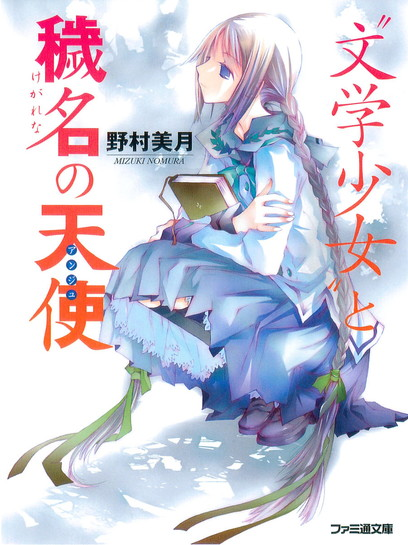
文芸部部長、天野遠子。物語を食べちゃうくらいに愛するこの〝文学少女〟が、なんと突然の休部宣言!?その理由に呆れ返りつつも一抹の寂しさを覚える心葉。一方では、音楽教師の毬谷の手伝いで、ななせと一緒に放課後を過ごすことになったりと、平和な日々が過ぎていくが......。クリスマス間近の町からひとりの少女が姿を消した。必死で行方を追うななせと心葉の前に、やがて心葉自身の鏡写しのような、ひとりの〝天使〟が姿を現す──。大好評シリーズ第４弾！
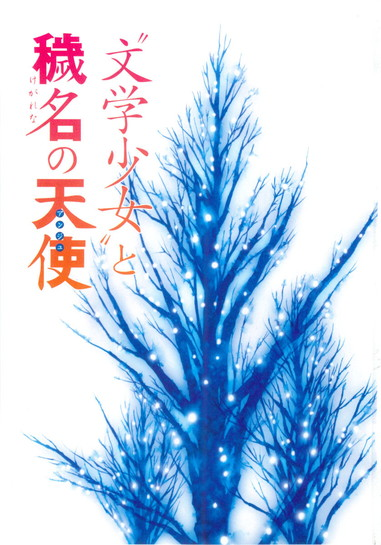
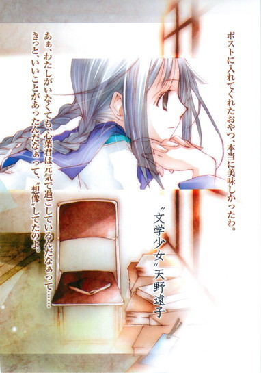
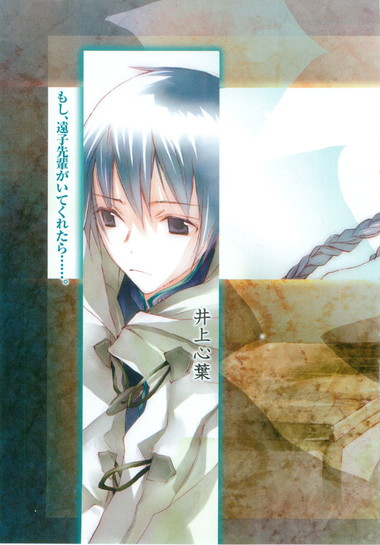
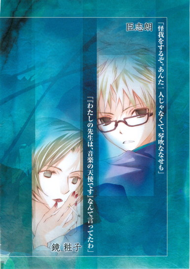
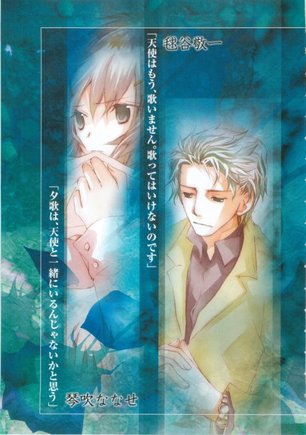
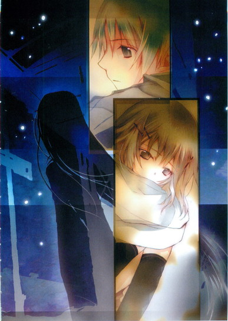
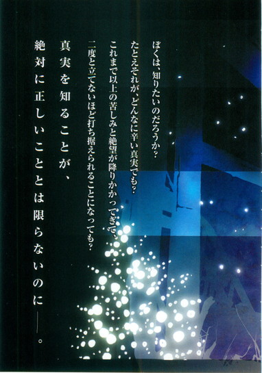
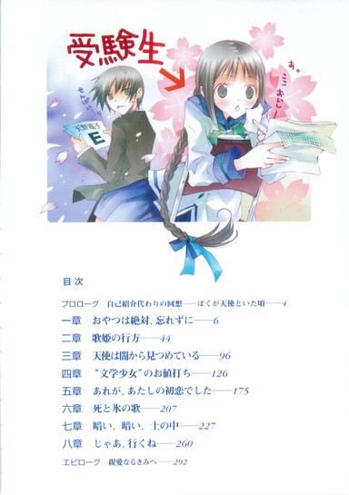
目次
プロローグ 自己紹介代わりの回想──ぼくが天使といた頃──
一章 おやつは絶対、忘れずに──
二章 歌姫の行方──
三章 天使は闇から見つめている──
四章 〝文学少女〟のお値打ち──
五章 あれが、あたしの初恋でした──
六章 死と氷の歌──
七章 暗い、暗い、土の中──
八章 じゃあ、行くね──
エピローグ 親愛なるきみへ──
〝文学少女〟と穢名の天使
野村美月
たくさん扉を作って、罠をしかけておいたので、誰もこの場所へは辿り着けないと天使は言った。
ここは、天使と私だけの、闇のお城。
このやわらかな暗がりの中でだけ、私は自分の身に降りかかった不運を嘆くことができるし、日の下で清らかなふりをして笑っている自分の醜さや汚さを、蔑むことも哀れむことも許される。
そして、ななせの親友であり続けることも──。
プロローグ ◎ 自己紹介代わり回想──ぼくが天使といた頃
彼は天と地上にまたがって生きる人──そう歌姫は言った。
ぼくにとっては、美羽こそがそんな存在だった。
大勢のクラスメイトの中で、美羽の姿だけが真っ白な光に包まれて見えたり、美羽の声だけが、天上から降り注ぐ爽やかな音楽のように耳をくすぐったり、語られるその言葉に胸を強くつかまれるたびに、美羽は他の誰とも違う特別な子なのだと思った。
きっと美羽は天使で、背中に透明な羽根を隠しているのだ。
そうでなければ、ぼくと同じ歳の女の子が、あれほど軽やかに、自由に、美しい物語を作り出せるはずがない。
美羽がぼくの隣にいること。
子猫のようにいたずらっぽい目でぼくを見つめ、甘く澄んだ声で「コノハ」「コノハ」と呼びかけて、当たり前のように腕をからめてくれること──それはぼくにとって、神様から与えられた奇跡のような恩寵で、永遠に続いてゆくはずの日常だった。
けれど、ぼくは美羽の真実を、どれだけ知っていたのだろう。
本当の美羽は、どんな女の子だったのだろう。
美羽とぼくの平和な日々は、中学三年生の、あのおだやかに晴れた夏の午後、最悪の形で砕けてしまった。
美羽は学校の屋上から飛び降り、ぼくは為す術もなくそれを見送った。
そうして引きこもりになったぼくは、冬の終わりに、カーテンを閉め切った穴蔵のような部屋からどうにか這い出し、受験をし、高校へ進学して、そこで天野遠子先輩に出会ったのだ。
この世にある、ありとあらゆる本を愛し、〝文学少女〟を名乗る彼女もまた、想像という輝かしい翼で、天と地を自在に行き来する人だった。
一章 ◎ おやつは絶対、忘れずに
「あ、お砂糖のタルトだわ」
原稿用紙の端を小さく千切って口に入れると、遠子先輩は嬉しそうに、にっこりした。
「ざくざく崩れてゆくタルト生地の中に、コクのある赤砂糖と黒砂糖、大粒のクルミの、リズミカルな食感......」
溜息とともにつぶやき、大切そうにちまちま破いては口へ運ぶ。
「噛みしめるごとに広がる素朴な甘味......しっかりと甘いのに、決してクドくはならない絶妙のバランス」
ぴりっ。しゃくしゃく。こくっ。
本の塚に埋もれそうな狭い部室に、奇怪な音がひそやかに響く。
遠子先輩は、物語を食べる妖怪なのだ。
「わたしは妖怪ではなく、ただの〝文学少女〟です！」
と本人は主張しているけれど、紙に書かれた文字を美味しそうにパリパリやっている姿は、とてもまっとうな女子高生には見えない。
「あのねっ、お砂糖のタルトは、タルト＝シュクルというのよ。シュクルはフランス語で、お砂糖の意味なの。表面がちょっと焦げて、苦くなっちゃってるけど、そのアクセントがまた、たまらないわ。今日は合格！えらいぞ、心葉くん！」
〝焚き火〟〝トナカイ〟〝早食い競争〟の三つのお題で書いた〝おやつ〟は、遠子先輩のお気に召したらしい。
早食い競争に敗れ、夜の森を孤独に彷徨うトナカイが、彼を一途に待ち続けていた恋人の少女と、焚き火の前で再会する──。
そんなベタベタな話を書いてしまったぼくは、素直に喜べなかった。
もっと、ひねったほうが良かったかな......。
いつもおかしなオチをつけて「まず～い」とべそをかかせているので、たまには遠子先輩の好きな、甘い話を書いてあげようと思ったのだけど......。
「タルト＝シュクルなんて聞いたことありませんよ。その味になったのはたまたま偶然です。本当は女の子に、火のついた薪で殴られて、トナカイ汁にされる予定だったんです。再会したところで制限時間がきちゃったんですよ」
原稿用紙を片付け、シャーペンをケースにしまいながらそっけなく言う。
すると、窓際でパイプ椅子に体育座りしておやつを食べていた遠子先輩は、口に原稿用紙の欠片をくわえたまま、青ざめた。
「そんなぁ、せっかくのお砂糖のタルトに、ワサビ入りのトマトケチャップを浴びせるような真似をしなくても......」
細い肩をすくめ、腰の下まである長い三つ編みを揺らして、いやいやと怯えてみせたあと、すぐにまた日だまりの中の猫みたいに目を細める。
「よかった。トナカイさんが幸せになったところで終わって。本当に、とっても甘くて美味しいわ」
そんな顔をされると、胸の奥がむずむずして、居心地が悪くてたまらない。
決めた、次は絶対に、どろどろのホラーにしてやろう。
「あぁ、美味しかったぁ！ ごちそうさまでした！」
ぼくの企みも知らず、遠子先輩は最後の一欠片まで、幸せ一杯の顔で飲み込んだ。
「それはよかったです（......けど、次は、ホラーでスプラッタですから）」
爽やかな笑顔を作りつつ、心の中でそんな風に、つぶやいたとき──。
「これでわたしも、心おきなく休部できるわ」
遠子先輩が、さらりと言った。
「へ？」
「ほら、わたし三年生でしょう？ そろそろ受験に専念しなきゃ」
「まだ専念してなかったんですか！」
ぼくは唖然とした。今、十二月だぞ！受験まであと二ヶ月くらいしかないじゃないか。なのに、いつまでたっても部室で蘊蓄たれながら、本をぴりぴりむしゃむしゃやっているので、てっきり推薦で決まっていると思っていたのに──。
「するんですか!? 受験！」
「もちろん。わたしは燃える受験生よ」
おっとりした顔で、堂々と断言する。ああ、ここまで呑気な人だと思わなかった。
肩を落とすぼくを見て、遠子先輩が年上のお姉さんぶって言う。
「そんなにがっかりしないで、心葉くん。尊敬する先輩と会えなくなって寂しい気持ちは、よぉくわかるわ。わたしも、おやつを食べられなくなるのは──いえ、慣れ親しんだ部室を離れるのは辛くてたまらないもの。
けどね、人は、甘い本ばかりめくっていてはダメなのよ。ときには石川啄木の『悲しき玩具』や『一握の砂』を、じっくり読むことも必要なの。
そう......、千切りにした大根と人参のなますを、どんぶりに山盛りにして、延々食べ続けるように──お酢の染みこんだ大根の儚さと人参の固さに人生の辛酸を感じながら、そこに混ざるほんの少しの砂糖の甘さに勇気づけられるように、噛みしめ、噛みしめ、食べるのよ。なますって、とても体にいいのよ。心葉くんも試してみて」
「意味わかりません！」
「幸せな春を迎えるために、冬はなますを食べて頑張りましょうってことよ」
「ぼくがなます食っても、遠子先輩の学力がアップするわけじゃないでしょう。それに石川啄木って、貧乏で死んじゃったんじゃないですか。報われてないです、落ちますよ」
「いやああああああっ、デリケートな受験生に、不吉なこと言わないで～」
両手で耳をふさぎ、椅子の上で縮こまる。
「ああ、もういいです。さっさと家に帰って勉強してください」
投げやりに言うと、急に年上っぽい眼差しになり、くすりと微笑んだ。
「ええ、ありがとう。そうするわ」
脱ぎ捨てた上履きに、スクールソックスに包まれた小さな足を差し入れ、立ち上がる。
そうして、三枚ほどのレポート用紙を、ぼくに差し出した。
「？ なんですか？」
「差し入れリストよ。心葉くんも尊敬する先輩のために、なにかしたいでしょう？」
〝クレヨン〟〝消防署〟〝リンボーダンス〟──熱々のフォンダンショコラ風味。
〝蝶々〟〝恐山〟〝サーファー〟──ふんわり癒しのバニラスフレ風味。
〝懐中電灯〟〝ラフレシア〟〝英検〟──豪華フルーツパフェ風味。
そんな言葉が、びっちり書いてある！
なますを食べて精進するんじゃなかったのか！
「毎日、ひとつずつ書いてねっ。う～～～～んと甘いおやつをお願い。楽しみだわぁ。あっ、引退は卒業までしませんから、安心してね」
にっこり笑い、ひらひらと手を振って部屋から出て行く三つ編みの妖怪を、ぼくは茫然と見送ったのだった。
「なんて、勝手な人なんだ！」
翌朝。ぼくは教室で、芥川くんに怒りをぶちまけた。
「誰のことだ？」
「遠子先輩だよ！ もともとぼくは、どこの部にも入るつもりはなかったんだ。なのに、文芸部なんて怪しい部に引っ張り込んで、毎日作文を書かせて、自分は本を読みながら呑気に蘊蓄をたれ流して、今度はいきなり休部するとか言って、その間も自分が読みたいから作文書けとかさ」
「不満か？」
「大不満だよ」
「でも、書くんだな？」
芥川くんが、机の上に広げてある五十枚綴りの原稿用紙に目を落とす。
ぼくは書きかけの三題噺を、両手でこそこそ隠した。
「し、仕方ないじゃないか。書かなきゃ先輩への尊敬が足りないとか、心葉くんのせいで受験に集中できないとか、駄々をこねるに決まってるんだから、あの人は」
芥川くんの端整な顔が、おかしそうにほころぶ。
「井上は、普段は冷静なのに、天野先輩がからむと子供っぽくなる」
「なにそれ。子供っぽいのは遠子先輩のほうだよ。ぼくが、あの人の面倒を見てるんだ」
「そうか」
「そうだよっ」
「まぁ、そういうことにしておこう。それより、オレのメールは、無事に届いたか？」
「えっ！」
制服のポケットから、慌てて携帯電話を引っ張り出す。
ナイトブルーのそれは、先日購入したばかりの新品だ。今まで必要ないのでいらないと言っていたのだけど、芥川くんという友達もできたことだし、やっぱり持っていたほうが便利かなと思い、家族割で契約してもらったのだ。
「ゴメン、メールのチェックをする癖が、ついてなくて。昨日、ぼくのほうから『メアド決まったよ』って、きみの携帯に送ったんだよね」
着信を確認すると、芥川くんと、何故か妹の舞花の着信もある。小学生の妹もスイミングスクールの送り迎えのために携帯を買ってもらったので、嬉しくてメールを打ってみたのだろう。今朝、蜜柑のジャムを塗ったトーストを囓りながら、ふくれっ面でぼくを見ていたのは、このせいか。うわっ、あとで返事をしてやらないと。あれですねると結構面倒くさい。
「芥川くんのメール、ちゃんと届いてるよ。って、芥川くん顔文字使うんだね。意外」
芥川くんが、照れくさそうな顔になる。
「姉二人に、あんたのメールは硬いと言われてな、改善してみた。なかなか便利だぞ」
「そっか。なら、ぼくも妹に教えてもらって、うんと珍しいやつを探して送るよ」
「ああ、楽しみにしている」
と、そこへクラスの女の子たちが、かたまってやってきた。
「ねぇ、井上くん、携帯買ったんだね！ うわぁ最新の機種だ。カッコいい」
「井上くん、あたしとメアド交換しない？」
「あたしも！ いいでしょう？ 井上」
いきなり囲まれて、ぼくは面食らってしまった。芥川くんならともかく、どうしてぼく？これまでぼくは、女の子にモテたことはないのに。
「ほら、ななせもっ」
後ろのほうにいた琴吹さんを、森さんが引っ張り出す。琴吹さんが、わたわたする。
「あ、あたしは別にっ。井上のメアドなんか聞いても、用ないし」
「えーっ、みんな、交換するんだから、ななせもしなよ～」
「そうだよ。連絡綱を回すとき困るじゃない。はい、ななせ、携帯貸して」
「い、いいってば」
「もぉ、焦れったいな。ええい、ここか！」
「や、ダメ！ 森ちゃん、返して！」
森さんが、琴吹さんのポケットに手を突っ込んで携帯を取り上げる。
あの......そこまでしなくても。琴吹さん、ものすごく嫌がってるみたいだし。
と、そのとき。
「ななせー、お客さーん！」
廊下に、カジュアルなスーツを着た優しげな男性が立っているのを見て、琴吹さんは、「げっ！」という顔をした。それから焦っているようにぼくを睨みつけ、あっちを見て、またこっちを見て、またあっちを向き、こっちを向く。
「琴吹さん、呼ばれてるよ」
「い、井上に言われなくても、わかってるよっ」
キッと言い放ち、唇を噛みしめ、廊下のほうへダッシュしていった。
「あっ、マリちゃんだ」
「うわぁ！ ななせに何の用かな？」
去年の春から音楽を教えている毬谷敬一先生は、品の良い顔立ちで、女子に人気なのだ。ちょっと変人だという噂もあるけれど......。
「マリちゃん、絶対、ななせに気があるよね！」
「うんうん。〝ななせくん〟なんて名前で呼んじゃってさ、授業中もよく、ななせのこと見てるし。やたらななせのこと、かまいたがるし。どうする？井上くん？」
「えっ、ど、どうって......？」
「ななせは、男の子に人気あるんだよ～。なんたって美人だし、ガード固いトコが、そそるしね。うかうかしてると、ヤバいよ」
ヤバいってなにが？
「あーっ、もぉ、マリちゃんとななせ、なに話してるんだろ。気になる～」
森さんたちは異様に盛り上がっている。ぼくは、ちんぷんかんぷんだった。隣で芥川くんが肩をすくめている。
毬谷先生は手をあわせ、琴吹さんになにか頼んでいるようだった。けれど琴吹さんは、ろくに聞いていないようで、ぼくのほうを、ちらちら睨んでいる。頬をふくらませ、唇を尖らせたその顔が、今朝、不満そうな上目遣いでむくれていた小学生の妹に似ていると思ったとき、毬谷先生が、急にぼくのほうを見た。
おや？ という眼差しをしたあと、高そうな時計をはめた手を、ちょいちょいと振って、おいでおいでをする。
ぼくですか？ と目で問いかけると、人好きのするやわらかな笑顔で、うなずいた。
戸惑いながら、廊下へゆき、
「なにかご用ですか？」
と尋ねると、耳をくすぐるような、軽やかな甘い声で言ったのだった。
「井上くん、きみ、放課後、私の仕事を手伝ってくれませんか？音楽室の資料の整理をしてほしいんですよ」
「ちょ......っ！ なんで井上に頼むの！」
琴吹さんが、ぎょっとした様子でわめく。
「だってななせくん、さっきから井上くんに、アイコンタクトしてたでしょう？『一人じゃ大変だから、手伝って』って」
「してない！ てゆーか、そもそも引き受けてない」
「おや？ では何故、井上くんのことばかり見ていたんですか？」
「そ、それは......っ！」
「井上くんは、もちろん手伝ってくれますよね？」
「え、あ？ はい」
軽やかな声と親しみやすい笑顔につられて、反射的に返事をしてしまいハッとした。
あれ？ 今ぼく、はいって言った？ マズい！琴吹さんが唇を尖らせて睨んでいる。
「おお、ありがとう。では早速、今日の放課後からお願いしますよ。仕事はたっぷりありますから、二人とも頑張ってくださいね」
毬谷先生が、満足そうにぼくらの肩を叩いた。
「井上のせいだからねっ」
放課後。琴吹さんは、とっても怒っていた。
二階の東南にある音楽準備室は、大量の段ボール箱で埋もれている。ぎっしり詰まった資料を分類し、ファイルにまとめるのが、ぼくらの仕事だった。
「ご、ごめん......でも、もともと琴吹さんが、先生に頼まれたことだし......」
「井上が引き受けなかったら、断ってた。って、井上と働きたかったわけじゃないからねっ」
ぷりぷりしながら、段ボールを開き、資料をがしがし床に積み上げてゆく琴吹さんに、毬谷先生が、華やかな明るい声で言う。
「やぁ、嬉しいですね。ななせくんに手伝ってもらえて。ぶっちゃけ好みなんですよね、ななせくん。むくれ方がチャーミングです」
「あたしは、オヤジは趣味じゃありません！それに、ななせって呼ぶな！」
「すみませんね。苗字がななせだと思って、うっかりそちらで覚えてしまったので」
「名簿に、フルネームが書いてあったでしょ！」
「そうでしたっけ？」
「～～～～っ！」
琴吹さんが苛立たしげに唸り、くるりと背中を向けてしまう。先生は、ぼくのほうへ体を寄せ、楽しそうにささやいた。
「ムキになるところが、可愛らしいですよね。あーゆー子になじられると、ぞくぞくして抱きしめたくなりますよ」
「先生......その発言は教師としてどうかと」
「教師も、教室を出れば一人の成人男子ですよ、井上くん」
「せめて校舎を出てからにしてください」
顔をくっつけて、ひそひそ話していると、琴吹さんがそぉっと振り返った。
とたんに先生が、嬉しそうに声を張り上げる。
「あれ？ ななせくん。私と井上くんがなにを話しているのか、気になりますか？ななせくんは可愛いねぇって褒めてたんですよ。ねぇ？井上くん」
「え、はぁ、その......」ぼくは困ってしまった。
「べ、別にっ！ 気にしてないから」
琴吹さんが、慌てて背中を向ける。
「あっ、ななせくんの太ももに、みみずが」
「ひゃっ！」
琴吹さんが飛び上がり、スカートの下を、ばたばた払う。目が思いきり泣きそうだ。
「ふむふむ、やはりみみずが苦手ですか。そうだと思いました。私は、女の子の趣味嗜好を当てるのが得意なんです。ちなみにみみずは、十二月は冬眠で活動を休止していると思われるので、安心してください」
「～～～～っ、こ、このっ、セクハラ教師！」
資料をぐしゃぐしゃっと丸めて投げつけてくるのを、先生が、ひょいっとよける。それは、ぼくの顔に命中した。
「痛っ」
「や......っ！ い、井上、どんくさい。ちゃんとよけてよ」
琴吹さんが、真っ赤な顔でおろおろし、ぶつぶつつぶやきながら背中を向けてしまう。
かと思ったら、心配そうにちらっと振り返り、また慌てて前を見る。
「ねっ、可愛いでしょう」
先生がぼくの肩に手をかけ、ウインクした。
琴吹さん......遊ばれてるよ。
ぼくは同情した。けど──。怒ったり慌てたりしている琴吹さんは、先生が言うように可愛らしく見えた。琴吹さんって、こういう子だったんだな。よく、クラスの男子が、琴吹ななせはイイと騒いでいるのがわかったような......。
「そろそろ休憩にしましょう」
一時間ほど作業をしたあと、毬谷先生が、紙コップにお茶を淹れてくれた。
ミルクティーみたいだけど、色も風味も濃くて甘い味がする。シナモンの香りがふんわり漂う。あ、生姜も入ってるかな。
「チャイというんですよ。インドで飲まれている、甘く煮たミルクティーです。どうですか？」
「はい、美味しいです」
遠子先輩が好きそうな味だ。甘くて、あたたかくて、疲れがとれて、ホッとして......。
先生が目で微笑む。
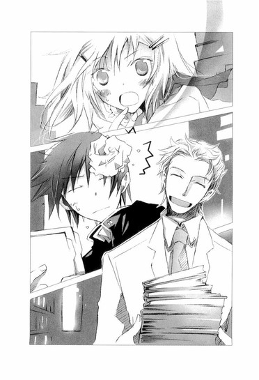
「それはよかった。私は、客人にチャイを振舞うのが大好きなんですよ。ななせくんも、お気に召していただけましたか？」
「......美味しい」
「私と結婚したら、毎日飲めますよ」
「しないっ、てゆーか。絶対絶対有り得ない！」
猫が毛を逆立てるようにわめく琴吹さんに、先生がめげずに言う。
「おぉ、そうだ。友人が、オペラのチケットを送ってきたんですよ。学生の発表会ですが、主役のテノールはプロの客演です。一緒にどうですか？ななせくん？」
指にチケットを挟んで見せると、少しは興味があるのか、琴吹さんが横目でちらりと見上げた。
「......それ、あたしももってる」
毬谷先生が、意外そうな顔をする。
「おや？ 奇遇ですね？ オペラお好きですか？趣味があいますね。運命でしょうか」
琴吹さんが慌てて否定する。
「ちが......っ、友達が出演するんで、自分で買ったんです！」
「なんと、お友達は白藤音大附属の生徒さんでしたか。それなら私の後輩ですよ！ちなみに美人ですか？」
「だったらなにっ」
「いや、ぜひ三人でネパール料理でも囲みたいなーと。お友達はフリーですよね？」
「夕歌は彼氏いるから！ いなくても、音楽鑑賞の時間に、耳栓して居眠りしてるようないい加減な音楽教師に、親友は紹介しないっ」
「私は仏教徒だから、賛美歌を聞くと、おへそから豆の蔓が伸びてくるんです」
「そんなの、聞いたことないよっ」
「嘘ですから」
「～～～っ！」
「せ、先生！ そのへんでやめたほうが。琴吹さんも、げんこつ振り上げたりしないで。ね？」
不穏な空気を感じて、慌てて仲裁に入ると、琴吹さんは急に赤くなり、おろした手で、ぱっぱっとスカートを払うと、そそくさと作業に戻った。
毬谷先生は、そんな琴吹さんを、甘い湯気の向こうからおだやかに目を細めて、見つめていた。
「マリちゃんは、声楽の勉強をしてたんだよ。大学のときパリに留学してて、向こうのコンクールで入賞したこともあるんだよぉ」
翌日の昼休み。芥川くんとお弁当を食べていたら、森さんたちが、わざわざやってきて、毬谷先生の話をはじめた。
「ご両親も音楽家で、天才って呼ばれてたんだって。とろけるような、甘ぁいテノールで歌うらしいよ。マリちゃんなら、プロデビューしたらアイドル並みに人気出てたよねぇ。なんで教師になったんだろ。もったいな～い」
「あ、でもでも、彼氏にするなら、過去のある年上の美青年よりも、同年代の普通～の子のほうがいいよね？頑張れ、井上」
「そうだよ。ななせはブランド志向じゃないから、安心してどーんと行っちゃえ」
「あっ、ななせ戻ってきた！ じゃあね、ななせをよろしくね、井上くん」
ばたばたと去ってゆく森さんたちを、ぼくは、ぽかんと見送ったのだった。
「......今のどういう意味？ 芥川くん」
「だいたいわかるが、琴吹に恨まれるから言えない」
芥川くんが、気の毒そうに箸を置く。
けど......そうか。
ぼくは、レタスとオムレツのサンドイッチを手にしたまま、ぼんやりと考えた。
毬谷先生も天才と呼ばれていたんだ。
放課後。遠子先輩が中庭に不法設置した恋愛相談ポストに、差し入れの三題噺を投函してから音楽準備室へ行くと、ドアの前に知らない男子生徒がいた。
背丈はぼくと同じくらいだろうか。色の抜けた明るい髪をしていて、細身で眼鏡をかけている、これといって変わったところのない、ごく普通の生徒だ。
彼は顔を伏せ、ぼくの傍らを空気のように、するりと通り抜けていってしまった。
あれ？ 今の人、準備室に用があったんじゃないのかな......？
ドアを開けると、毬谷先生がパイプ椅子に腰かけ、チャイを飲んでいた。考え事をしているのか、指を口元に当て、無防備にぼぉっとしている様子が、どこかの三つ編みの文学少女を思い出させて、苦笑した。手首で、重そうな時計がきらきら光っている。
「あれ？ 井上くん、一人ですか？ ななせくんは？」
「用があって遅れるそうです」
「あー、よかった。昨日いじりすぎたから、逃げられたのかと、ひやっとしましたよ」
「......自覚があるなら、自重してください」
「やぁ、だって、反応が楽しくてつい」
内緒ですよというように、目で笑いかけてくる。
昨日から先生は、そんな風に、仲良しの親戚のお兄さんのような親しげな視線を投げてくる。そうされると、胸がちょっとくすぐったくなる。
「先生は、海外のコンクールで入賞して、天才って呼ばれてたそうですね」
「はは、そんなこともありましたね」
毬谷先生が、軽やかに笑う。
その笑顔があんまり自然だったので、ぼくはつい訊いてしまった。
「どうして、プロにならなかったんですか」
口にしたとたん、胸の奥がズキッとした。答えを待つぼくは、息をつめ真剣だった。
「......」
何故なら、ぼくも、かつて天才と呼ばれたことがあったから。
平凡な中学生だったぼくを、大きな波が飲み込んだのは、中学三年生の春だった。
たまたま応募した小説雑誌の新人賞を、史上最年少の十四歳で受賞し、ペンネームが井上ミウなんて女の子名だったせいで、謎の覆面天才美少女作家という大層な呼び名を頂戴し、全国区の有名人になってしまったのだ。
二年以上の歳月が流れた今、ぼくはおだやかな日常を生きている。友達もできたし、笑えるようにもなった。
毬谷先生は──どうだったのだろう？
周囲に天才と賞賛され、将来を嘱望されながら、何故、教師になったのだろう？
そのことを、今、どう思っているのだろう？
先生は甘い湯気の向こうで、優しく口元をゆるめた。
「私は、好きな人と一緒にゆっくり過ごす時間を、なによりも大切にしたかったんですよ。華やかなステージとか、胃が引き絞られるような修練とか、過密なスケジュールとか、そういったものは、肌にあわなかったんです」
濁りのない澄み切った声だった。
目をやわらかく細め、金色の蜜がとろけるように笑うと、乾杯するように紙コップを持ち上げる。
「だから、自分の選択を後悔はしていませんし、断言します。一杯のチャイがあれば、人生は素晴らしいし、平凡な日常は何物にも勝ると」
その言葉も、声も、光のようにぼくの心にまっすぐに差し込み、シナモンの香りが漂う甘いチャイのように、ぴりっとした刺激を残しながら、体の隅々にまで、ゆっくりとあたたかく染み渡った。
先生の笑顔から、目が離せなかった。
ああ、いいなぁ。
ぼくもいつか、こんな風に自分の人生を肯定できるようになりたい。
ささやかな日常を愛おしみながら、ゆったりと自然に、毎日を過ごしたい。
変人だとばっかり思っていた毬谷先生が、とても広くて大きな人に見えた。
やがて、琴吹さんが息を切らして現れた。
「いらっしゃい、ななせくん。そんなに大急ぎで走ってくるほど、私に会うのを楽しみにしてたんですね」
「ち、違う......っ」
「おや、みみずが」
「ひゃ！」
「琴吹さん、みみずは冬眠中だよ」
「ぅぅっ、うるさい、井上っ」
昨日と同じように、毬谷先生が琴吹さんをからかう。
琴吹さんが真っ赤な顔で怒ったり、ぼくが仲裁したり......。
そんな、どうってことのないやりとりが、楽しくて、あたたかで、心地よかった。
『こんにちは、心葉くん。
ポストのおやつ、いただきました。
〝校門〟と〝くじら〟と〝バンジージャンプ〟のフレッシュミントゼリー風味。
ゼリーが甘くて、ミントというよりは、濃いミルクティーのようだったけれど、口の中で、さっと溶けていって、シナモンと生姜の香りがして美味しかった～。そう、まるでチャイの味ね。ラストの一文は、熱でとろとろにとろけたゼリーが、おなかの中にあたたかく落ちてゆきました。とても幸せな気分。ごちそうさま。
業者テストの結果がＥ判定で、ちょっと落ち込んでたのだけど、心葉くんのお話を食べて元気が出ちゃったわ。また、美味しいおやつを書いてね。
うわっ。見抜かれてる。
放課後。ポストに入っていた、遠子先輩からのお便りを読み、頬がじわじわと熱くなった。チャイの味......まさにその通り。意識したつもりはなかったんだけどなぁ。
それにしてもＥ判定って──。遠子先輩、大丈夫なのか？
受験の前に、腹をくだされたら困るので、当分幽霊の特盛りはやめておこう。
授業中に仕上げた新しい〝おやつ〟を投函し、ぼくは音楽準備室へ向かった。
◇ ◇ ◇
天使が、もみの木を運んできてくれた。
ゆうべ私がバイトのことで、ひどく落ち込んでいたから、励ましのつもりだったのだろう。天使は、私のこと、なんでも知っている。私も、天使にだけは、なんでも話す。
ななせにも打ち明けられないこと、醜いこと、汚いことも、全部。
クリスマスにはまだ早いけれど、天使と二人で土を掘って、もみの木を植えた。私と天使の大事なクリスマスツリー。
明日は、天使の羽根や、クリスタルの聖堂や、金色の鐘や星を飾ろうって約束した。それから、電気も灯さなきゃって。
天使は、神様を信じてないから、クリスマスも賛美歌も嫌いだと言う。私が賛美歌を歌ったら、耳をふさいで、やめろって叫んだ。私も神様は信じられないけれど、クリスマスは好き。ツリーのイルミネーションを、一晩中だって見上げていられる。そうすると、神様は信じていなくても、とても神聖な清らかな気持ちになる。光の中に、心が、すーっと吸い込まれていく感じ。
ツリーの中に、住めたら良かったのになぁ。そうしたらきっと、私の醜さも、白い光の中に溶けて消えてしまうのに。
今年のイブは、彼と過ごす。
クリスマスは、ななせと過ごす。
ななせは、井上くんとうまくやってるのかな？昨日の電話では、また井上のこと睨んじゃったよー、キツイこと言っちゃったよーって、落ち込んでたけれど。
ななせは、すっごく可愛くてイイコだから、もうちょっとだけ積極的になったら、井上くんも絶対惚れちゃうと思うんだけどなぁ。
いつか、ななせと井上くんと私と彼でＷデートできるといいねって、話したとき、自分がひどい嘘つきのような気がして、胸が痛くなって、泣きそうになって困った。
◇ ◇ ◇
「琴吹さんって、毬谷先生と仲良いよね」
「ば、バカ......っ！ なに言ってんの。そんなわけないでしょ」
一時間後──。日差しのあたたかな準備室で、ぼくは琴吹さんと仕事をしていた。
毬谷先生が職員室に用があり、出ていったので、部屋の中はぼくと琴吹さんの二人きりだ。琴吹さんはぼくの隣で、紙をばさばさめくりながら、唸った。
「井上、目ぇおかしいんじゃないの」
「そうかな。琴吹さん、先生とだと、いつもよりおしゃべりみたいだし」
「......そ、それは」
なにか言いかけて、「なんでもない」と、そっぽをむいて黙ってしまう。
そのまま、すごい勢いで作業を続ける。
そういえば、琴吹さんに訊きたいことがあったんだっけ。どうしよう。思いきって、今、訊いてしまおうか。
「ねぇ、琴吹さん」
「な、なにっ」
「琴吹さんとぼくって、中学のとき、どこで会ったんだっけ？よく考えたんだけど、思い出せないんだ」
ああ、言っちゃった。
でもこの際だからはっきりさせておこう。文化祭の劇の練習で、琴吹さんが泣きながら口走ったこと──。
『井上は、きっと覚えてないよ。けど、あたしにとっては特別なことだった』
『いつも井上と一緒にいたあの子が、作家の井上ミウなんでしょう！』
何故、琴吹さんが井上ミウを、美羽と誤解したのか？
何故、ぼくは琴吹さんと会ったことを覚えていないのか？
琴吹さんの不自然なほどのかたくなさも、多分そこに原因があるのだろうから......。
琴吹さんは、うなだれたまま石のように動かない。唇を噛みしめ、青ざめている。
聞いてはいけなかったのかな......。
後悔したとき、苦しそうに声を押し出した。
「......校章」
「え？」
「校章......で、わからない、かな？」
「えっと、制服につけるバッチの校章だよね？」
琴吹さんの肩が、ぴくっと揺れる。
「待って、今、思い出すから。校章......えーと、えーと......」
ぼくらの中学校の校章は、楓の形をしていた。学年ごとに色が違っていて、琴吹さんがぼくと会ったのは、二年生の冬？だとしたら校章は青で......。
「もぉ、いいっ」
激昂した声が、思考を断ち切る。
琴吹さんは手を固く握りしめ、震えていた。
「む......無理して思い出すことないよ」
空気が冷たく凍りつき、ぼくは途方に暮れてしまった。
そこへ、毬谷先生が戻ってきた。
「すみませんでしたね。職員室から塩大福をかすめてきたので、お茶にしましょう。あれ？ななせくん、どうしました？」
先生の顔が、キスしそうなほど接近し、琴吹さんが慌てて飛びのく。
「な、なんでもないよっ！」
「ああ、私がいなくて寂しかったんですか」
ほのぼの笑う先生に、
「バカ！ 変態！ 違う！」
と、真っ赤な顔でわめく。
少し元気になったみたいだったけれど、そのあと琴吹さんは、ぼくと目をあわせようとしなかった。
校舎が茜色に染まる頃、三人で音楽準備室を出た。
「明日と明後日は、所用で出かけるので、次は木曜日ですね。よろしくお願いします」
「はい、さようなら、先生、琴吹さん」
「......さよなら」
職員室へ戻るという先生と、図書室へ行くという琴吹さんと別れて、歩き出そうとしたとき。
ふと、視線を感じた。
突き刺すような暗い眼差しが、こちらを見ている。けど、人の姿がない。
一体どこから？
階段の前で、周囲を見渡したとき、頭上から風の唸りのような低いつぶやきが、舌打ちとともに聞こえた。
「......いい気なもんだ」
背筋がざわつき、皮膚が粟立つ。
視線を上に向け、四階へ続く階段を、一段一段、息を押し殺して、なめるように見つめる。けれど、そこには誰もいなかった。
なに......今の声？
誰に向かって言ったの？ ぼく？ 先生？ それとも琴吹さん？
耳をすましたけれど、もう足音すら聞こえなかった。
◇ ◇ ◇
先生からお客さんのことで、電話があった。私のこと色々心配してくれてる。
先生は優しい、いい人だ。
久しぶりにデートした彼は、少し不機嫌そう。手に触れても、握りしめた指をほどいてくれない。バイト辞めろって、暗い声で言われた。
気晴らしに、お城の広間に写真をたくさん飾った。
ななせと私の写真。天使と私の写真。どの写真も、私は楽しそうに笑っていて、眺めていると、ああ、この写真の女の子は幸せなんだねぇって思えて、嬉しくなる。
けど、彼の写真だけは、胸が裂けてしまいそうで飾れない。
代わりに、青い薔薇の写真を飾る。
白い薔薇に、青い色を染みこませて作った嘘の色だけど、綺麗。
青い薔薇は、昔は『有り得ないこと』『不可能なこと』の意味で使われていたけれど、今は、遺伝子を組み替えて青い薔薇を作ることに成功して、花言葉も『奇跡』とか『神の祝福』に変わったんだって。
けど、ネットの画像で見たその薔薇は、紫ぽくて、純粋な青には見えなかった......。
だからやっぱり、青い薔薇の意味は『有り得ないこと』の、ままなのかもしれない。
クリスチーヌが、ラウルに言った台詞をつぶやいてみる。
『あたしたちの愛はこの世では悲しすぎるのよ。空の上を歩かせましょうよ！......あそこでなら、この愛もとってもたやすく実現するんじゃないかと思うの！』
せめて、ななせの恋がうまくいくといい。
◇ ◇ ◇
どうしたら、琴吹さんと仲直りできるだろう。
翌日の放課後。ぼくは悩みながら、廊下を歩いていた。
琴吹さんは、まだ昨日のことを気にしているみたいで、教室でもぼくを避けていた。
森さんが、「井上くん、ななせと喧嘩したの？」と心配して尋ねにきたけれど、うまく答えられなかった。森さんも困っている様子で、「ななせは緊張すると固まっちゃうからなぁ。なにがあったのか知らないけど、悪くとらないであげてね」と頼んでいた。
いきなり首筋をつつかれて、ぼくは飛び上がった。
「わっ！」
振り返ると、タンポポ色のバインダーを抱えた、ふわふわした髪の小柄な女の子が、笑顔でぼくを見上げていた。一年生の竹田さんだ。
「こんにちは～、心葉先輩。えへへー。聞きましたよ、ななせ先輩のこと」
「竹田さん......！ な、なに、それ？ なにを聞いたの？」
「ななせ先輩と、音楽準備室で、密室デートだそうじゃないですか。いよいよですね～。それとももう、おろおろしちゃってますか？」
ぼくの脇腹を、肘でぐりぐり押してくる。
「やめてよ、目立ってるよ、竹田さん。密室デートって、音楽の毬谷先生の手伝いをしてるだけで、先生も一緒だし、それにおろおろってなにさ？」
そのとき胸のポケットで、携帯の着メロが鳴った。
ゴメンと断って着信を見て、ドキッとする。
え!? メール？ 琴吹さんから!?
慌てて内容を確認すると、
『ななせだよ。
今日は井上のこと無視してるみたくなっちゃって、ゴメンナサイ(/_:)
あたし、本当は井上のことが...... (>_<)
今日、図書室に来てくれるかな (^_-)
井上に、どうしても話したいことがあるの (*^_^*)』
こ、これは一体──!?
顔文字が頭の中に、ちかちかと飛び交い、パニクるぼくを、竹田さんが指さし言った。
「あ......おろおろしてます」
琴吹さんに、なにが起こったんだ？
話しかけてくる竹田さんを振り切り、動揺したまま図書室へ行くと、琴吹さんはカウンターで仕事をしていた。
「い、井上......っ」
ひどく驚いている様子で、目を見開いてうろたえる。その顔を見て、ぼくのほうも、全身が心臓になったみたいにどぎまぎし、血液がもの凄い勢いで頭に駆け上っていった。
「な、なに？ 返却？」
「その......話したいことがあるって、メールもらったから」
「え？ 誰に？」
「誰って、琴吹さんに。......図書室に来てくれるかなって」
「えええええっ」
思いきり叫んだあと、慌てて両手で口をふさぎ、小声で訴える。
「あたし、そんなメール、出してない」
「けど、さっき琴吹さんのアドレスで送られてきて......」
ぼくも混乱してきた。どういうことなんだ？
「嘘っ、それ違う。だいたい井上にメール出す理由なんて──」
琴吹さんがムキになって、睨みつけてきたときだ。
いきなり森さんたちが、カウンターの前に湧いて出た。
「あれ！ 井上くん、来てたんだ！ ぐーぜーん」
「わー、よかったね、ななせ。井上に大事な話があったんでしょう？」
「ここはあたしたちに任せて、向こうで話しておいでよ。ね！」
琴吹さんの目が、急に険しくなった。
「あたしの携帯から井上にメールを打ったのは、森ちゃん？」
ひやりとするような声の響きに、森さんたちが口ごもる。
「えっとその......」
「さっき、森ちゃん、携帯忘れちゃったから、貸してって言ったよね」
「ご、ゴメンっ。ななせが、井上くんに話しかけられずにいたから......」
琴吹さんの顔がカァァァッと赤くなり、激しい声が空気を裂いた。
「余計なことしないでっ！ あたしは井上のことなんか、大っ嫌いなんだから！」
言葉が耳に突き刺さり、頭が焼けるように熱くなった。
カウンターの周りは静まり返り、琴吹さんが茫然としている目でぼくを見る。それから、急に眉を下げ、泣き出しそうな顔になり、唇をぎゅっと噛むと、カウンターから飛び出し、そのまま走って図書室から出ていってしまった。
「ななせ！ 待って！」
森さんたちが、慌てて追いかける。どうしよう、ぼくも行ったほうがいいんだろうか。でも──。
そのとき、隣で低い声がした。
「最低......だな」
驚いてそちらを見ると、眼鏡をかけた男子が、突き刺すような冷たい目で、ぼくを睨んでいた。
ぼくは息をのんだ。
音楽準備室の前で見かけた生徒じゃないか？
それに、この声！ 昨日階段のところで聞いた声に似ている！
体をこわばらせるぼくを苛立たしそうに見すえたまま、彼はチッと舌打ちをし、カウンターの中へ入っていった。そうして、冷ややかに顔をそむけると、図書委員の仕事をはじめた。
そんな彼を、ぼくは何故悪意を向けられるのかわからないまま、薄ら寒いような気持ちで見ていたのだった。
◇ ◇ ◇
急な仕事が入った。
新しいお客さんに会うときは、いつも少し怖い。また、髪をつかまれて、頬が腫れるほど殴られて、真っ暗な草むらに裸足で放り出されるかもしれないから。
「三倍料金を払えばいいんだろう」
って、三つの顔がいやらしく笑ってるかもしれないから。
生きたまま皮膚を剥がれ、手足を千切られ、喰われるというのは、こんな感じなのかと思った。叫んだら喉が潰れてしまう。だから、奥歯を強く噛みしめ、唇を結んで、ただ泣いていたら、興ざめだって、もっと殴られた。私は彼らにとって、人間ではなく名前のない豚だった。ううん、きっと他の人たちにとっても......。
ななせからメールと留守電が入ってる。井上くんのことで、すごく混乱して、今にも泣いてしまいそうな声。クラスの友達に、なにか言われたらしい。私に会いたいって言ってる。
すぐに飛んでいって、朝まででも話を聞いてあげたい。頭をなでて慰めてあげたい。
ななせが泣くのは、我慢できない。私まで、苦しくて息が止まりそうになってしまう。
けれど、今は無理。出かけないと、遅刻してしまう。
ななせには、あとで電話するとメールした。
彼にもメールをしなければ。
私は彼に相応しくない。彼といると、あの気高さや純粋さを、私の体についた泥が汚してしまう。綺麗な指で優しく触れられるたび、私は愛される資格なんてないんだって、絶望が込み上げてきて、死にたくなる。
彼の名を貶めたくない。彼を穢したくない。それは嫌っ！絶対に嫌っ！
彼のことが好きでたまらなくて、彼のためなら死ぬより辛いことでも耐え続けることができると思うから、私はいつか彼とお別れしなければいけない。
私の愛は、この世では悲しすぎる。空の上を歩かせなければ、清らかにはならない。
だけど、ごめんなさい。もう少し──あと少しだけ、そばにいさせて。その手に触れさせて。せめて、発表会が終わるまでは。
本当にもう間に合わない。
いってきます、ななせ。
二章 ◎ 歌姫の行方
翌朝、いつもより早めに家を出た。
昨日は家に帰ってからも、琴吹さんの泣きそうな顔ばかり浮かんできて困ってしまった。みんなの前で大嫌いと言われたことよりも、琴吹さん自身が一番傷ついているみたいなのがショックだった。まるで、ぼくがあんなことを言わせてしまったような気がして......。遠子先輩の〝おやつ〟を書くため机に向かっても、悶々と考え込んでしまい、一向に手が進まない。唸りながら仕上げた〝蝶々〟〝恐山〟〝サーファー〟──ふんわり癒しのバニラスフレ風味は、とても〝ふんわり癒しの〟とは遠かった。
授業がはじまるまで、まだ時間がある。部室で書き直そう。
肌を刺す冷たい空気を感じながら、校門を通り抜けたとき、琴吹さんの姿が見えた。
あれ？
どんよりした厚い雲の下、琴吹さんは昇降口のほうへ、ひどく頼りない、ふらふらした足取りで進んでゆく。なにか、様子がおかしい。
胸がざわめき、追いかける足が自然と速くなる。
琴吹さんは下駄箱の前に、虚ろな目をして立っていた。
横顔が青ざめていて、表情にも精気がない。
「琴吹さん」
呼びかけると、びくっとして顔を上げた。
「......いのうえ」
掠れた声でつぶやき、勝ち気な目に涙を浮かべる。
ぼくはびっくりした。
「ど、どうしたの！ 昨日のことを気にしてるなら......」
「......ちがうの。夕歌が......」
ゆうか？
次の瞬間、琴吹さんは両手で顔を覆い、わっと泣き出してしまった。
「夕歌がいなくなっちゃったのっ。どうしよう、あたし──あたし──」
ねぇ？ どうしたの？ なにがあったの？ 泣かないで、ねぇ？ぼくに話してみて？
子供みたいに泣きじゃくる琴吹さんをなだめ、手を引いて文芸部の部室へ連れてゆき、パイプ椅子に座らせた。
琴吹さんは小さく縮めた体を震わせ、コートの袖口や制服のスカートを涙で濡らし、何度もしゃくりあげ、ようやく、なにがあったのかを話してくれた。
他校に通う、友人の水戸夕歌さんが、行方不明になってしまったこと。
昨日、図書室を飛び出したあと、琴吹さんは水戸さんの家を訪ねたという。
ところが、そこは窓ガラスが割れて、空っぽで、人が住んでいる気配はまったくなかった。驚いて、通りかかった近所の人に尋ねたら、水戸さんの一家は借金が返せなくなり、二ヶ月ほど前に夜逃げをしたと教えられたのだった。
「......っく、あたし、夕歌と毎日メールしてたし、電話で話もしたし、先月、二人で買い物にも行ったのに。引っ越すなんて、一言も聞いてなかった。ひっく......夕歌の家が、あんなことになってるなんて......っ。昨日の夜、夕歌の携帯に何度も電話したけど、全部留守電になっちゃって。メール打っても、返事がないの。いつもなら、すぐ返事をくれるのに。夕歌は、どこへ行っちゃったんだろう」
顔をぐちゃぐちゃにし、洟をすすりながら泣いている琴吹さんは、混乱しきっていて、誰かが助けてあげなければ崩れてしまいそうに、小さく弱々しく見えた。スカートからはみ出た膝小僧にまで、涙が落ちている。
予鈴はとっくに鳴り、朝のホームルームどころか、一時間目の授業の真っ最中だった。
授業をさぼって、女の子と二人きりでいるなんて、以前のぼくからは考えられない。
けど、親友の失踪に衝撃を受けて、どうしていいのかわからず、声をつまらせて泣いている琴吹さんを、とても放っておけない気がした。
昨日、図書室であんな顔をさせてしまったので、余計にそう感じたのかもしれない。
「琴吹さん、もう泣かないで。一緒に水戸さんのことを調べてみよう。水戸さんの学校に行って、水戸さんの知り合いに訊いてみたらどうかな？ね、ぼくも協力するから」
琴吹さんは泣きながら、小さくうなずいた。
帰宅後。部屋でパソコンを開き、検索をかけてみた。
水戸さんが通う白藤音楽大学の附属高校は、プロの音楽家を大勢輩出している名門だった。授業も音楽を中心に組まれ、海外へ留学する生徒も多い。ホームページに掲載された校舎は、西洋式の豪奢な外装で、ドラマで使われていたのを見たことがある。
水戸さんは、プロのオペラ歌手を目指していたという。もうじき学内のホールで、学生たちによるオペラのコンサートがあり、彼女は主役を演じることになっていた。最近は稽古とバイトで忙しく、電話もなかなか繋がらず、メールでやりとりをすることが多かったという。
入学金と授業料の項目を何気なくクリックし、目をむいた。公立校のおよそ三倍で、私立の普通科と比べても二倍近い金額だ！水戸家は四人家族で、お父さんは普通のサラリーマンだったという。水戸さんがバイトをはじめたのは、学費を稼ぐためらしい。
「音楽の勉強って、お金がかかるんだ......」
そういえば、聖条学園にも広大な音楽ホールがある。あれだけの建物が、オーケストラ部のＯＢの寄付で建築されたというのだからすごい話だ。もっともオケ部は学園の経営者である姫倉一族と深い関わりがあり、ぼくらの常識では計れないのだろうけれど。
検索を続けていたら、携帯の着メロが鳴った。
待ち人から電話が来たらしい。耳にあてると、明るい声が流れてきた。
「久しぶりです、心葉さん。珍しいっすね、そっちから連絡とりたがるなんて」
櫻井流人くんは、遠子先輩の下宿先の息子さんだ。今年の夏、彼が、女の子たちとモメているところに遠子先輩が鞄を振り上げて乱入し、ぼくらは知り合ったのだ。
流人くんは、電話の向こうで、にやにや笑っているみたいな口調で言った。
「遠子姉が、〝おやつがなかったの～～～～〟って、怒ってましたよ。〝楽しみにしてたのに、心葉くんったらひどいわひどいわ、先輩への尊敬がたりないわ〟って」
流人くんが、遠子先輩の口真似をしてみせる。
しまった！ おやつのことをすっかり忘れていた。手直ししてポストに投函するはずだった原稿は、鞄に入ったままだ。
「ちょっと取り込んでて、余裕がなかったんだよ」
「あ～、それ聞いたら、遠子姉、ほっぺがふくらみすぎて破裂しちまいますよ。〝心葉くんのおやつだけを支えに、受験勉強に励んでるのに、もう人生になんの喜びもないわ。受験は失敗よ。心葉くんのせいよ～～～～〟って」
「って、それ、きみの創作だろ」
「いーや、遠子姉の心の叫びっすよ。なんせ心葉さんは、遠子姉の作家だから」
流人くんが、ぬけぬけと言う。
〝遠子姉の作家〟。
以前も言われたその言葉に、頬が赤らむ。ぼくが書いているものはただの落書きで、この先も、決して作家にだけはなるつもりはないのに。
苦い思いを無理矢理飲み込み、ぼくはこれまでのことを流人くんに話した。
「そういうわけで、白藤音大の附属高に知り合いがいたら、紹介してほしいんだ」
「意外っすね。心葉さんが、そこまでするなんて」
「そう......かな」
「心葉さんって、あんま他人と関わりもちたくないヒトだと思ってたから」
また頬が熱くなる。確かにこれまでぼくは、事なかれ主義だった。芥川くんと友達になった文化祭から、少しだけど、確実になにかが変わってきている。
流人くんが、探るような声を出す。
「ひょっとして、そのクラスメイトの琴吹さんってコに、気があったりします？」
ぼくは慌てて言った。
「そんなんじゃないよ。ただ成り行きで放っておけないだけで、琴吹さんがどうとかそういうことは......」
「ま、いっす。心葉さんの頼みだし、引き受けますよ。白藤ならアテがあるんで、これから連絡とってみます」
さすが。平然と三股四股かけて、年中修羅場っているだけのことはある。
流人くんの女の子に対する顔の広さと、行動力には、以前にも驚かされた。知り合いがいなければ、速攻で口説いて友達になる。そういうことをあっけらかんとやってしまえる人間なのだ。本当にぼくより年下なのか？
「ありがとう。やっぱり流人くんは頼りになるね」
ぼくのリップサービスを、流人くんはさらりと受け流した。
「ただし、ひとつ条件があるんすけど」
まるで、麻貴先輩みたいなことを言い出す。
「なに？ 宿題くらいなら手伝えるけど」
「いや、それはやってくれる女の子が一杯いますから。そういうんじゃなくて、心葉さん、イブの予定あります？」
思いがけない問いに、ぼくは面食らった。
「クリスマスイブ？ ないけど」
「やった！ じゃ、それ、キープさせてください」
「イブに男の子とディ×ニーランドへ行って、手をつないで電飾パレードを見るのは勘弁してほしい」
「はは、いっすね、それ。まぁ、とにかくイブは空けといてください。遠子姉より胸の立派な女の子に誘われても、きっちり断ってくださいよ」
「それって、十歳以上の全ての女の子ってこと？」
「おっと、キツイな心葉さん。てゆーか遠子姉すっげー気にしてて、毎朝〝胸がふくらむ体操〟とかしてるんで、いじめないでやってください」
「胸がふくらむ体操って......どんな体操？」
「こう、両手を胸の前であわせて、右に左に、ゆら～ゆら～と。部屋をのぞくと、真剣な顔してやってますよ」
想像して、軽く目眩がした。ヨガだろうか？
「ま、白藤の件は、向こうと連絡とれしだいメール入れます。なんで、遠子姉のおやつも覚えててやってくださいね。マジ楽しみにしてますから。弟からのお願いです」
冗談ぽい口調で言い、携帯を切った流人くんから着信が入ったのは、五十分後──ちょうど遠子先輩のおやつの三題噺を書き終えた時だった。
『明日四時、白藤付属の正門のトコで、待っててください。とびきりの美人が迎えに行きますんで』
そんなわけで、翌日の放課後。ぼくと琴吹さんは、石造りの立派な門の前で、流人くんの知り合いが現れるのを、緊張気味に待っていた。
十二月に入ってから日が落ちるのがますます早くなり、校舎は赤黒い夕日に染まっている。鋭い北風が吹きつけ、琴吹さんが肩を震わせる。
「寒い？」
「へ、平気......だよっ」
昨日、ぼくの前でぼろぼろ泣いてしまったのが恥ずかしいのか、視線をあちこち移動させ、ぎこちなく答える。水戸さんからのメールは今日もなく、三日も途絶えたままだという。それも心配でたまらないのだろう。
すでに十分ほど、待ち合わせの時間を過ぎていた。お嬢様ぽいワンピースの制服の上にコートを羽織った女の子たちが、何人も目の前を通り過ぎてゆくけれど、それらしい人は現れない。流人くんのメールには、〝とびきりの美人〟と書いてあったけど、名前くらい聞いておけばよかったと後悔したとき──。
「あなたが、井上くん？」
いきなり、背筋をくすぐるような色っぽい声でささやかれ、慌てて振り返る。
「正解みたいね。遅れてごめんなさい。流くんのトモダチの鏡粧子よ」
真っ赤な唇を吊り上げて微笑んだのは、細身のブラウスにパンツ、ロングコートという出で立ちの、大人の美女だった。
「煙草、いいかしら？」
近くの喫茶店に入り、ソファーに腰を落ち着けるなり訊かれた。
「えっと......」
琴吹さんのほうを見ると、こくりとうなずく。
「はい、どうぞ」
そんなやりとりを見て、粧子さんは優しく目を細めた。
「ありがと。喉に悪いってわかってるんだけど、やめられなくて」
ライト系の細い煙草をくわえ、銀色のライターで火をつける。その仕草が、モデルのように決まっている。確かにすごい美人だ。流人くんはどこで知り合ったのだろう。
粧子さんは声楽の先生で、水戸さんのことも知っていた。ずっと学校を休んでいるのだと、眉をひそめて語った。
「そろそろ十日になるかしら。寮にも帰ってないようだし。わたしも心配してたのよ」
「夕歌は、寮に入ってたんですか？」
琴吹さんが、頬をこわばらせて尋ねる。
「ええ。秋にご両親が引っ越してしまったのでね」
水戸さんのお父さんが、友達の連帯保証人になり、借金を肩代わりすることになってしまったことや、借金取りが職場にまで押しかけ、仕事を続けられなくなってしまったことなどを、粧子さんは辛そうに語った。
その間、琴吹さんは、真っ青な顔で目を見開いていた。
「今月の発表会で、水戸さんは主役のトゥーランドットを演じることが決まっているわ。どうやらいい先生がついたみたいで、今年の夏頃から、水戸さんの声は劇的に変わったの。それまでは喉を潰すような無茶な歌い方をして、伸び悩んでいたのにね。一体どこのスタジオの講師なのか、それともプロの歌手なのか、わたしも興味があって尋ねたのだけど、水戸さんははぐらかして答えてくれなかったわ。冗談なのか、『わたしの先生は、音楽の天使です』なんて言ってたわ」
琴吹さんが肩をびくっと震わせた。恐ろしい言葉を聞いたように、目に怯えを浮かべる。
「どうしたの？ 琴吹さん」
「な......なんでもないよ」
スカートの端をぎゅっと握りしめ、苦しそうに声を押し出す。なんでもないようには見えないのだけど......。
「主役にも選ばれて、本当に、これからだったのにね。プロとしてもやっていける力を持った子だったのに」
粧子さんはやり切れなさそうに、煙草を灰皿に押しつけた。
「ごめんなさい。そろそろ学校に戻らなきゃ。井上くん、携帯を貸して」
「あ、はい」
差し出すと、慣れた調子でボタンを操作し、返してよこした。
「わたしの番号とアドレスを入れておいたわ。水戸さんのこと、なにかわかったら連絡をちょうだい。わたしもそうする」
「ありがとうございます。あのっ、できたら水戸さんのクラスメイトにも、話を聞きたいんですけど」
「わかったわ。明日またこの喫茶店に来てくれる？」
伝票を持って立ち上がり、粧子さんはふと思い出したように言った。
「ねぇ、井上くんたちは聖条だったわね。マリちゃんは、元気にしてる？」
「毬谷先生と、お知り合いなんですか？」
粧子さんの口元が、ほころぶ。
「大学の後輩よ。マリちゃんはわたしたちの希望の星だったのよ。そりゃあ軽やかで澄みきったテノールで。日本を代表するオペラ歌手になるだろうって、言われてたのよ」
「毬谷先生は元気だし、とても楽しそうですよ。この前も『一杯のチャイがあれば人生は素晴らしい』っておっしゃってました」
「相変わらずね。彼、パリに留学中に、いきなりどっか行っちゃって、一年後にけろっとした顔で帰ってきたのよ。髪はぼさぼさで、日焼けして真っ黒な顔でね。あちこち旅行して来ました、ただいま、とか笑いながら言っちゃって、本当に人騒がせよね」
おだやかな優しい顔で言い、
「水戸さんも、そんな風に、笑顔で戻ってきたらいいのにね」
とつぶやき、粧子さんは店を出て行った。
外は、北風が吹いていた。
通りのウインドウには、赤や金色のリボンや、白い綿で飾られた商品がディスプレイされている。もうじきクリスマスなのだ。
「琴吹さん、〝音楽の天使〟って、なんのことかわかる？」
正面から吹きつけてくる風にマフラーが飛ばされないよう、手でしっかり押さえながら尋ねると、同じように前のめりで歩いていた琴吹さんが、ためらうような素振りを見せたあと、歯切れの悪い口調で答えた。
「......『オペラ座の怪人』のことだと思う」
「『オペラ座の怪人』って、ミュージカルの？」
テレビのＣＭで見た、顔を仮面で隠した黒い服の男を思い浮かべる。
琴吹さんは、苦しそうに「うん」と、うなずいた。
「夕歌はあのミュージカルのファンで、原作も何度も読み返してた。あたしに貸してくれたこともある。その中に、ヒロインの歌姫にレッスンをする〝音楽の天使〟が出てくるの。夕歌は前から、自分も〝音楽の天使〟に会えたらいいのにって言ってたんだ」
琴吹さんはマフラーに、顔を半ば埋めるようにして震えている。
「それにね──」
声をひそめて語る様子は、まるで〝音楽の天使〟を恐れているようだった。
「今年の夏休みに、夕歌から、ヘンなメールをもらったの。『ななせ、わたしは〝音楽の天使〟に会ったのよ』って」
耳元を鋭い風が通り過ぎていった。獣の遠吠えのような冷たい風の音が、琴吹さんの言葉を千切ってゆく。
「そのあとも、天使のことを話すときは、いつもテンションが高くて、『天使があたしを、楽器のように歌わせてくれるのよ』とか、『天使が、空の向こうへ導いてくれるの』とか......酔っぱらってるみたいで、普通じゃなかった」
「水戸さんから、その人の名前を聞いている？」
琴吹さんは首を横に振った。
「ううん」
そうして唇を噛み、急に目に強い怒りを灯し、険しい声で言ったのだった。
「......けど、夕歌は、天使と一緒にいるんじゃないかと思う」
◇ ◇ ◇
天使は、私を最上級の名器のように歌わせてくれる。
初めて会ったあの夜から、ずっとそう。
あの日まで、私は、自分が壊れた楽器みたいだと思っていた。力一杯息を吹き込んでも、掠れた音しか出せないポンコツだって。
けれど、今は違う。
透明な玉を、ころころ転がすようなコロラトゥーラ、どこまでも高く遠く伸びてゆく輝かしいベルカント。弾む声。高まる声。煌めく声。風のような、光のような──声。
あらゆる歌を、私は軽々と、自然に歌いあげ、空とひとつに溶け合ってゆく。
天使が、私の中に押し込められ、縮こまっていた歌を、解き放ってくれた。
歌えば歌うほど、心も魂も透明になって、頭が痺れ、体が軽くなってゆく。なにもかも、忘れられる。
私は、舞台の真ん中で、真っ白な光に照らされ、アリアを歌っているように、恍惚として、幸福で、それでいてとても恐ろしい。
もし、これが全部夢で、目覚めたら霧のように消えてしまったら、とても生きていけない。
◇ ◇ ◇
水戸さんは何故、家族から離れて、一人でこちらに残ることを選んだのだろう。
そうまでして、歌を続けたかったのだろうか。
なのに、発表会の主役に選ばれながら、何故失踪したのか──。
そんなことを考えながら、帰宅後、途中の本屋で購入した『オペラ座の怪人』の文庫を、ベッドに寝そべり読みはじめた。
本は厚く、細かな文字で埋まっている。これは一晩で読むのは厳しそうだ......。
物語は、オカルトめいた雰囲気ではじまる。
時は十九世紀の末。パリのオペラ座に、幽霊が住み着いているという噂が流れる。
幽霊は、〝オペラ座のファントム〟と名乗り、支配人たちに様々な要求を突きつける。
例えば、ファントムに対して、年額二十四万フランを支払うこと。
五番の二階ボックス席は、全公演に際し、ファントムの自由にゆだねること。
クリスチーヌ＝ダーエを、歌姫カルロッタの代役として舞台に立たせること──。
一介のコーラスガールだったクリスチーヌは、この舞台で素晴らしい成功をおさめる。観客は、奇跡のような歌声に酔いしれ、拍手喝采する。
実はクリスチーヌは、〝音楽の天使〟を名乗る正体不明の〝声〟に、秘密のレッスンを受けていたのだ。
クリスチーヌの幼なじみで、彼女に恋する純情な青年、ラウル＝ド＝シャニイ子爵は、彼女が〝音楽の天使〟と話しているのを盗み聞きしてしまう。
そうして、〝音楽の天使〟を師と慕う彼女の様子に、激しい嫉妬を覚える。
クリスチーヌは、〝音楽の天使〟を愛しているのではないか？〝音楽の天使〟は、クリスチーヌを誘惑し、連れ去ろうとしているのではないか？
心が焼かれ、たぎるような衝動をもてあまし、居ても立ってもいられないラウルの心情が細かに描写され、気がつけば手のひらに汗をかくほど、物語にのめり込み、ラウルと一緒に胸が押し潰されそうな不安を味わっていた。
もう一人のクリスチーヌは──水戸夕歌は、無事でいるのだろうか？
水戸さんも、〝音楽の天使〟にレッスンを受けていた。天使が自分を高みへ連れて行ってくれるのだと、酔うように話していたという。そして、水戸さんの声も、クリスチーヌのように素晴らしい進化を遂げた。けれど、天使の名前や素性を、水戸さんは親友の琴吹さんにすら明かさなかった。
それは何故？ 天使に止められていたから？
それとも、水戸さん自身も、天使の正体を知らなかったから？
一体、水戸さんの天使は誰なんだ？ そして、水戸さんのラウルは？
帰り道に、琴吹さんが話してくれたことを思い出す。
『夕歌は天使と一緒にいるんじゃないかと思う。天使と会ってから、夕歌はあたしが遊びに誘っても断ることが多くなって、毎日一秒でも長く、天使と歌っていたいみたいだったから。あたしが、おかしな宗教にでもはまってるみたいって言ったら、すごく怒って、三日もメールをくれなかった。夕歌は......天使の言うことなら全部信じちゃいそうだし、天使に命令されたら、なんでもしそうだった......』
宗教──という言葉に、ドキッとした。天使は水戸さんにとって絶対的な教祖のような存在で、その傾倒ぶりを、琴吹さんはずっと心配していたようだった。親友を、わけのわからないものに奪られてしまったという嫉妬もあったのかもしれない。
『水戸さんには、彼氏がいるって言ってたよね？天使と彼は、同じ人？』
毬谷先生にコンサートに誘われたとき、そんなことを叫んでいたような気がする。
『ううん。夕歌が彼とつきあい出したのは、去年の秋だから別人だよ。彼氏は、うちの学校のやつで、文化祭で知り合ったって、夕歌は言ってた。けど......』
声が途切れる。
『夕歌は、名前を教えてくれなかったの。ななせに彼氏ができたら話すよって、笑って誤魔化して......。しつこく訊いたら、ヒントをくれたけど、それもよくわからなかった』
『どんなヒント？』
『三つあって......彼は九人家族で、考え事があると、机の周りをせかせか歩き回る癖があって、コーヒーが大好きだって』
確かにわかりにくい。コーヒーが好き──そんな人は山ほどいるし、机の周りを歩き回る癖も、よほど身近な人間でなければ気づかない。九人家族は今時珍しいけど、これも学校中の人間を調べるとなると大変だ。
琴吹さんも、弱り切っているようだった。けど、一瞬惚けた顔をしたあと、大事なことを思い出したように言った。
『そういえば......最後に夕歌と電話で話したとき、隣に彼氏がいるって言ってた』
『最後に電話で話したのって、いつ？』
『十日ぐらい前、かな......』
『水戸さんが、学校を無断欠席するようになった頃だね』
『......うん。あの日は、どうしても夕歌に相談したいことがあって、留守電に吹き込んだんだ。そしたら、バイトに行かなきゃいけないから、夜電話するってメールがあって。なのに十二時を過ぎてもかかってこないから、諦めて眠っちゃったんだ。そういうとき夕歌は必ず、電話できないってメールをくれるはずなのに、おかしいと思ったんだけど......。そしたら、夜中の二時過ぎに、いきなり夕歌から着信があったの。驚いて電話に出たらすごくうかれていて、〝今、彼と一緒なの〟って──』
風が、琴吹さんの前髪を跳ね上げ、寒そうに首を縮める。
『──眠ってるとこ起こされたから、よく覚えてないんだけど......〝クリスマスツリーがとても綺麗なの〟とか〝彼が抱きしめてくれて、あったかい〟とか、そんなことをぺらぺら話してた。あのときの夕歌も、異様にはしゃいでいて、おかしかった』
ラウルは、ぼくらの学園にいる。
水戸さんの彼は、自分の彼女が失踪中であることを、知っているのだろうか？
琴吹さんの話では、水戸さんが行方を絶つ直前まで、二人は一緒にいたことになる。
だとしたら、水戸さんの居場所を知っているのは、天使ではなく彼のほうなのではないか？
もうひとつ引っかかるのは、何故水戸さんが失踪したあとも、琴吹さんにメールを送り続けたのかということだった。
水戸さんから最後に電話があったのは十日前。その日から水戸さんは学校を休んでいる。なのに、それ以降も、二人は普通にメールのやりとりをしている。水戸さんは、琴吹さんに失踪を知られたくない理由があったのだろうか？
そして、水戸さんからメールが途絶えたのは三日前──。今、水戸さんはどうしているのか？
脳みそがきりきり引き搾られ、耳鳴りがしてきて、ぼくはベッドに仰向けになり、文庫を開いたまま胸に乗せ、浅い息を吐いた。
わからないことが多すぎる。
もし、遠子先輩がいてくれたら──。
あのお節介で能天気でズボラで、そのくせヘンなところに敏感で、優しい目をしたあの〝文学少女〟なら、この物語をどう読み解くのだろう。
「電話......してみようかな」
顔を横に向け、机の上の携帯電話を見つめると、胸の奥の方が擦れるように疼いた。
「......携帯の番号とメアド、まだ教えてないし」
遠子先輩は携帯を持っていない。救いようのない機械音痴だから、メールのアドレスなんか渡しても、絶対に使わないだろうけど......。
そんなのは口実で、あの、あたたかでお気楽な声が、今、聞きたくてたまらない。
いや、ダメだっ。遠子先輩は受験生なんだから、巻き込んじゃいけない。あの人のことだから、話せば果てしなく首を突っ込んでくるに決まっている。
胸が切なくなり、携帯から目をそらし、シーツをぎゅっと握りしめる。
そうだ、春になったら遠子先輩は卒業して、いなくなってしまうのだから......。
いきなり携帯が鳴り出したので、ぼくは心臓が止まりそうになった。
まさか、遠子先輩!?
慌てて机に駆け寄り、着信を確かめる。相手は芥川くんだった。
「もしもし、井上？」
「芥川くん......どうしたの、急に？」
「いや、琴吹のことで、大変そうだったんで、気になってな。困ってることはないか？」
それは芥川くんらしい気遣いだった。
こわばっていた気持ちがほどけ、声が自然とやわらかくなる。彼と友達になれてよかったと思った。
「ありがとう。こっちは大丈夫だよ。琴吹さんも森さんたちと、仲直りしたみたいだし」
「そうか。オレが力になれることがあったら、なんでも言ってくれ。どんな小さなことでもかまわない。遠慮はするな」
「うん、ありがとう」
翌日。教室で芥川くんと顔をあわせて、ぎょっとした。
「どうしたの!? その傷！」
右の頬と首筋に、爪で縦に引っかかれたような痕がある。首筋の三本の線は、かなり深そうで、紫色に腫れ上がっていて痛々しい。
「ちょっと......猫にな」
芥川くんが苦笑し、ほんの少し目をそらす。
「すごく痛そうだよ、大丈夫」
「ああ......大したことはない」
また少しだけ、目を横にそらす。
「ずいぶん凶暴な猫だね。あれ？ でも、きみんち、猫なんて飼ってたっけ？」
何度か訪問したけど、庭に鯉が泳いでいたくらいで、猫の姿は見なかったような......。
「いや......よその猫だ。扱いがまずくて、機嫌を損ねてしまったらしい」
視線を落ち着かなげに移動させながら、奥歯にものが挟まった口調で言う。
それからいきなり真剣な顔になり、ぼくをじっと見つめ、尋ねた。
「それより、井上は変わりはないか？」
「昨日、会ったばかりじゃないか。電話でも話したし。あ、電話ありがとう」
「いや、それはいいんだ......。そのあと、おかしな電話やメールが来たりとか、そういったことはなかったか？その......最近そういう着信が多いらしい」
「今のとこ、迷惑メールもワン切りもないよ」
芥川くんが、さらに顔を近づけてくる。
「携帯のアドレスや番号を変える予定は？」
「ないけど......どうしたのさ？ 芥川くん？」
ぼくの言葉に、我に返ったように身を引き、無理をしているような笑みを浮かべる。
「いや、不都合がないならいいんだ。気にしないでくれ」
変だな？ どうしたんだろう？ 怪訝に思ったけれど、琴吹さんのことで手いっぱいで、それ以上追及できなかった。
放課後、昨日の喫茶店で、水戸さんのクラスメイトに会った。
彼女たちも、水戸さんの歌が急に上手くなったことに驚いていた。
「主役に選ばれたのも、大抜擢だったんだよ。トゥーランドットは高慢で冷酷なお姫様だから、全然水戸さんのイメージじゃなかったのに」
「相手役のカラフは、若手ナンバー１プロの荻原さんでね、二幕の問いかけのシーンで、荻原さんの声に負けて、ずたぼろなんじゃないかって、悪口言われてたんだよ」
ところが、稽古がはじまってみると、水戸さんの声は、客演のプロの歌手を圧倒する勢いだったという。
「水戸さんは内緒にしてたけど、きっと、すごく有名な先生にレッスンを受けてたんだよ。じゃなきゃ、急にあんな声、出せないって。今も、水戸さんが休んでるのは、どっかで秘密特訓をしてるんじゃないかって言われてるし」
「うん、それなら水戸さんが役を降ろされないのも納得かな。バックにお偉いさんがついてるって噂も前からあるよね。水戸さんを主役に推したのも、その人なんじゃないかって」
「そのお偉いさんが、誰だかわかる？」
「さぁ......」と首を傾げたあとで、思い出したように言った。「あっ、でも！あたし、水戸さんが、黒いスーツを着た男の人と、外車に乗るのを見たことあるんだ。肩なんか抱かれて怪しい雰囲気で、水戸さんはその人に『ツバキ』って呼ばれてた......」
店を出たあと、クリスマス用の、白と金色のイルミネーションに照らされた通りを、琴吹さんと並んで歩いた。
二人で、ぽつぽつと話をする。
「ツバキって、水戸さんのあだ名かな？ 琴吹さんは知ってる？」
「ううん。夕歌が〝ツバキ〟って呼ばれてたことはなかったと思う。それより......夕歌はやっぱり天使のとこにいるのかな。夕歌が学校を休んでいる間に届いたメールにも、天使とレッスンをしてるみたいなことが、ずっと書いてあったし......。夕歌を〝ツバキ〟って呼んでた男が、天使なのかも」
琴吹さんの表情は険しい。どうも、琴吹さんは音楽の天使に敵意を抱いているようで、親友の失踪を、完全に天使と結びつけて考えているようだった。
『オペラ座の怪人』でも、クリスチーヌを地下の帝国に攫ったのは、醜い顔を仮面で隠して天使のふりをしたファントムだったので、気持ちはわかるのだけど......。
けど、琴吹さんが言うように、本当に水戸さんはファントムのもとにいるのだろうか？
失踪した前の夜は彼氏と一緒だったというし、断定はできない。
一体、水戸さんはどこへ行ったのだろう？ 何故、寮へ戻ってこないのだろう？
琴吹さんへのメールは、まだ途絶えたままだという。
冷たい空気が、肌をひりひりとなでる。空は曇っていて、月も星も見えない。人工の灯りだけが道を照らし、ぼくらの気持ちとは裏腹に、にぎやかなクリスマスソングが流れている。
琴吹さんが、弱気な目になり言った。
「あたし、自分がラウルになったみたいな気がする。クリスチーヌとファントムのこと嫉妬して、おろおろして、ファントムに攫われたクリスチーヌを助けにいっても、全然役に立たなくて......」
「そういう主人公も、大勢いるよ」
「『オペラ座の怪人』の主人公は、ファントムじゃないの？」
「まだ途中までしか読んでないけど、ラウルの視点で進んでいくから、ラウルじゃないかな」
「でも、後半は、謎のペルシア人の独白になるんだよ」
「えっ、そうなの!?」
「ラウルは、あっさりファントムの罠にはまって、いいとこナシだよ」
「うーん......」
琴吹さんが唇を尖らせ、悔しそうに、哀しそうに、つぶやく。
「やっぱりラウルは役立たずだ」
「でも、ぼくはラウルを応援するよ。ラウルがクリスチーヌを救出して、ハッピーエンドになればいいって思いながら、続きを読むよ」
笑顔で告げると、琴吹さんはぱっと顔を上げてぼくを見て、すぐに恥ずかしそうにマフラーに顔を埋め、つぶやいた。
「ふ、ふーん、そうなんだ」
そっぽを向いて照れている様子が可愛くて、つい口元がほころぶ。
琴吹さんは、そのままぼそぼそと言った。
「あ、あのね......昨日、昔の手紙を調べてたら、夕歌がお母さんの実家から、夏休みに送ってきた絵葉書が出てきたんだ。住所も書いてあった。そこに手紙を出してみようと思うの。もしかしたら、夕歌の家族と連絡がとれるかもしれないし」
ぼくは微笑んだ。
「うん、それはいい考えだね。早く水戸さんの居場所が、わかるといいね」
◇ ◇ ◇
天使は、いつも一人で歌っている。
月の下で、ざわざわと揺れる草むらに立って、哀しい声を藍色の空に響かせる。
天使は賛美歌が嫌いなのに、天使の声は胸が張り裂けてしまいそうな、悼みと祈りに満ちている。きっと、ここにはいない誰かを想って、天使は歌うのだ。私の知らない誰かの魂を、慰めるために。
昔、天使は人を殺したという。苺を磨り潰したみたいな真っ赤な血が、青いシートを染めて、床にぽたぽた流れ落ちていったのだって。
それから、天使のために、何人もの人が亡くなったんだって。
天使の名前は黒く穢れ、羽根は血で染まり、昼間の世界にいられなくなってしまった。
かわいそう。
天使は、とてもかわいそう。
私は天使の前で、いつも泣いてしまうのに。天使は決して泣いたりしない。私の肩を抱き寄せて、髪をなでて微笑んでくれる。
天使も泣いてもいいんだよって言っても、哀しいことなんてないから、涙が出ないんだって言う。生まれてから一度も、泣いたことはないんだって。
そうして、賛美歌は歌ってくれないけれど、子守歌を歌ってくれる。
私が、怖い夢を見ずにすむように。痛かったことや、苦しかったことを全部忘れて、ぐっすり眠れるように。明日、太陽の下で、罪を隠して、あたりまえの少女のように清らかに笑えるように。
私が、彼の恋人であり、ななせの親友であることができるのは、天使が歌ってくれるから。そうでなければ、私は自分の汚さや醜さを恥じて、体がすくんでしまい、とても二人の前に立つ勇気が持てない。
私は天使に許され救われているのに、日の光にあたることを許されず、名を失い、闇の世界に姿を隠すしかない天使のことは、一体誰が救ってくれるのだろう。
◇ ◇ ◇
毬谷先生に、しばらく資料の整理をお休みすることを告げるため、音楽準備室へ行くと、先生はラブシーンの真っ最中だった。
唇と唇をくっつけていた小柄な女生徒が、「きゃっ」と叫んで、飛びのく。
そうして、「し、失礼しましたっ」と可愛らしい声で叫んで、顔を伏せて、ぱたぱたと部屋から飛び出していってしまった。
「......先生、今のは一体」
決定的瞬間に出くわして茫然とするぼくに、毬谷先生はしらじらしく笑ってみせた。
「ははは......。部屋に入るときは、ノックをしたほうがいいと思いますよ、井上くん」
「しました。先生も、校内でああいうことするときは、周囲に気を配ったほうがいいと思います」
「いや、ごもっとも。次は気をつけます。積極的な子だったので、ついふらっと......」
先生が、ハンカチで汗をぬぐう。
「あ、ななせくんは、今日は図書当番の日でしたっけ？」
「実は......当分先生のお手伝いは無理そうなんです」
ぼくは、琴吹さんの親友が失踪してしまったことを手短に話した。
「......そうですか。大変でしたね」
毬谷先生は、眉をひそめ同情に満ちた様子でつぶやいたあと、意外なことを言った。
「ななせくんの友人というのは、発表会でトゥーランドットを演じる、あの水戸夕歌くんだったんですね。白藤へ後輩指導に行ったとき、何度か会ったことがあります。荒削りだが光るものがあって、よい指導者がつけば伸びる子に見えました。一体どんなトゥーランドットを聴かせてくれるのか、楽しみにしていたんですよ。水戸くんがそんなことになっていたなんて、ちっとも知らなかった......残念です」
「水戸さんが個人レッスンを受けていた先生に、心当たりはありますか？水戸さんは、音楽の天使と呼んでいたそうですけど」
毬谷先生は急に硬い表情になり、両手を硬く組み合わせた。左手で重そうな時計が光っている。
「......音楽の天使」
「はい。ご存知ですか？」
ゆっくり息を吐いて指をほどき、申し訳なさそうにぼくの目を見つめる。
「いいえ。私は水戸くんと、それほど親しかったわけではないので。けど、知人の音楽関係者に尋ねておきますよ」
「ありがとうございます」
ぼくは頭を下げた。
「そうだ。白藤の鏡粧子先生が、毬谷先生は元気かって言ってました」
先生は、たちまち顔をほころばせた。
「おお、彼女に会ったんですか。彼女美人でしょう。私の周りの男子学生は、みんな憧れてたんですよ。力のある強い声をしていて、カルメンとか、はまり役でした」
「そうですね。とっても綺麗な人ですね。粧子先生は、毬谷先生は希望の星だったって言ってましたよ」
「ははは、大袈裟です。私はそんな大したもんじゃありませんよ。ここで呑気に教師をしているほうが性に合ってます」
光にあふれた軽やかな声で、あっさりと否定してみせる。
潔いほどに清々しい笑顔に、胸がすく思いがした。
「落ち着いたら、またお手伝いさせてください」
「ええ、待ってますよ」
約束をして、部屋を出た。
このあと、図書室で琴吹さんと待ち合わせをしている。
準備室のドアをしめ、廊下を歩いてゆくと、曲がり角からいきなり手が伸びてきて、肩をつかまれた。
「！」
制服の布越しに、指が皮膚に食い込む感覚に総毛立った。
振り向くと、ぼくとそう変わらない背丈の、眼鏡をかけた、色の抜けた髪の男子生徒が、噛みつくような目で睨んでいた。
この前、図書室で、ぼくに最低だと言った少年だ！
周りの景色が急に暗くなり、まるでナイフを持った通り魔にでも出くわしたように、体がこわばる。
「おい、毬谷となにを話してたんだ」
「きみ......誰？」
「いいから答えろ。あいつになにを言った？」
居丈高な口調にムッとし、ぼくは彼の手を振り払った。
「知らない人に、そんなこと答える必要ないよ」
背中を向けてさっさと歩き出そうとしたとき、後ろで、刺すような冷たい声がした。
「いい気なもんだな」
階段で聞いた、風の唸りのような低い声と、あのとき感じた底冷えのするような暗い視線がよみがえり、皮膚がざわっと粟立つ。振り返ると、真っ黒な目が憎々しげにぼくを睨んでいた。
「毬谷なんかに懐いて......。偽善者同士、気が合うんだな」
「どういう......こと」
「あんたと毬谷のこと、言ってるんだよ。どっちもおキレイな世界の住人で、笑顔でキレイごと抜かして。自分は傷つかずに、他人を傷つけている」
名前も知らない他人から、一方的に非難されているという不自然な状況に、混乱し、息が苦しくなる。じっとりとした視線が、ぼくの顔の上を蛇のように這い回る。
「あんたは、いつもそうだ。琴吹先輩のことも、鈍感なふりして、本当は自分に都合が悪いことはスルーしてるだけじゃないか？あんたみたいなやつは、気づかないんじゃなくて、知りたくないだけなんだ。自分が汚れるのが嫌だから、その気もないのに優しくして期待させて、そういうの偽善者っていうんだよ」
どうして、ぼくがここまで憎まれなきゃならないんだ──。彼は、琴吹さんのことが好きなのか？ぼくと琴吹さんのことを誤解して、ぼくのことが気にくわないのか？
そんな考えが頭に浮かんだけれど、それより彼の放った言葉の刃が、胸を切り裂いてゆく痛みに、ぼくはすっかり翻弄されていた。
ぼくが偽善者？ 気づかないだけじゃなくて、知りたくないだけ？
その気もないのに優しくして、琴吹さんのことを振り回している？
言葉が、真っ黒なカマイタチのように荒れ狂い、血飛沫をあげて肉を抉ってゆく。
頭の後ろが火をあてたように熱くなり、喉に幾度も塊が込み上げる。けれど、それは混沌として言葉にはならず、ぼくは彼の悪意にどう立ち向かえばいいのか──怒るべきなのか、逃げ出すべきなのか、笑い飛ばすべきなのか、判断がつかなかった。
鋭い目に射すくめられ、動けずにいるぼくの耳に、陰鬱な声が響いた。
「二度と、毬谷に近づくな」
彼の姿が、ぼくの視界から消えたとき、ようやく体が動くようになり、汗がどっと吹き出してきた。
今のはなんだったんだ。彼は誰なんだ！
それに、毬谷先生に近づくなって、どういうことなんだ！
音楽準備室に戻って、先生に問いただしたかった。けど、彼がまだ近くにいて、あの暗い目でぼくを睨んでいるようで怖くなった。
迷ったあげく、ぼくは図書室へ向かった。
琴吹さんは、カウンターで忙しそうに働いていた。
「ゴメン。今日、他の当番の子が休んじゃって。もう少し待って」
「......じゃあ、閲覧コーナーにいるよ」
「井上、なんか、ぼぅっとしてる？」
「そんなことないよ」
頭にまだ、彼の声と眼差しが残っている。琴吹さんには話せない。ぼくが、琴吹さんのことを振り回しているなんて。
そのとき、すぐ近くでさっき聞いたばかりの声が、また聞こえた。
「琴吹先輩、あとは自分がやりますから、あがってください」
琴吹さんの横に、眼鏡をかけた陰鬱な雰囲気の生徒が、音もなく現れたのを見て、ぼくはぞっとした。
「でも、臣は今日、当番じゃないでしょう」
「仕事、そんな残ってないから、代わりますよ。人を待たせてるんでしょう」
琴吹さんがぼくのほうを、ちらりと見る。
ぼくは血の気の引く思いで、その場に立ちつくしていた。
「えっと......じゃあ、鍵、渡しておくね。ありがとう、臣」
「はいっ、さよなら」
無愛想な顔つきで、ぼくらを送り出した。
「今のやつ、一年生？ 名前、なんていうの？」
廊下を歩きながら、動揺を必死に押し隠して尋ねる。
「臣、志朗のこと？ うん、一年だよ」
「今まで、図書室で見かけなかったけど。委員なんだよね？」
「体弱くて、一学期の間ずっと休んでたからじゃないかな」
「......琴吹さんと仲良いの？」
「なにそれ。そんなことないよ。臣、無口だし。当番しててもほとんど話さないよっ」
赤い顔で一生懸命に否定する。その様子を見ていたら、臣くんに言われたことを思い出してしまい、胸が押し潰されるように苦しくなった。
『笑顔でキレイごと抜かして。自分は傷つかずに、他人を傷つけている』
『あんたみたいなやつは、気づかないんじゃなくて、知りたくないだけなんだ』
病院にお見舞いに行ったとき、琴吹さんがぼくに見せた、泣きそうな顔。それから、劇の稽古のときに見せた涙──。
『井上は全然......覚えてないかもしれないけど......あたし、あたしね......中学のとき......』
『あたし......井上に嫌われてるから......井上は、あたしには、本気でしゃべってくれないから......』
『あたしにとっては特別なことだった。だからそのあとも、あたしは井上に会いにいったの。何度も何度も、冬の間ずっと、毎日』
あの言葉が、あの涙が、あの弱気な眼差しが、なにを表していたのか──。
あんなに必死に、琴吹さんはなにを伝えたかったのか──ぼくは確かに、考えることを拒んでいたのかもしれない。
ぼくにとって、女の子はこの世でただ一人、美羽だけで、あんな風に気持ちのすべてが相手に向かうような恋は、二度とできなかったから。
あんな強い想い、美羽にしか抱けない。
なのに、琴吹さんとこうして一緒にいるのは、残酷ではないのか？
親友の行方がわからずに哀しんでいる琴吹さんを助けたいと思う気持ちは、自分が嫌な人間になりたくないための、自己満足の偽善にすぎないんじゃないか？もし、最悪の結果になったとき、ぼくに琴吹さんの苦しみを受け止める覚悟はあるのか？
そんなことをずっと考えていて、胸が抉られ、息が止まりそうだった。
こわばった顔で奥歯を噛みしめているぼくを、琴吹さんが辛そうにちらちら見ているのを感じても、どうにもならない。せいぜいぎこちない言葉で、「今日も、寒いね」と天気の話をするのが精一杯で、気まずくなるばかりだった。
水戸さんの家に辿り着く頃には、二人ともすっかり黙ってしまった。
家は、表札が剥がれ落ち、灯りが消え、完全に廃屋と化していた。
きっと琴吹さんは、ここへ来れば、なにかわかるかもしれないと、藁にもすがる思いだったろう。けれど、目の前に突きつけられた寒々とした光景は、そんな小さな希望すら、すっかり吹き消してしまった。ポストからあふれ出した郵便物が、雨風にさらされボロボロになり、庭に面した窓ガラスが割れている。平凡な住宅地の中で、この家だけが墓場のようだった。
琴吹さんが、ふらふらした足取りで門を通り抜け、玄関のチャイムを鳴らす。
応答はない。
続いて、こぶしでドアを叩く。
何度も、何度も。歯を食いしばって、目のふちに涙を一杯ためて。
それでも、ドアの向こうから、望む人の声は聞こえない。
「やめよう。琴吹さんの手が痛くなっちゃうよ」
こっちの胸まで張り裂けそうになり、後ろから手をつかんで止める。
そうしながら、頭の中で『偽善者』という言葉が、ぐるぐる回っていて、倒れそうだった。
琴吹さんはぼくに背中を向け、顔を伏せたまま小さく嗚咽していた。
家に帰るまで、琴吹さんは無言だった。
三階建ての建物の前で立ち止まり、「ここだから」と小さな声でつぶやく。一階に、クリーニング店の看板が出ている。
「琴吹さんのうち、クリーニング屋さんなんだね」
こくりとうなずき、「おばあちゃんがやってるの」と、またつぶやく。泣きやんではいたけれど、目が真っ赤で、洟をすすっている。
「遅くなっちゃったけど、大丈夫？」
「平気。あの......きょ、今日は、ゴメンね」
掠れた声で言い、二階へ続く階段を上っていった。
そこから、ひどく儚げな表情でぼくを見おろす。
「.........」
なにか言いたそうだったけど口にはせず、眉をちょっと下げ、ドアの向こうへ消えてしまった。
目があった瞬間、琴吹さんの顔に浮かんでいたのは、ぼくへの罪悪感のように思えた。
その気持ちは、そのままぼくの中にも、どす黒く渦巻いていて、ぼくを息苦しくさせていた。
──偽善者。
──その気もないのに、優しくして期待させて。
凍えるような夜道を、家に帰るため歩き出そうとしたときだ。
道路の反対側に立つ人影を見た。影は、琴吹さんが消えたドアのあたりを見つめているようだった。
空をおおっていた雲が切れ、月の光が一瞬だけ、横顔を照らした。
臣くん......!?
確認しようとしたとき、影は背中を向け歩き出していた。
とっさに、あとを追いかける。やっぱりあれは、臣くんじゃないか？何故、彼がこんなところにいるんだ。ひょっとして、ぼくらをつけていたのか？
その考えに、背中の毛がざわっと逆立ち、足元から寒気がのぼってくる。
影は、どんどん先のほうへ歩いてゆく。
つられて、こちらも早足になる。呼吸が苦しくなり、ハァハァと吐き出される息の量が増えてゆく。冷え切った頬を、白く濁った生温かい息が、なでてゆく。
気がつくと、外灯の光も届かない真っ暗な路地裏に、立ちつくしていた。
影は闇と同化し、臣くんらしき人の姿はどこにも見あたらない。
そんな、確かにこの角を曲がったはずなのに！どこへ消えてしまったんだ！
混乱するぼくの耳に、ふいに、ひそやかな歌声が聞こえた。
それは、すすり泣くような、低い声だった。
恨みと、哀しみのこもった、亡霊のような声。
なに!? どこから聞こえてくるんだ、この声は？前？いや、後ろから？いや、あっちのほう？違う、向こうからだ。いや、そうじゃない！
声はあらゆる方向から、次々響いてくるように思われて、ぼくは背筋を這い上がってくる恐怖にとらわれ、立ちつくした。
『オペラ座の怪人』の中に、こんなシーンがなかったか？
オペラ座の地下にある闇の帝国へ、クリスチーヌを救出に向かったラウルは、ファントムが創り出した幻想に翻弄され、狂気に陥ってゆく。
この声は、人の声ではない。
天使の声！ 怪物の声！ 天と地上にまたがって生きる、仮面の男──ファントムの葬送曲だ！
魂にからみつき、じわじわ締めつけてくる魔性の歌声に、ぼくは完全に平静を失い、喉が熱くなり、息ができなくなり、指先が痺れてきた。
マズい、発作だ。
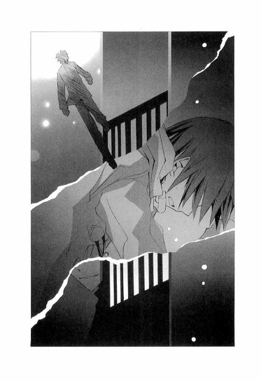
美羽が屋上から飛び降りたあと、頻繁にぼくを襲ったそれが、ファントムの声に呼び覚まされたかのように、全身から汗がどっと吹き出し、頭の中がぐるぐる回り、喉から掠れた笛のような息が漏れる。
ぼくは、がくりと膝を折り、冷たい路地に這いつくばった。
歌声は、くすくすという笑い声に変わった。その声が、男性の声に聞こえたり、女性の声に聞こえたり、少年の声に聞こえたり、少女の声に聞こえたりする。
まぶたの裏に、中学校の制服を着て、髪をポニーテールに結んだ美羽の姿が浮かび、ぼくに向かって儚く微笑み、逆さまに落ちてゆく。
その映像が、万華鏡のようにいくつもいくつも、繰り返し浮かぶ。
──気づかないんじゃない。
──知りたくないだけなんだ。
毒にまみれた声が、ぼくを責める。
あんたは、わからないフリをしているだけだ。あんたが彼女を傷つけ、死に追いやった。あんたは、人殺しの偽善者だ。
違う、違う、違う。
全身ががくがくと震え、息をする間隔がますます短くなってゆく。
美羽が落ちてゆく。
落ちてゆく──。
少しの間、意識を失っていたらしい。
携帯電話の着メロで目覚めたとき、ぼくは腐った残飯の匂いのする暗い路地裏に、手足を投げ出して、うつぶせに倒れていた。
お気に入りの軽やかな洋楽が、コートのポケットから流れている。
こわばる体を起こし、冷え切って感覚がなくなった手で携帯を出し、着信を見た。
流人くん......。
「あ、心葉さん。今そこ、パソコン開きますか？」
流人くんは急いでいる様子で、いきなりそんな風に言った。
「ゴメン、外なんだ。あと一時間くらいで戻るけど」
路地の壁に手をついて、よろよろ立ち上がりながら答える。
皮膚に、心に、ゆっくりと感覚が戻ってくる。あの歌声は、悪い夢だったのだろうか。幻想と現実の境目に立っているような気がして、まだ少し頭がぼぉっとしている。
「そうすか。じゃあ、データ送っときますから、帰ったらすぐ見てください」
「なにがあったの？」
「実は水戸夕歌のこと、オレのほうでもちょっと調べてみたんすよ。お節介とは思ったんですけど、イブまでにそっちの問題が解決してくれないと、困るから」
そう言って流人くんが投下したのは、ぼくの頭の中にたれこめるもやもやした霧を一度に吹き払うような爆弾だった。
「夕歌は、今年の夏頃から、〝椿〟って名前で、ネットの会員制サイトに出入りしてたんです。そこで客をとって、援交してたらしいんすよ」
自室のドアを開けるなり、着替えもせずにパソコンを立ち上げ、流人くんが送ってくれた添付ファイルを開いた。すると、怪しげなサイトの表紙と、会員規約、女の子のプロフィールがぞろぞろ出てきた。
不正アクセスがバレて、途中でシャットアウトされて、全部は読み込めなかったんすけどねと、流人くんは言っていた。
『そのリストのＮＯ16の椿ってのが、夕歌です』
ちりちりするような不安が胸に込み上げてくるのを感じながら、息を押し殺し、画面を下へスクロールさせてゆく。
ＮＯ16【名前】椿。
その文字が目に飛び込んできた瞬間、喉が強く締めつけられ、目眩がした。
水戸さんのクラスの子が語っていた言葉が、痺れるような痛みとともに浮かんでくる。
『黒いスーツを着た男の人と、外車に乗るのを見たことあるんだ。肩なんか抱かれて怪しい雰囲気で、水戸さんはその人に〝ツバキ〟って呼ばれてた』
そんな......、偶然だ！
いくら否定しても不安は消えず、胸の鼓動が痛いほど高まった。
まばたきすらせずプロフィールを読んでいくと、職業欄に〝Ｆ音大付属の現役女子高生です〟とあり、コメント欄に〝オペラ歌手を目指しています。そっと抱きしめてくれる優しいオジサマ、募集中です〟とあった。
マウスを握る手が、吹き出す汗で濡れてゆく。やっぱり、これは水戸さんなのか？
ここは、どう見ても非合法の出会い系だ。水戸さんはこの場所で、援助交際の相手を募集していたのか？不特定多数の男性と会い、収入を得ていたのか？
パソコンにかぶりつくようにして、さらに文字を追う。
趣味〝クラシック鑑賞、ショッピング〟
好きな食べ物〝苺〟
デートで行きたい場所〝遊園地〟
愛読書〝井上ミウ〟
井上ミウ!?
頭を、いきなり殴られたような気がした。
ぎりぎりまで張りつめていた心に、ふいに突きつけられたその名前は、普段の数倍の威力で、ぼくに衝撃を与えた。
全身が燃えさかる火に包まれたように熱くなり、思考が完全に停止する。
愛読書は、井上ミウ。
名前は、椿。
終わってはいなかった。ぼくはまだ路地裏に倒れたまま目覚めてはいなかった。一体これは、どういう悪夢なのだろう。
◇ ◇ ◇
嘘！ そんなことって！
お父さん！ お母さん！ 聡史！どうして!?どうしてそんなことしたの!?
ねぇ、嘘でしょう？ お正月には、そっちへ行くから、みんなでゆっくり過ごそうねって、電話で話したじゃない。お父さんとお母さんが頑張って働くから、夕歌はあまり無理をしないように、発表会の前なのだから、バイトもほどほどにして、風邪を引かないように喉を大切にって。夕歌の好きな干し柿を送っておいたよって。早く、会いたいね、また家族で暮らせるようになるといいねって。大丈夫だよ、きっと、いつかそうなるよって。お父さんも、お母さんも、笑っていたのに！聡史も、新しい学校で友達ができて楽しいって。お姉ちゃんも歌を頑張れって。
なのに、どうして！ 聡史はまだ、中学生だったんだよ！
みんなで暮らすために、私、たくさん仕事をしたのに。
初めてお客さんに会ったとき、ごはんを食べて、ちょっと話をするだけだよって言われて、なのにホテルであんなことされて、すごく恥ずかしくて、怖くて、痛くて、嫌だった。
自分が真っ黒に汚れてしまったみたいで、もう誰の目もまっすぐに見れないし、このまま秘密を隠し続けて、怯えながら生きなきゃならないんだって思ったら、頭がぐらぐらして、死んじゃいたかった。
トイレで何度も吐いて、タオルと石鹸で、皮膚がむけるほど体をごしごしこすって、けど、私がそれをしたっていう記憶は消えなかった。
それでも、お金をもらえたから。そのお金があれば、お父さんが借金取りの人たちに、殴られたり土下座したりせずにすんで、聡史の授業料も払えるって思ったから。
私には、それしかできなかったの。みんなが、前みたいに、普通に幸せに暮らせるなら、もう私は普通じゃなくなっちゃっても、いいって思ったの。
そのあとも、嫌なお客さんがたくさんいたし、本当に惨めで気持ち悪くて、毎日端っこから少しずつ切り刻まれているみたいで、嫌な匂いのする黒い泥が体の上にどんどん積み重なって、その中に埋もれてしまいそうで、いつかバレるんじゃないかって、びくびくしてばっかりだった。
テレビで、援交をした警察官が逮捕されたってニュースが流れたとき、ななせが、『相手の女も信じられない。まだ十六歳でしょう。あたしだったら、好きでもない人と、そんなこと絶対できないよ』って言うのを聞いて、息が止まりそうだった。
彼に抱きしめられたとき、苦しくて申し訳なくて、思わず突き飛ばしてしまって、哀しい顔をさせてしまった。
けれど、お父さんたちのためなんだって思うと、まだ大丈夫って思えたんだよ。
それに、私には天使がいたから。天使に、会えたから。
だから辛くても平気だったのに。耐えられたのに。
もう、私も賛美歌を歌えない！
神様なんて信じられない！
心だけは清らかであろうと願っても、無駄だった。神様は、穢れた私に微笑んではくれない。私を闇の世界に追いやった。
いずれ、彼も、ななせも、私は失うだろう。
天使も、こんな絶望を味わったの？
歌わなきゃ。私には、それしか残っていない。彼とななせが去ったとき、死を選ばずに立っていられるように。
泣いちゃいけない！ 歌うの！ 歌い続けるの！
神様を賛美する歌ではなく、戦いを挑む歌を。
三章 ◎ 天使は闇から見つめている
翌朝。教室で顔をあわせた琴吹さんは、ぶっきらぼうに挨拶した。
「おはよう」
まだ目が赤いし、態度もぎこちない。けれどぼくも、琴吹さんと同じくらいぎくしゃくしていたかもしれない。
「おはよう......琴吹さん」
水戸夕歌は、援助交際をしている。
そのことを、琴吹さんに伝えるべきなのか。
喉に苦いものが込み上げ、次の言葉を見つけられずにいると、琴吹さんがためらいがちにコピーの束を差し出した。
「......これ、夕歌のメールのコピー。昨日、見たいって言ってたでしょ」
「あ、ありがとう」
「最近のものだけだし、個人的なこととか......削除してあるけど......」
辛そうにうつむき、口ごもる。
「一応、渡しておくけど、見なくてもかまわないよ」
「いや、読むよ」
コピーを受け取るとき指が少しだけ触れて、琴吹さんがびくっとした。
そんな様子に、また胸が苦しくなる。
このまま琴吹さんの近くにいていいのだろうか。その答えもまだ出ていないのに。
新たに突きつけられた事実は、容赦なくぼくを追いつめ、喉をきつく締めつけた。
乱れる息を必死に整え尋ねる。
「ねぇ、水戸さんのバイトって、なんだったか訊いてる？」
「ファミレスだよ。夜の勤務だから、たまに嫌な客が来るって愚痴ってた」
「......そう。どこの店かわかるかな？」
「ううん。夕歌は恥ずかしいから来るなって言ってたし。こんなことなら、ちゃんと聞いておけばよかった」
琴吹さんが唇を噛む。
「じゃあ──」
喉に、痰がからんでしゃべりにくい。ぼくは冷静に振舞えているだろうか。顔はこわばっていないだろうか。
「水戸さんは、普段どんな本を読んでいた？」
「え？」
琴吹さんが怪訝そうに、顔を上げる。
「深い意味はないんだけど、『オペラ座の怪人』以外にも、好きな本があったのかなって......」
妙な質問だと思っているのだろう。目に、戸惑いが浮かんでいる。
「外国の児童文学とか......よく読んでたけど......。『大草原の小さな家』とか『若草物語』とか......、あ、『のっぽのサラ』も好きだった」
井上ミウは？
喉の先まで出かかって、飲み込んだ。
昨日の夜、パソコンで見た椿という名前と、愛読書井上ミウと書かれた文字が、呪いのように頭の奥に、べったり張りついている。
ミウの本は、十代二十代の若者を中心に読まれ、記録的なベストセラーになり、映画もドラマもヒットした。水戸さんが、ミウを読んでいても不思議ではない。きっとただの偶然なのだ。
それでも、ぼくからすべてを奪っていった禍々しい名前に、反応せずにはいられない。
ぼくは必死に平静を装い、言った。
「『オペラ座の怪人』とは、だいぶ雰囲気が違うね。そういえば、時間がとれなくて、まだ最後まで読み切れてないんだ。今、ラウルがクリスチーヌを救出するために、オペラ座の地下に乗り込んでいったあたり」
「......そう」
琴吹さんが気のない返事をする。それから、迷うように視線を下に向け、唇を噛んだあと、ぼそりと言った。
「あたし......もしかしたら、ラウルはいなかったんじゃないかって気がする。彼氏の話は、夕歌の想像だったんじゃないかって」
ぼくは驚いて尋ねた。
「どうしてそう思うの？」
膝の上で爪を落ち着かなげにいじったあと、琴吹さんは暗い声で答えた。
「不自然だったから......。名前を教えてくれないのもそうだけど、嬉しそうにのろけていたかと思うと、急に話すのが嫌そうっていうか、辛そうに感じたことが何度かあったんだ。最近は特にそうで......彼氏のこと、聞かれたくないみたいだった。それと、ここ二ヶ月くらい、夕歌と電話で話していると、しょっちゅうキャッチが入って......」
「それ、彼氏から？」
「うん」
琴吹さんが顔をしかめる。
「そうすると、夕歌は『彼からだ、ゴメンね。あとでメールする』って言って切っちゃうんだ。前は、あんなにかかってくることなかったのに。夕歌が夜のファミレスでバイトしてるの、彼は危ないって嫌がってたみたい。それで、心配して電話してくるんだって、夕歌は言ってたけど。まるでストーカーみたいだった......」
黒々としたものが、胸にゆっくりと溜まってゆく。
もしかしたら、彼は、水戸さんの秘密に気づいていたのかもしれない。
それで、何度も電話をして、水戸さんがなにをしているのか確認せずにいられなかったのかも......。
あるいは、琴吹さんの言うように、彼が水戸さんの空想とするなら、そのキャッチは、〝バイト先〟からの呼び出しだったんじゃ.........。
「......でも、最後に水戸さんと電話で話したとき、『彼と一緒に、クリスマスツリーを見てる』って言ったんだよね？」
琴吹さんの瞳に、暗い影が落ち、口調が険しくなる。
「そうだけど......あのときも、妙にはしゃぎすぎで、舞台の上で演技してるみたいだなって、思ったから」
静まり返った真夜中。携帯電話の向こうで、水戸さんは一人きりで、琴吹さんに語りかけていたのだろうか？
今、彼と一緒なの──。
その様子を想像すると、首筋を刷毛でなでられたように、ぞくっとした。
「彼は本当にいたのかもしれない。けど、うまくいかなくなって別れたんじゃないかなって......。それを言えなくて、まだつきあってることにしてたんじゃないかなって......。夕歌との今までのやりとりを思い出して、そんな風に思ったの......」
あたしの勝手な想像にすぎないんだけど......と、琴吹さんは苦しそうにつぶやいた。
そう、全部想定にすぎない。
水戸さんに、彼氏はいたのか？ いなかったのか？天使のことも、秘密のレッスンのことも。
彼女が、椿という名で援助交際をしていたことも、まだ確定したわけじゃない。
それが逃げだとわかっていても、ぼくは自分に言い聞かせ、琴吹さんにはまだ黙っていようと決めた。
──あんたは、知りたくないだけだ。
頭の中に響く声に、必死に反論する。
違うっ。琴吹さんを傷つけたくないだけだ。それに、〝本当のこと〟を無理矢理知ろうとする必要があるのか？もしかしたら、そっちのほうが悪い結果をもたらすかもしれないのに。誰も傷つかずにすむなら、そのほうがずっといい。
予鈴が鳴り、ぼくらはそれぞれの席に戻った。
芥川くんが眉根を寄せ、心配そうにぼくのほうを見ていた。
◇ ◇ ◇
『留守電聞いたよ、ななせ。
ゴメンね。その日は、バイトのあとレッスンがあるの。次の土曜じゃダメかな？』
『うわ～、ななせ。油断してたら二キロも太っちゃったよ～。声量をアップさせるためには、もっと太ったほうがいいって天使は言うけど、やっぱりショック～。今日から、お昼は林檎とおからのクッキーにする！』
『今日ね、みんなの前で、〝魔笛〟の夜の女王のアリアを歌ったの。
自分でも、びっくりするくらい声が伸びて、先生たちも驚いていた。一体どんな大歌手にレッスンを受けてるのって、クラスの子に訊かれたから、〝音楽の天使〟だよって答えたら、ぽかんとしてておかしかった。
本当のことなのにね』
『バイトでヤなことを言われた。あのお客、最低！
けど、学費を稼ぐためだから我慢しなきゃ。ああ～音楽って、どうしてこんなにお金がかかるんだろう。チケットのノルマとか、頭が痛いよ』
『聞いて、ななせ！ 今度の発表会で、主役に選ばれたの！嬉しい！ななせも絶対に見に来てね！』
『発表会の稽古で、なかなかデートの時間が作れないので、彼はちょっと不満そう。けど、優しい人だから、頑張れって言ってくれる。早くななせに、彼を紹介できるといいなぁ。ななせも早く、（※以降削除）』
『了解、クリスマスは、大親友のななせのために空けておきます。
イブは、もちろん彼と。
えへへ、ななせも、ここいらで思いきって行動に出てみたら？
大丈夫！ ななせは可愛いからきっと（※以降削除）』
『着メロ、クリスマスソングにしました。
〝サンタが町にやってくる〟
気が早い？』
『彼の名前は、ななせの恋が実るまで秘密だよ。
のろけなら、いっくらでも書いちゃうけど。
去年のイブは、おそろいの指輪を交換したんだ。
いつも身につけていようって約束したけれど、彼は学校でつけているとからかわれるからって、指からはずして隠してたんだ。
デートの前になると、急いで引っ張り出して、指にはめるの。それを、遠くからこっそり見ているのが、あたしはとっても好きっ。
それからね、哀しいことがあって、彼が手をぎゅっと握りしめて耐えているとき、その手にふれて、そっとほどいてあげるときね......とても優しい、崇高な気持ちになって、ああ、彼のこと、愛してるなぁって思うの。
あたしの指輪と彼の指輪がふれあうときに鳴る、かつん......って小さな音がどんな素晴らしい音楽よりも美しく、耳に響くの。
どうだ、ななせ、うらやましいだろ～。
ななせも、早く彼氏をつくりなよ。彼氏は、いいぞ～。
ななせに彼氏ができたら、Ｗデートしようね』
『ねぇ、ななせ、あたしは今、最高に幸せで、歌うことが嬉しくてたまらないの。天使がいてくれれば、あたしはもっともっと上手くなるし、歌を好きになってゆくよ』
『ななせは、天使のことが嫌いみたいだね。
あたしが天使の話をすると、不機嫌そうな声になる。
心配してくれているのはわかるけど、うさんくさいとか、騙されてるんじゃないかとか、そんな風に言われたら、あたしも気分が悪いよ。
天使はあたしにとって、大切な恩人なんだから』
『急にバイトが入ったの。
ゴメンね。あとで電話する。
あんまり思いつめないで。森さんたちも（※以降削除）
いってきます、ななせ』
四時間目の漢文は自習だったので、ぼくは課題のプリントを早々に片づけたあと、水戸さんのメールを読んだ。
最後の一行まで読み終えても、水戸さんが失踪した理由はわからなかったし、彼氏や天使のことも、多くは語られていなかった。
メールを読むかぎり、ごく普通の、明るい女の子に思えるのに......。
チャイムが鳴り、昼休みになった。
「売店で、パンを買ってくるよ。先に食べてて」
「珍しいな。いつも弁当なのに」
「お母さんが、炊飯器のスイッチを入れるのを忘れちゃったんだ」
そんなやりとりを芥川くんとして、廊下に出たとき──。
ポケットで携帯電話が震えた。
メールが一通届いていて、相手は非通知になっている。
中身を確認し、息をのんだ。
『ヤツは、Lucifer だ』
なに、これ？
迷惑メール？
携帯でネットに接続し、単語を調べて、愕然とした。
ルシファーとは、神に背いて地獄に墜とされた天使──地獄の王のことだった。
急に息が苦しくなる。
音楽の天使と、堕天使ルシファー──これは、偶然だろうか？それともなにか意図があって、ぼくに送られてきたのだろうか？
一体、誰が？
ヤツというのは誰を指しているんだ？ 誰がルシファーなんだ？
頭の中に、眼鏡をかけた冷たい目の少年が浮かぶ。もしかしたら、彼の嫌がらせなんじゃ。どうしてぼくのアドレスを知っているのかわからないけれど、とっさにそれくらいしか思いつかなかった。それに、昨日のことといい、彼に関しては不可解なことが多すぎる。
どうしよう。臣くんに尋ねてみようか。けど、またなにか言われたら。あんな風に敵意をむき出しにした目で睨まれたら。
迷いながら、ぼくは図書室へ行ってみた。
カウンターで仕事をしているのは、別の生徒だった。緊張が解け、ホッとし、教室へ戻ろうとしたとき、閲覧コーナーのテーブルで本を読んでいる臣くんが見えた。
心臓が、大きく跳ね上がる。
どうしよう、どうしよう。胃が裂ける思いで、息を潜め、近づいてゆく。
開いている本を、後ろからのぞき見た瞬間、背筋を戦慄が走った。
頭から水を浴びせられたみたいに、全身が一瞬で凍える。
それは、ハードカバーで出版された井上ミウの本だったのだ──。
どうして、よりによって、ミウの本を読んでいるんだ！
椿のプロフィールが、目の裏にくっきりと浮かび上がる。まさか臣くんは、水戸さんについて、なにか知っているのか？いや、考えすぎだ。
硬い唾を飲み下し、ぼくは声をかけた。
「それ、井上ミウだね？」
臣くんが振り返る。ぼくの顔を見て、嫌なやつが来たとでもいうように、フレームの奥の目をスッと細めた。
見た目は今時の普通の少年なのに、視線には妙に迫力があって、胃がぎゅっと縮まり、手のひらに汗が吹きだしてくる。落ち着け。体格だってぼくとそう変わらない。ぼくより年下の、普通の男の子じゃないか。
「そういうの、好きなの？」
臣くんは、冷え冷えとした声で答えた。
「いいや、大嫌いだ。この本も、井上ミウも」
その言葉に、胸を切りつけられ、地の底に叩きつけられた。
身じろぎもできずにいるぼくを、毒を含んだキツイ眼差しで見据えたまま、憎々しげに続ける。
「小学生の作文みたいな低能な文章で、吐き気がしそうな甘ったるい単語をずらずら書き連ねているだけの、駄作だよ。主人公の能天気さと偽善ぶりが、誰かさんにそっくりで、胸くそ悪くなる」
野良犬のようにギラギラと光る目。侮蔑に満ちた言葉。
それは、以前にぼくが、クラスの女の子たちの前で吐き出した言葉と、同じだった。
『そんな本の、どこがおもしろいの？ 文章下手だし、構成雑だし、頭の悪い中学生が書いたポエムを読まされているみたいで笑っちゃうよ』
『みんな、賞をとったのが十四歳の女の子だったから、物珍しくて騒いでいただけじゃないか』
『ぼくは井上ミウなんか大嫌いだ』
そう、ぼくも確かに、きみのように思っていた。
こんな本、最低で、なんの価値もないんだって。ぼくなんかが、みんなにちやほやされているのは、なにかの間違いなんだって。
この世で一番、井上ミウが嫌いだって。
「こんなに隅々まで透明で、善意にあふれた、おキレイな世界を、よくまぁ恥ずかしげもなく書けたもんだ。この本に書いてあることは、嘘ばっかりだ。こんな風に、人の心でもモノでも、表面しか見えてなくて、自分がおひさまに照らされて、路の真ん中を堂々と歩いてるって信じてるやつが、無邪気に人を傷つけて追いつめるんだ。あんたや、毬谷や、井上ミウみたいにね」
他人から面と向かって、〝井上ミウ〟を否定されたことはなかった。そのことがこんなに胸に突き刺さって、痛くてたまらないなんて。こんなに動揺しているなんて──。
足がふらつき、倒れそうになり、ぼくは「邪魔してゴメン」と言って、逃げるように図書室を出た。
情けなくても、惨めでも、これ以上彼に悪意に満ちた視線で見つめられ、真っ黒な言葉の刃で、切り刻まれることに耐えられなかった。
ミウの本が、全部嘘っぱちだなんて、ぼくが一番よく知っている。
現実は、あんなに優しくも、美しくもなく、願いも約束も、一瞬の儚い夢でしかないのだと。
平和な日常はあっけなく崩壊し、指をからませあって微笑みあった二人は、離ればなれになり、思い出は惑乱を引き起こす毒にしかならないのだと。
全身を駆け抜ける痛みと熱を、どうしたらいいのかわらない。
井上ミウなんて嫌いだ！ あの本も井上ミウも、本当は汚くて、嘘まみれだ。
そんなこと、わかってる！ わかってるのに！
人気のない廊下で、壁に手をつき、ぼくは浅い呼吸を繰り返した。冷たい汗が吹き出し、悪い風邪を引いたみたいに、ぞくぞくと寒気が這い上がってくる。
そのままへたり込みそうになったとき、誰かがぼくの肩にふれた。
「どうしたんですか？ 井上くん」
顔をあげると毬谷先生が、ぼくを後ろから支えるようにして立っていた。
「......先生」
「顔色がとても悪いですよ。保健室へ行きますか？」
眉をひそめ、心配そうに尋ねる。ぼくは弱々しく首を横に振った。
「平気です。すぐ、おさまります......」
先生がますます眉をひそめる。
「平気、という顔ではありませんね。保健室が嫌なら、準備室へ行きましょう。これは教師命令です。つきあいなさい」
「どうぞ」
「ありがとうございます」
シナモンの香りが、白い湯気とともに漂う。
おだやかな笑顔で差し出された熱いチャイを、ぼくは両手で受け取り、さましながら少しずつ飲んだ。
準備室の中は、窓から差し込む光でまばゆいほどに明るく、静かであたたかだった。
呼吸は正常に戻っていて、汗もひいていた。けれど、心の中にひりひりするような痛みは残ったままだった。
毬谷先生が、自分もチャイを飲みながら、やわらかな眼差しでぼくを見つめ、尋ねる。
「なにがあったんですか？」
「......」
「話したくないなら、いいですけど」
「......先生は、自分を嫌いになったことがありますか？」
「......ななせくんと、喧嘩でもしましたか」
紙コップを抱える指に力を入れ、うつむくと、毬谷先生は静かな声で言った。
「ありますよ。嫌いになったこと」
顔を上げると、悲しそうな表情で窓の外を見ていた。
「......私は両親が音楽家だったので、生まれたときから、プロになることを期待されていて、そのことに対して疑問を感じたこともありませんでした。けれど、だんだん周囲の声と、自分の音楽が、噛み合わなくなって......うまく折り合いがつけられず、すべてが嫌になってしまったんですよ。私という存在も、名前も、そっくり消してしまいたい。あの頃は、毎日、そんな風に思っていました」
ぼくは先生の横顔を見つめ、寂しげな声に耳を傾けていた。
先生は、腕にはめた重そうな時計にそっと手を置き、おだやかな──けれどどこか切ない笑みを浮かべ、つぶやいた。
「だから私は、教師になって、ここにいるんでしょうね。自分を嫌いにならずにすむように......」
天才と呼ばれ、特別扱いされることが、先生は苦痛だったのだろうか......。ぼくが、テレビや書評で、井上ミウが褒められるたびにぞっとしたように。
「そういえば、水戸くんは、見つかったのですか」
先生が顔を上げ、尋ねる。
「いいえ......。音楽の天使くらいしか、手がかりがなくて」
「そうですか......」
瞳を曇らせると、先生はまた憂いのにじむ声になり、つぶやいた。
「もしかしたら、これ以上、水戸くんを捜さないほうがいいのかもしれません」
ぼくは驚いて訊いた。
「どうしてですか」
「もし......水戸くんが、自分の意志で姿を隠したのだとしたら、捜してほしくないのではないでしょうか」
学生時代、毬谷先生はある日、ふいにみんなの前から姿を消したのだと、粧子さんが言っていた。
そのときのことを思い出しているのだろうか。声が弱々しく掠れる。
「......真実が必ずしも、救いをもたらすとはかぎりません。知らないほうが幸せなことも、あります。
特に、芸術家を目指す人たちはね......みんなとても臆病で、自信がなくて、揺れやすいんですよ。才能があると褒めそやされながら、壁にぶち当たって、苦しんで、苦しんで、どうしようもなくなって......それでも諦められなくて、心を病んでゆく人たちを、大勢見てきました。本当に、どうして、そこまで追いつめられなければならないのでしょうね......。才能なんて、とてもあやふやなもので、それを測る明確な方法なんて、これまでもこれからもないのに......。才能という幻想は、ときに凶器となり、人を傷つける。美しい音楽は聴き手には平等なのに、それを生み出す者にとっては、そうではないし、その才能が、永遠に続くわけでもありません。
天使と呼ばれ、人々の賞賛を一身に浴びて煌めいていた歌い手でさえ、今は忘れ去られ......もう、歌うことはないのです」
〝天使〟という言葉を口にしたとき、毬谷先生の目に激しい苦しみが浮かんだ。
「天使は何故、歌わなくなったんですか？」
先生は、哀しそうにつぶやいた。
「人が......亡くなったんですよ。ある高齢の音楽家が、天使の賛美歌を聴きながら手首を切ったんです」
衝撃的な内容に息をのむぼくに、先生がますます辛そうに語る。
「天使は人を不幸にし、破滅させる......。天使の歌声は多くの人間を死へ追いやり、穢れに満ちてしまった。だから、天使はもう、歌いません。歌ってはいけないのです」
手首を握りしめて言い放つ先生は、まるで自分を責めているように見えた。
先生が語った天使は、水戸さんと関わりがあるのだろうか......？
そして先生とも......。いや、もしかしたら毬谷先生自身が──。
『マリちゃんはわたしたちの希望の星だったのよ』
『今に日本を代表するオペラ歌手になるだろうって、言われてたのよ』
先生は、ひどく疲れている様子だったけれど、なにかを振り切るように息を吸い、テーブルに置いた紙コップを取り上げた。
そうして、ぼくのほうを見て、淡く、切なく、微笑んだ。
「ねぇ、井上くん。芸術家としての成功なんて儚いものです。私は、そんなものより、この一杯のチャイのほうを選びます」
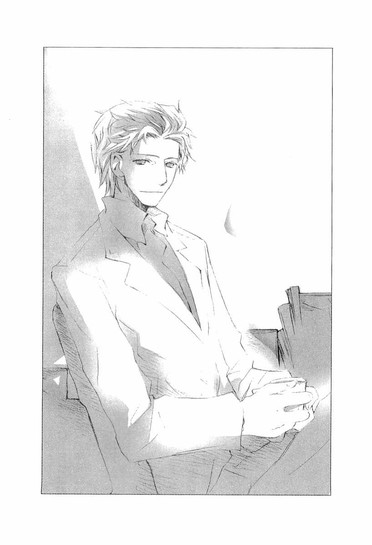
◇ ◇ ◇
井上ミウは、どんな子なのだろう......。
ページをめくりながら、ときどき想像する。
週刊誌では、お金持ちのお嬢様じゃないかなんて書かれていたけど、私は、ミウは普通の子だと思う。家族がいて、友達がいて、大好きな人がいて、そんな幸せで平凡な女の子じゃないかなって。
きっと、優しくて、純粋で、いつもにこにこ笑っているような、素敵な女の子......。
ミウの本は、挿絵の代わりに、綺麗な写真がたくさん載っているから好き。
青い空、草むら、雨、プール、体育館、水飲み場、鉄棒......あたりまえで、懐かしいものばかり。
それから、大好きって気持ちとか、信じる心とか、大切な約束とか。
胸の中が、澄んだ綺麗なものでいっぱいになる。
ななせも、ミウを読んでみたらいいのに。
きっと気に入ると思うのに、前に「井上ミウって、私たちと同じ歳なんだよ。どんな子だろうね」って言ったら、「顔を出せないなんて、きっとすごいブスなんだよ」なんて、むくれてた。
ななせは口は悪いけど、意地悪じゃない。いつもは、あんなこと言う子じゃないんだけどなぁ。
広間にまた、ななせの写真を飾った。ちょっとふくれっつらで、可愛い。
壁一面に、天使の写真と、ななせの写真と、私の写真。それから、青い薔薇。
それを見つめながら、穢れきった私は願う。
ななせが、平和で、幸福でありますように。
私が戻ることを許されない、あたたかな昼の光の中で、家族や友達に囲まれて、心から笑っていてくれますように。
せめて、ななせの恋だけは、叶いますように。
井上ミウの小説に出てくる、樹と羽鳥みたいな恋を、ななせがしてくれたらいい。
◇ ◇ ◇
毬谷先生は、ぼくらに隠しごとをしている。
そんなもやもやした想いを抱きながら教室へ戻ったのは、チャイムが鳴る直前だった。
「ゴメン。急に気分が悪くなって、毬谷先生のところで休んでたんだ」
芥川くんが、顔をしかめる。
「大丈夫なのか？」
「うん。だいぶ落ち着いた」
「そうか。ならいい。てっきり......」
芥川くんが口ごもる。それから、迷うような表情でなにか言いかけたときだ。
「ななせ！」
森さんの声に驚いて振り返ると、琴吹さんが真っ青な顔で机に手をつき、震えていた。
「具合悪いの!? ななせ？」
ぼくも慌てて、駆け寄る。
爪先にコツンと当たるものがあった。床に、見覚えのある携帯が落ちている。
あれ？ これ、琴吹さんのじゃ。
腰をかがめて拾い上げ、開きっぱなしの蓋を閉じようとしたとき、琴吹さんがすごい勢いで、ぼくの手から携帯をもぎとった。
「！」
眉をつり上げ、荒い息を吐き、目に涙をにじませ、震えながら睨みつけてくる琴吹さんに驚いていると、先生が教室へ入ってきた。
「すみません、琴吹さんの気分が悪そうなので、保健室へ連れていきます」
森さんが、琴吹さんを支えて出て行く。琴吹さんは胸の前で、携帯をぎゅっと握りしめ、なにかに怯えているようなこわばった表情で、うつむいていた。
琴吹さんは一体、どうしてしまったんだろう。ちらりと見えた携帯の画面に、メールがびっしり表示がされていたのが、気になった。
まさか、琴吹さんのところへも、おかしなメールが来たんじゃ！
休み時間になるなり、ぼくは森さんの席まで行き、琴吹さんの様子を尋ねた。
森さんは、困っている顔で答えた。
「その......あたしもよくわかんないんだけど、ちょっと混乱してるみたい。『ファントムが......』とか言って」
冷たい闇が頭上から落ちてきたように錯覚し、手のひらが汗ばんだ。
「ファントム......って言ったの？ 琴吹さん？」
「聞き間違いかもしれないけど......。でも、ななせが戻ってくるまで、教室で待ったほうがいいかも」
呼吸が苦しくなり、胸が不安に締めつけられる。
あのメールは、やっぱり、ぼくが受信したメールと関わりがあるんじゃないか？琴吹さんが、携帯を落としてしまうほど、ショックな内容だったんじゃ。
琴吹さんが戻ってきたのは、清掃時間が終わったあとだった。
森さんたちが取り巻き、「心配したよ」と口々に話しかけるのを、ぼくはじれったい思いで見ていた。琴吹さんは、無理をしているようなぎこちない笑顔で、ぼそぼそ言葉を返している。やがて、琴吹さんが鞄を持って教室を出てゆくと、ぼくは追いかけて、廊下で呼び止めた。
「琴吹さん」
細い背中が、びくっと震える。けれど立ち止まらず、逃げるような早足で、歩き出す。
「待って、琴吹さん！」
腕をつかむと、泣きそうな顔で振り返った。
「はなして......っ」
「なにがあったの？ ファントムがどうしたの？」
「！」
見開かれた目に、はっきりと怯えが走る。青ざめきった顔に、複雑な表情が次々浮かぶ。恐怖、迷い、痛み、渇望、哀しみ。
どうしたんだ？ なんで、こんなに怯えているんだ？それに、どうして、こんなに哀しそうな......。
混乱するぼくに、琴吹さんは眉根をぎゅっと寄せ、震える声でささやいた。
「なんでもないよ......もぉ、放っておいて。夕歌はあたし一人で捜すから、井上はもぉ、ついてこなくていい......」
「けど」
琴吹さんの目に、透明な涙がたまってゆくのを見て、ますますうろたえる。
琴吹さんは、声を震わせ、泣くのを必死に我慢しているみたいな顔で言った。
「だ、だって......昨日、夕歌の家を見に行ったとき、井上、すごく......辛そうだったもの......。あんな井上を見るのは、嫌っ。耐えられないよっ。あたし、井上の彼女でもないのに、迷惑ばっかりかけて......ごめんなさい。い、今までありがとう。でも、お願い、もぉ放っておいて......」
思いきり殴られたように、頭の中が真っ白になり、手から力が抜けた。
迷うぼくを見て、琴吹さんは隣で傷ついていたのだ──。
「琴吹先輩」
低い声がして、臣くんが足音も立てずに現れた。
「司書の先生が呼んでるんで、図書室へ来てもらえますか？」
「......わかった」
掠れた声でつぶやくと、琴吹さんはうつむいたまま、臣くんと行ってしまった。
途中で、臣くんが振り返り、軽蔑しきった冷たい視線でぼくを射た。
──偽善者。
足がすくみ、喉がこわばり、一言も発することができなかった。
琴吹さんの力になりたいと願う気持ちに、嘘はなかった。気弱に泣きじゃくる姿に胸が痛んで、どうにかして助けてあげたいと思っていたのに。
けれど、中途半端な気持ちでそばにいたせいで、琴吹さんにあんな辛そうな顔をさせてしまった。
息が苦しくて、喉が裂けそうで、自分の存在を消してしまいたかった。本当に、本当に、琴吹さんを傷つけるつもりなんて全然なかったのに。これじゃ図書室のときと同じだ。臣くんに言われたように、ぼくは最低の偽善者だ。
世界中の人間から白い目で見られ、非難されているような惨めな気持ちで、廊下をふらふら歩いてゆく。抉られ、空っぽになった心が、ひりひりと痛み、切なさと苦しさに、涙がにじんでくる。
ダメだ。泣いちゃいけない。そんな資格、ぼくにはない。あんなこと、琴吹さんに言わせてしまうなんて。琴吹さんは泣きそうだった。
込み上げてくるものを、まばたきして必死にしりぞける。
これからどうすればいいんだろう。
琴吹さんは、一人で水戸さんを捜すから、もう関わらないでほしいと言っていた。
けど、あんな状態の琴吹さんを、放っておけない。傷つけてもそばにいたほうがいいのか。それとも、離れることが琴吹さんのためなのか、わからなかった。
いつの間にか、ぼくの足は、慣れ親しんだ三階の西の端にある文芸部へ向かっていた。
そこに、遠子先輩は、いないのに。
幻でもいい。
会いたかった。
遠子先輩に、会いたかった。
冷え切ったノブを回し、部室のドアを開けたとき──。
やわらかな声が聞こえた。
「こんにちは、心葉くん」
窓際に置いたパイプ椅子に体育座りし、文庫本をめくっていたのは、細く長い三つ編みを腰までたらした、すみれの花のような〝文学少女〟だった。
四章 ◎ 〝文学少女〟のお値打ち
「ディケンズの『クリスマス・キャロル』は、作りたてのミートローフのようね。口当たりがよくて、小さな子供でもどんどん食べられちゃうし、大きくなってからも、あたたかくて、懐かしくて、美味しいの。
強欲で他人を信じないお金持ちのスクルージが、イブの夜、ずっと前に亡くなった友人に再会し、生き方を変えるよう忠告されるの。友人はスクルージに、機会と望みを贈るわ。過去、現在、未来の、三人のクリスマスの精霊が、スクルージの前に順番に現れて、彼が忘れていたものや、見過ごしにしてきたものを、見せてくれるのよ。
クリスマスのあたたかな風景や、貧しくても寄り添いあって生きる家族や、希望、信頼なんかをね。
それはまるで、セロリや人参やタマネギ、丸ごとの卵やオリーブの実を混ぜて、オーブンでふんわり焼き上げたミートローフを、ナイフで切り分けて、銀色のフォークで小さく切って、少しずつ味わうような感じなの。
普段は苦手なセロリや人参が、優しくやわらかく肉汁にからみ、ささやかな幸福感に胸がいっぱいになるのよ。オリーブの、ちょっとしょっぱい、癖のある風味も、とても美味しく感じられるの」
ほのぼのした表情で蘊蓄を語りながら、ページの端を小さく破き、口へ運ぶ。
かさこそとひそやかな音を立て、白い喉をそっと震わせて飲む込み、幸せそうににっこりと笑う。
窓からこぼれる透明な日差しが、猫の尻尾みたいな細く長い三つ編みや、小さな白い顔、細い手足を、やわらかく彩っている。
ぼくは夢でも見ている気持ちで、テーブルの横に突っ立っていた。
本物の遠子先輩......だよな。
本をぱりぱり食べながら、蘊蓄を垂れ流すような珍妙な女子高生が、他にいるはずがない。
「......なにやってんですか」
ようやく声が出て尋ねると、遠子先輩はゆっくりとぼくのほうへ顔を向け、可愛らしく笑った。
「どうしてるかなぁと思って。ちょっとだけ、息抜きに来ちゃった」
「Ｅ判定なのに余裕ですね」
「心葉くんのおやつを食べて頑張ってるから、Ｃ判定くらいにはなっているはずよ」
ぼくの突っ込みに動揺することもなく、のんびり答える。
逆にぼくは気がゆるんで、鼻の奥がツンとしてしまった。
遠子先輩が椅子の背に両腕を乗せ、おだやかな優しい目で、ぼくを見上げる。
「ねぇ、心葉くん。今まで、ポストに入れてくれたおやつ、本当に美味しかったわ。胡麻を入れて焼いたさっくりしたクッキー、ほんのりお酒の味がする干しぶどうのケーキ......ペパーミントのゼリー、甘いチャイ......あぁ、わたしがいなくても、心葉くんは元気で過ごしているんだなぁって......きっと、いいことがあったんだなぁって、〝想像〟しながら、いただいてたのよ」
澄んだ声に胸が震え、ぼくは慌てて目をそらした。
「受験生に、おかしなもん食わせるわけにいかないでしょう。遠子先輩は食い意地張ってるから、全部食べちゃうんだから」
「そうねぇ。だって、心葉くんが書いたものだもの。残したりしないわ」
嘘ばっかり。ぼくが書いたんじゃなくたって、ポストに放り込まれたヘンな手紙だって、最後まで食べきるくせに。
「けどね、この頃の心葉くんのおやつは、ちょっと苦かった......」
遠子先輩の眼差しが、曇る。
それで、心配して会いに来てくれたのだろうか。ぼくの三題噺は、そんなに苦かったのだろうか。
なんだか、どんどん気持ちが弱くなっていって、喉が熱くなって、遠子先輩になにもかもぶちまけてしまいそうだった。
嫌だ。そんな子供っぽいことしたくない。遠子先輩だって、受験で大変なのに。
歯を食いしばって耐えていると、遠子先輩がふいに、にっこりした。
「おやつの話をしていたら、甘いものが食べたくなっちゃった。ねぇ、心葉くん。今日の差し入れは？」
パイプ椅子をがたがた揺すって、催促する。
「あぁ、わかりましたよ。今なんか書きます」
そう言ってから、以前に書いた三題噺が、鞄に入れっぱなしになっていることに気づいた。琴吹さんに『大嫌い』と言われた日に、さんざん悩んでいじくり回して、お蔵入りにした〝ふんわり癒しのバニラスフレ風味〟が──。
ぼくは鞄からそれを出し、机の上に置いた。
それから、そのへんにあった水色の栞に、ボールペンで、携帯電話の番号とメールのアドレスを書いた。
遠子先輩は「早く早く～」と言いながら、期待に満ちた顔で、こっちを見ている。
ぼくは、右手に原稿用紙、左手に栞を持って、遠子先輩のほうへ向き直り、尋ねた。
「大きいのと小さいの、どっちがいいですか？」
遠子先輩が椅子に座ったまま、満面の笑顔で両手を差し出す。
「大きいほう！」
〝蝶々〟〝恐山〟〝サーファー〟の、ふんわり癒しのバニラスフレ風味を食べた遠子先輩は、胸を押さえて苦悶の表情を浮かべた。
「うぅぅぅぅぅぅぅぅ、マッチョなサーファーが、恐山から海パン一枚で滑り降りてきた～～～～。魂が蝶々になって体から抜け出して、恐山に帰っちゃった～～～～。サーファーが骸骨になっちゃった～。これ、ホラー？ホラーなの？バニラじゃなくて、タクアン入りのかまぼこの味がする～～～～。ふんわりしてな～い。とげとげしてる～～～～あぅぅぅ、練りワサビまで入ってる～～～～」
めそめそする遠子先輩に背を向け、ぼくは栞を手帳に挟んだ。
結局、渡せなかったな。
「うぅ......あぅ......ねぇ、心葉くん、流人と電話で、なにを話していたの」
振り返ると、遠子先輩は椅子の背にしがみついて、必死に吐き気を堪えていた。
そうしながら、ぽつぽつとつぶやく。
「もしかしたら、困っていることがあるんじゃないの？先輩に相談したら、いい考えが浮かぶかもしれないわよ」
すぐには返事ができなかった。こわばった声で尋ねる。
「......流人くんが、なにか言ったんですか」
「ううん。流人が、隣の部屋で『心葉さん』って言ってるのが、聞こえてきて」
「盗み聞きしたんですか」
突っ込みを入れたとたんに、がばっと体を起こし、凄い勢いで反論をはじめた。
「べ、別に！ わたしは、コップで盗み聞きなんかしてないわ！いくら流人が意地悪して教えてくれなくても、部屋の壁が画用紙みたいにぺらぺらでも、流人が心葉くんに電話していて、なんだか込み入った話をしているみたいで気になっても、盗み聞きなんて、そんなお行儀の悪いこと絶対にしないわ！」
「耳に、コップの跡が残ってます」
「えっ！」
指さすと、遠子先輩が右側の耳をぱっと押さえる。
「嘘です」
「うっ」
「盗み聞き、したんですね？」
問いつめると、今度は開き直って駄々をこねはじめた。
「だってだってだって！ 心葉くんが流人に、なにか相談してるみたいで、気になって勉強どころじゃなかったんですもん。このままじゃ、受験に失敗して浪人しちゃう。そんなことになったら、心葉くんのせいよ！そうよ、流人なんかに頼る心葉くんが悪いのよ。だから尊敬する先輩が、安心して受験に集中できるように、なにがあったのか洗いざらい白状しなさい」
ああ......やっぱり、遠子先輩は遠子先輩だ。
自分勝手な主張に、ぼくはすっかり脱力してしまった。
こんな人に見栄を張っても仕方がない。ぼくより、遠子先輩のほうが千倍子供っぽい。
「わかりましたから、椅子をがたがたさせるのやめてください。前みたいに転んで顔を打ちますよ」
溜息をついてテーブルにつくと、ぼくは、これまであったことを話しはじめたのだった。
遠子先輩が、椅子をテーブルの前まで引っ張ってくる。ぼくの語る内容に、眉をひそめ哀しそうな顔をしたり、息をつめて真剣な顔をしたりし、途中から人差し指を唇に軽くあて、考えに沈んでしまった。
話が終わると、遠子先輩がつぶやいた。
「心葉くん。水戸さんがななせちゃんに出した彼氏のヒントを、詳しく教えてちょうだい」
「えーと......確か、三つあって、九人家族で、考え事をするときテーブルの周りを歩き回る癖があって、コーヒーが好き、だったかな」
「そう......」
人差し指を唇にあてたまま、また物思いにふける。
「珍しいですよね、九人家族なんて」
「多分、水戸さんの彼は、九人家族じゃないと思うわ」
「え」
「このヒントは、もっと別のものを指しているんじゃないかしら」
「別のものって......どんな？」
すると遠子先輩は眉根を寄せ、ちょっと困っている表情になった。
「ごめんなさい。わたしも、まだよくわからないの」
申し訳なさそうにつぶきやき、
「けど、〝椿〟というのは、デュマの『椿姫』からとったんじゃないかしら」
と言った。
「『椿姫』？ あ、そういえば、オペラでありましたね」
遠子先輩が『椿姫』について語り出す。
「ええ。『椿姫』の原題は『La Dame aux camelias』──フランス語で〝椿の淑女〟という意味よ。作者のデュマ＝フィスの父親は、『三銃士』や『モンテ・クリスト伯』で有名な、人気作家のアレクサンドル＝デュマ。一般的に、父親のほうが大デュマ、息子のほうが小デュマと呼ばれているわ。
若かりし頃、パリ社交界の花形だった高級娼婦のマリ＝デュプレシに恋をしたデュマ＝フィスは、彼女をモデルにして『椿姫』を書いたのよ。
主人公は、純情な青年アルマン──『オペラ座の怪人』のラウルとちょっと似ているわね。パリにやってきたアルマンは、椿姫と呼ばれる高級娼婦のマルグリットと恋に落ちるの。マルグリットも、一途な情熱をぶつけてくるアルマンを愛するのだけど、肺の病を患っていて、アルマンのお父さんにも、どうか息子と別れてくれと説得されて、泣きながら身を引くのよ。まるで高級なビターチョコの中に、純度の高いウイスキーをつめたボンボンみたいに、甘くて華やかで、ほろ苦くて、切ない味がするの」
オペラ歌手を目指していた水戸さんは、当然『椿姫』を知っていただろう。
ヒロインのマルグリットが、娼婦であることも。
それであえて〝椿〟という名前をつけたとしたら。水戸さんは、そのときなにを思っていたのだろう。
遠子先輩が続きを語る。
「ヴェルディのオペラでは、アルマンはアルフレード、マルグリットはヴィオレッタという名前に変わっているわ。ラストシーンも少し違っていて、タイトルは『La traviata』というのよ。意味は、イタリア語で『道を踏み外した女』──」
胸を貫く痛みに、ぼくは顔をゆがめた。
道を踏み外した女。
水戸さんも、椿姫のように道を踏み外してしまったのだろうか。
その結果、還れない場所へ迷い込んでしまったのだろうか。
それとも、椿姫がアルマンのために身を引いたように、彼女もまた誰かのために身を隠したのだろうか。
水戸さんのラウルは、アルマンは、どこにいるのだろう？それとも琴吹さんが言うように、もともと存在していなかったのか？
遠子先輩が、知的な眼差しで言う。
「水戸さんの話は、確かに『オペラ座の怪人』に似ているわね。『オペラ座～』の中にも、『ファウスト』や『ドン＝ジュアン』なんかの実際のオペラが出てくるわ。
けど、もしこの失踪事件を、『オペラ座の怪人』とするなら、心葉くんたちは、大きなヒントを見落としているわ」
「どういうことですか？」
ぼくはテーブルに手をつき、身を乗り出した。
「何故、水戸さんは、発表会の主役を降ろされないのか？十日以上も無断で稽古を休んでいるのにおかしいわ。秘密の特訓をしているとか、お偉いさんの後ろ盾があるとか言われているみたいだけど、どこからか圧力がかかっているのは間違いないと思う。
その人は、水戸さんが本番に現れるという確信があるのではないかしら？『オペラ座の怪人』でも、ファントムは劇場の支配人を脅して、愛するクリスチーヌを、歌姫カルロッタの代役として舞台に立たせたわ。そのためにファントムは、カルロッタの声をひきがえるのように変え、舞台を妨害することさえするのよ」
「水戸さんの後援者が、ファントム──水戸さんの天使だっていうんですか？」
遠子先輩は、真面目な顔でうなずいた。
「その可能性はあるわ。配役に口出しできる立場の人は、限られている。学園の先生か、経営者か──なににしても、その人が、水戸さんの行方を知っているかもしれない」
息をのむぼくに、遠子先輩が尋ねる。
「どうする？ 心葉くん？ 調べてみる？」
いつもなら、「早速調査よ、心葉くん！」と言って、ぼくの都合なんておかまいなしに飛び出してゆくのに。
唇を結び、澄んだ眼差しで、まるで不出来な弟を見守る姉のように、辛抱強くぼくの答えを待っている。
その目が、心葉くんが決めなさいと言っている。
胸がいっぱいになり、心細さや戸惑いや、前に進みたいという願いが、交互に喉に込み上げる。
一体、これ以上、ぼくになにができるのか。水戸さんが援交をしているかもしれないことさえ、琴吹さんに話せずにいるのに。
けど──。
こんな風に見つめられて、背中を向けてしまいたくなかった。それじゃ、今までと同じだから。
呼吸を整え、ぼくは答えた。
「はい」
とたんに、遠子先輩の顔が笑み崩れた。
光が溶けるように、甘く、優しく、口元がほころんでゆく。
人差し指で、ぼくの額をちょんと突くと、遠子先輩は明るい声で言ったのだった。
「よぉしっ、じゃあ、早速調査よ、心葉くん」
「遠子先輩は、帰ってください」
「ええっ、なんでぇ！」
学内の音楽ホールに向かうぼくのあとを、遠子先輩は首をいやいやと振って、追ってくる。
「麻貴のところへ行くんでしょう？ それなら、わたしが一緒のほうが絶対いいわ」
「受験生にヌードモデルやらせて、風邪引かせるわけにいきません。帰って勉強してください」
「じゃあ、心葉くんが脱ぐの？ ヌードモデルするの？」
「いや、それは......」
「大事なおやつ係──いいえ、後輩を、麻貴の毒牙にかけるわけにいかないわ」
「って、遠子先輩、前に自分が会いたくないからって、ぼくを麻貴先輩んところへお使いにやりませんでした？」
「あのときは、たまたま外せない用があったのよ」
言い合っているうちに、中庭のホールに辿り着いてしまった。
ホールの最上階に、個人のアトリエを構える姫倉麻貴先輩──通称〝姫〟は、ぼくらの話を聞きながら、おかしそうに笑っていた。
「で？ どっちが脱いでくれるのかしら？ 遠子？それとも心葉くん？」
制服の上に作業用のエプロンをつけ、手に絵筆を持って、尋ねる。
ウェーブのかかった長い茶色の髪が、たてがみのように顔の周りにかかり、背中へと流れ落ちてゆく。背も高く肉感的で、姫と呼ばれるのに相応しい華やかな容貌をした麻貴先輩は、学園の理事長の孫娘で、なんでも知っていて、なんでも手に入れることができる人だ。
ただし、与える情報に対して、必ず〝代償〟を要求する。
そんな麻貴先輩の一番の野望は、遠子先輩のヌードを描くことなのだ。もう三年間も口説き続けているという。そのため遠子先輩には、すっかり警戒されてしまっている。
もっとも、麻貴先輩は『遠子に恨まれるなんて、ぞくぞくしちゃう』とか言っている人だから、睨まれようが避けられようがへいちゃらなのだろうけど。
「今回は、遠子先輩は関係ありません。代償は、ぼくが払います」
「いいえ。後輩の一大事を、先輩であり文学少女であるわたしが、黙って見てるわけにいかないわ」
「文学少女、関係ないでしょう」
「後輩は、素直に先輩の顔を立てるものよ」
「あら、じゃあ、遠子が脱いでくれるのね」
「えっ！」
麻貴先輩に、ねっとりした笑みを向けられたとたん、遠子先輩が言いよどむ。
「そ......それは、これから交渉して......その、最近わたし、おやつを食べ過ぎて太っちゃったし......そういうことをするなら、準備期間をもらわなきゃ。ほら、麻貴も受験勉強で忙しいでしょう！絵を描いている暇なんて......」
「あら？ あたしは、とっくに推薦で決まってるわ」
「で、でもっ、わたしはＥ判定だし、べ、勉強しないと......だからあの、その......、つ、ツケにしといてっ！」
こぶしを握りしめ、力一杯叫ぶ遠子先輩を見て、麻貴先輩は我慢できないというように吹き出した。
「あー、もぉ、可愛い！ たまんない！ いいわ。今、ちょうど別のモデルで描いているとこだし、ツケといてあげる。卒業前に十倍にして返してもらうわ」
「うっ」
絶句する遠子先輩を、麻貴先輩が怪しく光る目で見つめる。
「今回は、あたしからの早めのクリスマスプレゼントよ。そうそう、利息にあたしへのプレゼントも忘れないでね」
ぼくは深く同情しながらも、心の中でこっそりつぶやいたのだった。
（だから来なければよかったのに。麻貴先輩に敵うわけないんだから自業自得です......）
〝姫〟の仕事は早かった。
土曜日の夜。ぼくと遠子先輩は、ホテルの一室にいた。
遠子先輩は三つ編みをほどき、ピンクのゴムで耳の下で無造作に結び、制服のスカートのウエスト部分を折り返して短くし、うきうきと。
ぼくはニットにジーンズの私服で、頭に手をあて沈痛な面持ちで。
「わぁ。このテーブルセット素敵。アンティークねっ。ベッドも、すごくスプリングがきいているわ。ほらほら」
遠子先輩が豪華なダブルベッドの上で、正座したまま、ぽよんぽよんと飛び跳ねてみせる。ぼくの人生で、女の子と二人きりでホテルに入ったのははじめてだ。しかも、遠子先輩とだなんて。
飛び跳ねていた遠子先輩がバランスを崩して、ころりとひっくり返る。
「あー、もう、遠子先輩は帰ってください」
「だめよ。この作戦は、わたしがいなきゃ成り立たないわ」
スカートの裾を直して起き上がり、断言する。
作戦って......遠子先輩が、勝手に決めたんじゃないか......。
「本当にやるんですか？」
「ええ」
「受験生は机にかじりついて、勉強をしてください」
「昨日の夜、たくさん数学の問題を解いたから平気よ」
ぼくは聞きとがめた。
「？ なんで、今さら数学なんかやってんですか？」
「センター試験で、必要だからに決まってるじゃない」
「センター試験って、まさか国立受ける気ですか!?それ記念受験ですか？」
あんまり驚いて、場所も状況も忘れて問いつめてしまう。
てっきり私立の文系狙いだと思っていたのに、国立！あの壊滅的な数学の点数で、どうして国立を受けようなんて思えるんだ！身の程知らずもいいところだ！
遠子先輩は、ぺたんこの胸を偉そうにそらした。
「えへん。わたしは、国立一本よ」
「やめてください。受験料をドブに投げ捨てるようなもんです。しかも一本！無謀すぎです！今から、私立に目標を切り替えるべきです」
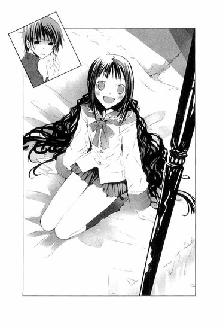
ああ、それでＥ判定なのか。どうりで、おかしいと思ったんだ。遠子先輩なら、文系科目でかなり点数が稼げるはずなのに。
呆れ果てるぼくを、ベッドにしゃがんだ遠子先輩が、頬をふくらませ身を乗り出して睨みつける。
「ひどぉぉぉぉぉい、受験生に対して気遣いが足りなーい」
「遠子先輩こそ、受験生の自覚を持ってください。やっぱり帰りましょう」
「嫌よ。せっかく変装までしたのに」
「三つ編み、ほどいただけじゃないですか」
「スカートも、七センチも短くしたのよ。女の子にとっては大変なことよ」
「だいたいこんな作戦無茶です。援交するふりして水戸さんのことを聞き出そうなんて」
「大丈夫。わたしは、ロレンスの『チャタレイ夫人の恋人』も、夢野久作の『瓶詰地獄』も、ライスの『スリーピング・ビューティー』三部作『～官能の旅立ち』『～歓喜する魂』『至上の愛へ～』も読破した文学少女よ。経験はなくても知識はばっちりよ」
「それ、全然参考になりませんから！ てゆーか、参考にしないでください」
言い合っていたとき、ドアが開く音がした。
「心葉くん、隠れてっ」
遠子先輩がぼくを押しやり、ぼくは慌ててカーテンの陰に身を潜めた。
その直後、スーツを着た四十半ばくらいの男性が、口髭をいじりながら部屋に入ってきた。
写真で見た白藤音大の副理事長の堤健吾だ。間違いない。
堤は、椿が出入りしていた会員制援交サイトの常連で、椿の〝客〟だったのだ。また、水戸さんを、発表会の主役に強引に押し込んだ人物でもある。
ただの脂ぎった中年男にしか見えないけれど、彼が水戸さんの天使なのか？
遠子先輩はベッドで背中を向けて、うつむいている。
「やぁ、待たせたね」
堤は自分もベッドの端に腰かけ、いやらしく遠子先輩の顔をのぞきこんだ。
「緊張してるの？ もしかして、はじめてかい？」
遠子先輩が、小さな声で答える。
「......お金、たくさんくれるって、聞いたから」
「そうだね。私の気に入れば、お金もあげるし、なんでも買ってあげるよ」
ぴくりと......遠子先輩の肩が動いた。
「本当に？ なんでも？」
「ああ。なにが欲しいんだい？」
次の瞬間、遠子先輩はいきなり堤に体当たりをかまし、瞳を星のようにきらきらさせて、語り出していた。
「わたし、森鴎外全集を初版で一気食いしてみたい！それから夏目漱石と谷崎潤一郎と、室生犀星と、あぁ、樋口一葉の『たけくらべ』の初版本も捨てがたいし！それに、絶版になったチェーホフの作品集と、あぁっ、ハーレクイン社発行のハーレクイン・ヒストリカルシリーズのバックナンバーを全部そろえて、部屋中にうず高く積み上げて食べつくすのも夢だったの！宝くじが当たったら、ぜひ実現しようと思っていたのよ！
きっと、ラム酒がきいたカスタードクリームをたっぷりつめたパイシューや、濃厚な味わいのザッハトルテや、薫り高いシャンパンのゼリーの海に、溺れている気分よ！」
途中から勢い余って堤を押し倒し、それでもまだしゃべり続ける遠子先輩を、堤が目を白黒させて見上げている。
ぼくは、頭痛を覚えながら飛び出していって、携帯を堤に向け、撮影した。
「なんだ、きみは！」
慌てて遠子先輩の下から這い出てくる堤に、撮影したばかりの画面を見せ、冷静に告げる。
「堤健吾さん。この画像を、あなたの義理のお父さんである白藤音大の理事長や、他の職員たちに送りつけられたくなかったら、あなたがいつも指名している〝椿〟のことを、教えていただけますか？」
「つ、椿だって......！」
堤はひどく衝撃を受けている様子で、青ざめ、絶句してしまった。
そのあと、そわそわと体を揺らしながら堤が語ったことは、以下の通りだった。
水戸夕歌が失踪した直後、椿の名前で、赤い封筒に入った発表会の招待状が送られてきたこと。
そこには、水戸夕歌が、さる場所でレッスンを受けていることがワープロの文字で打たれており、発表会には必ず舞台に上がるので、夕歌を主役から降ろしてはならないとあった。もし、そんなことをしたら、貴殿は今の地位を失うだろうと。
「夕歌は大人しくて素人ぽくて、私の気に入りだったのに。なのに急に、発表会で主役にしてくれなければ、私とのことをばらすと言って、脅してきたんだ。
あのとき夕歌は、私の頬を包丁で叩いて、『ここで手首を切って自殺してみせてもいいのよ。そうしたら、すごいスキャンダルになるよね』と言って、目つきも口調も、まともじゃなかった。かと思うと急に泣き出したり、獣みたいにむしゃぶりついてきたり、虚ろな目でじっと宙を睨んだり、とにかく滅茶苦茶だった。
いなくなってくれて、ホッとしてたのに、今度は手紙やメールを送ってくるようになった。とんでもないアバズレだ！あの女は、天使の仮面を被った悪魔だ！私は被害者だ！」
夕歌への憎しみを吐き散らす堤を、ぼくらはやりきれない思いで見ていた。
椿は、水戸夕歌だった。
しかも水戸さんは、発表会で主役を演じるために、堤を脅迫していたのだ。そして今も、陰から堤を操っている。
空気が凍りつくような、冷たく暗い夜道を歩きながら、ぼくも遠子先輩も黙りがちだった。遠子先輩のスカート丈は元の長さに戻っていたけれど、ぼくらが聞いたことを頭の中から消すことはできない。
苦い思いが、胸に広がってゆく。堤から聞いた水戸夕歌は、琴吹さんが話してくれた、大事な親友の水戸さんと、あまりにもかけ離れている。
ファントムの正体がクリスチーヌ自身だったなんて、そんなこと、とても琴吹さんには言えない。
一体、水戸さんは、なにをしようとしているのだろう。
クリスチーヌの心が、ぼくにはまったく見えない。
華やかに組まれた舞台のセットの前で、クリスチーヌはラウルに言うのだ。
『見てよ、ラウル、この塀、この森、この樹木のトンネル、この彩色された画布の絵を。これらはみんな、この上もなく崇高な恋を見たのよ。だってここでは、普通の人間よりはるかに詩情豊かな人たちが、これらの絵を作り出したんだもの』
『あたしたちの愛はここにぴったりでしょう、ラウル。だってあたしたちの愛も作りもので、ああ！ただの幻想にすぎないんですものね！』
無邪気に聞こえるその言葉が、ラウルの──ぼくの胸を切りつける。
かつてぼくが信じていた愛も、希望も、夢も、すべては幻想にすぎなかったのかもしれない。
琴吹さんはこの瞬間も、親友の身を案じ続けているのだろうか。水戸さんが無事に帰ってきて、以前と変わらない平和な日常に戻れるよう願っているのだろうか。
空気が、ぴりぴりと肌に突き刺さる。遠子先輩が、ときどき気遣うようにぼくのほうを見る。
別れ際、ふいに遠子先輩が言った。
「ねぇ、心葉くん。『オペラ座の怪人』は、全部読み終わった？」
「いいえ」
力なく答えるぼくに、
「そう......よかったら、最後まで読んでみてね。話の内容が、水戸さんのことと重なってしまって、読むのが辛いかもしれないけれど......でも、あの物語の真実は、最後にあると思うから」
静かに告げ、またちょっと、心配している目でぼくを見つめる。
そんな顔をさせてしまう自分が情けなくて、胸の奥が擦れるようにひりひりした。
「......遠子先輩」
「ん？」
「勉強......ちゃんとしてくださいね」
見栄を張って、傷ついていないふりをするぼくに、遠子先輩は淡く微笑んでみせた。
「ええ」
ほどいた髪を儚く揺らし、住宅地の中へ消えてゆく遠子先輩を、意気地のない顔で見送る。
一人になったぼくは、ひどく歳をとってしまったように疲れ切り、心を閉ざし、なにも考えないようにしながら、歩き続けた。
そうして、どれくらい過ぎただろう。
いきなり、コートのポケットで携帯が振動した。
引っ張り出して確認すると、非通知になっていた。
以前、送られてきたメールのことを思い出し、体が少しこわばる。通話ボタンを押し、耳にあてると、
「井上くん？」
聞いたことのない女の子の声が、ぼくの苗字を呼んだ。
凜とした、よく通る、綺麗な声。
誰？ ぼくのこと知っているみたいだけど。
「はじめましてだね。あたし、水戸夕歌です」
冷たい突風が、顔に吹きつけた。
水戸夕歌だって！
心臓が痛いほど暴れ出し、頭が熱くなる。落ち着くんだと自分に言い聞かせ、汗ばむ手で携帯を握り直し、ぼくは慎重に尋ねた。
「きみは、琴吹さんの友達の水戸さんなの？」
「そうよ」
「どうして、ぼくのことを知ってるの？」
「井上くんのことなら、大抵のことは知ってる。ななせがいつも話してたから。電話でもメールでも、ななせは昔から井上くんのことばっかり」
からかっている風ではなくて、もっとおだやかな優しい口調だった。その声の響きに胸を突かれるのと同時に、混乱した。
「携帯の番号は？ どうしてわかったんだ？」
「それは内緒。けど、手に入れようと思えば大抵のものは、手に入るものよ。人の心以外はね」
「気味が悪いよ」
「ごめんなさい」
水戸さんは、あっさり謝った。落ち着いていて、失踪中の人間とは思えない。『夕歌は悪魔だ』という堤の声が、耳にこだまする。
「前に、メールを送ってきたのもきみ？ 『ヤツは、ルシファーだ』って」
「そう」
「どうして、そんなことをしたの？ ヤツって誰のこと？」
「ヤツは、あなたたちのそばにいるわ。〝傲慢〟の罪によって、地獄に堕とされ、サタンになった堕天使よ。ヤツに近づいてはいけないわ」
「意味がわからないよ」
「余計なことしないでってコト」
声が、急に冷え冷えとする。
「今日、堤に会ったでしょう？ ああいうの、困る」
皮膚が恐怖に粟立つ。ぼくらがホテルで堤に会ったことを知ってる？まさか見ていたのか？どこで？それとも、堤が知らせたのか？
耳を必死にすまして、彼女がいる場所の音を聞き取ろうとする。
車のエンジン音。
かすかなクラクション。
流れてくるジングルベルのメロディ......。
「あたしの邪魔をしないで。ななせも、巻き込まないで」
「きみが戻ってくれば、琴吹さんもぼくも、きみを捜したりしないよ。今、どこにいるんだ！」
「クリスマスツリーの中よ。そこがあたしの家なの」
ジングルベルがサビの部分にさしかかる。クリスマスの歓びを、明るく、楽しく、歌い上げる。
「......サイトで、きみのプロフィールを見たよ」
「あんなの適当よ」
「愛読書は、井上ミウって書いたことも？」
「あれは、本当」
「琴吹さんは、きみが井上ミウのファンだなんて言ってなかった」
「ななせは、何故か井上ミウを嫌っているみたいだったから。あたしは、好きよ。井上ミウ......文章を暗記してしまうほど、何度も読み返したわ......でも、そんなこと、もうどうでもいい」
水戸さんが、冷然と言う。
「琴吹さんは、きみのことを心配してる。きみが帰ってくるのを待ってるんだ。きみは、琴吹さんに約束したんだろう？クリスマスは、琴吹さんのために空けておくって」
水のように澄んだ綺麗な声に、ほんの少しだけ哀しみが混じる。
「......そうね。ななせとも......彼とも......約束をしたんだったね。イブは彼と、クリスマスはななせとって」
「なら、琴吹さんだけじゃなくて、彼も、きみを待ってるはずだ」
「ダメよ」
声がこれまでで一番険しくなり、感情的になる。車の排気音が、クリスマスソングをかき消す。
「クリスチーヌは天使と一緒にいるから。ラウルはもう会えない。クリスチーヌは、とっくに指輪をはずしてしまったわ」
その言葉が、なにを意味するのかわからないまま、とにかく彼女をこちらに引き戻したくて、ぼくは叫んだ。
「天使の正体は、ファントムじゃないか！ そんなやつと一緒にいちゃダメだ！」
聞こえてきたのは、胸を突き刺す氷のように、冷ややかな声だった。
「あなたも、ラウルと同じね。自分が理解できないものを恐れて、排除しようとするのね。あの間抜けなラウルに一体、なにができるの？クリスチーヌは、賛美歌を聴きながら逝ったのよ」
「さっきからなにを言ってるんだ、きみは？」
「もう、話すことはないわ。とにかく、ななせを関わらせないで。井上くん、あなたは、ななせだけ見てればいいの」
「待って！ 切らないで！」
プツンと音がして、声が途絶えた。体から熱が急速に引き、足元から這い昇ってくる寒さに震えながら、ぼくは水戸さんの言葉を頭の中で繰り返していた。
クリスチーヌは、賛美歌を聴きながら逝ったのよ。
水戸さんがクリスチーヌなんじゃないのか？賛美歌を聴きながら逝ったって、どういうことなんだ!?
◇ ◇ ◇
もう、おしまいだ！ ラウルは、間に合わなかった。
私は、天使に手を切り落とされてしまった！私が強情を張って、指輪を握りしめたまま離さなかったものだから、天使はどす黒い火のように怒り狂い、私の左手をノコギリでごりごりと切断し、指をナイフで一本一本削いでいった。
私の手首からは、あたたかな血が水のように流れ、土に染み込んでゆき、生臭い嫌な匂いがあたりに漂った。そうして、血まみれになった指輪を拾い上げ、天使はそこについた血を、冷たい舌でぬぐったのだ。
それは、天使と私を深く結びつけるための儀式だった。
私は、もうななせのところへも、彼のところへも帰れない。この夜の闇の中に、引き込まれ、囚われてしまった。顔をさらし、日の下を歩くことを許されないファントムになってしまった。
天使が私を破滅させた！ 清らかな声で私を誘い、優しい言葉をかけて、髪をなでて油断させて、信じ込ませて、私を騙した！私の、体を、声を、心を、穢し、恐ろしい怪物に作り直し、自分の仲間にしてしまった！
天使は、仮面をつけた醜いファントムだったのだ！
どうして、あの穢れた名を持つ恐ろしい化け物を、信じたりしたのだろう。心を許して、夜ごと、会いにゆき、月の下で声をからませて、歌ったりしたのだろう。
あれは、卑劣な罠だった！
ファントムは、私の手首を切り、彼との愛の証である大事な指輪を奪った。そして私自身を、日常から分断した。
ファントムと出会わなければ、私は、彼やななせのいるあたたかな優しい場所へ、帰れたかもしれないのに。
そこで、普通の女の子としてやり直すことができたかもしれないのに。
偽りの栄光の代償として私が得たものは、恐ろしい破滅と、冷たい仮面と、ファントムが作った霊廟のような、真っ暗なお城だけだった。
クリスチーヌは、逝ってしまった！
クリスチーヌは、逝ってしまった！
クリスチーヌは、逝ってしまった！
最後の賛美歌は、闇の中にむなしく溶けていった。私は絶望のうちに、心臓の音が止まるのを聞いた。
ここにはもう、草の上に惨めに這いつくばり、ぎらぎらした瞳で、昼の世界の人間たちに復讐を誓うファントムしかいない。
このことを知ったら、ななせはどんなに哀しむだろう、傷つくだろう。携帯を見たら、ななせからメールが来ていた。留守電に吹き込みもある。きっと、返信を待っているし、心配している。
ななせに、メールを送らなければ。ななせだけは守りたい。ななせは、笑ってなきゃいけない。
でも、なんて!? クリスチーヌの骸は地の底にあり、私は、穢れたファントムに変わってしまったというのに──。
◇ ◇ ◇
週明け。月曜日の休み時間に職員室へ行ったぼくは、毬谷先生が学校を辞めたことを知って、愕然とした。
「そんな！ まだ二学期も終わってないのに。どうして！」
ぼくに、そのことを教えてくれた先生は顔をしかめ『身内に不幸があったらしいと聞いているが、よくわからない』と答え、まだ他の生徒には言わないようにと念を押した。
鉛のような不安が、胸の奥に沈んでゆく。
休日に、水戸さんが電話で話していた内容を考えているうちに、毬谷先生が言っていた、賛美歌を聴きながら手首を切った音楽家のことを思い出した。
クリスチーヌは賛美歌を聴きながら逝ったというあの言葉と、なにか関係があるのだろうかと気になって、詳しく尋ねてみるつもりでいたのに、先生が学校を辞めてしまったなんて！
ぼくは納得できないまま、昼休みに麻貴先輩のクラスへ行ってみた。けれど、麻貴先輩も朝からいないという。
どうしよう......。
アテもないまま、音楽準備室へ向かって歩いてゆく。先生と関わりのある場所なんて、そこくらいしか思いつかなかったから。
水戸さんだけじゃなく、毬谷先生までいなくなってしまった。最後に話したとき、先生は、さめたチャイが入った紙コップを片手で持ち上げ、淡く微笑んで、言ったのに。
──ねぇ、井上くん。芸術家としての成功なんて儚いものです。私は、そんなものよりこの一杯のチャイのほうを選びます。
平穏な日常をなによりも愛していた先生が、あっさりそれを捨ててしまうなんて信じられなかった。自分を好きでいるために、今ここにいるのだと話していた、あの毬谷先生が──。
琴吹さんと、毬谷先生と、三人で過ごした短い時間の中で、先生はぼくに大事な言葉をくれた。
また、お手伝いをさせてくださいと言ったとき、先生は「待っています」と笑っていたのに。なのに、ぼくらになにも告げず、こんな風に突然いなくなってしまったことが、ひたすらショックだった。胸に、ぽっかりと大きな穴が空いてしまったような気がする。
準備室の前まで来て、ノブに手をかけようとし、ふと動作を止めて耳をすました。
中から、低い声が聞こえる。
ドアの隙間から、そっとのぞき見ると、制服を着た女の子が、床にぺたんとしゃがみ込んで、泣いていた。
その子の前に、細かく千切られた赤い紙が散乱しているのを見て、ハッとし、ぼくは大きくドアを開けた。
肩をびくっと震わせ、涙に濡れた目でぼくを見上げたのは、子供っぽい顔立ちをした小柄な女の子だった。
どこかで見たことがある。
そうだ！ 前に、この部屋で毬谷先生とキスしていた子だ！
「きみも、先生が学校を辞めたことを、聞いたの？」
尋ねると、女の子はこくりとうなずき、またぽろぽろ泣き出した。
ぼくは、女の子の前まで歩いてゆき、「ねぇ、泣かないで」と慰め、落ち着くのを待った。
彼女は杉野さんという名前で、一年生だった。毬谷先生とつきあっていたわけではなく、杉野さんの片想いだったという。
彼女の話に耳を傾けながら、周りに散らばる赤い紙にさりげなく目を走らせる。思った通り、それは封筒だった。
『発表会のチケットが入った赤い封筒が、〝椿〟の名前で送られてきて......』
堤の話を思い出し、ひやりとする。
「これは、きみが破いたの？ どうして？」
「ぐす......そのお手紙が来たときから、マリちゃん、おかしかったから......。急に資料の整理をはじめたり、あたしが手伝うって言っても、ダメって断ったり......、あたしのこと、ずっと子供扱いしてて、相手にしてくれなかったのに、いきなりホテルに誘ったり......なのに、なんにもしないで帰っちゃったり......」
毬谷先生はホテルに入ってからも、様子がヘンだったという。まるで、捜し物でもするように、部屋の中をそわそわと歩き回り、杉野さんがシャワーを浴びて戻ってくると、ベッドの脇のテーブルを、これまで見たことがないような険しい顔で睨みすえ、つぶやいていた。
「なんて言ってたの？」
「よ、よく聞こえなかったけど......『間に合わなかった』とか、『天使が奪っていった』とか......」
天使！
「それで、いきなり部屋から出てっちゃったの」
ぼくが目撃した準備室でのキスは、この翌日だったという。ホテルに置き去りにされて憤慨する杉野さんへの、お詫びだったらしい。
先生の行動は、ぼくが聞いても不自然に思えた。それに、天使って......。
「マリちゃんが封筒を見て、苦しそうにしてたから、あたし、中身が気になって......マリちゃんの机から、こっそり持って来ちゃったの。けど、オペラのチケットが入ってただけで、手紙はなかった」
そのあと返すタイミングがつかめなくて、ずっと持っていたのと、小声で打ち明ける。
「差出人の名前は見た？」
「うん......〝椿〟って、書いてあった」
衝撃が、頭を貫く。
堤のところへ来た封筒と同じだ。どういうことなんだ！
毬谷先生は、椿を知っているのか!? 水戸さんの失踪に関わりがあるのか!?
足元が崩れてゆくような不安に、息が苦しくなってゆく。先生は、水戸さんとはそれほど親しいわけじゃないと言っていたのに──。
泣き続ける杉野さんをどうにか落ち着かせ、教室へ戻ったのは、昼休みが終わる直前だった。
出入り口のところで、琴吹さんとぶつかりそうになった。
「！」
お互い驚いて、後ずさる。
「......ご、ごめん！」
「う、ううん」
琴吹さんが唇をきゅっと噛み、弱気な目でぼくを見る。なにか言いたそうだ。
ぼくも、水戸さんから電話があったことや、毬谷先生のことを、知らせるべきかどうか激しく迷いながら、見つめ返した。
そのとき、琴吹さんのスカートで、着信音がけたたましく鳴り響いた。
「！」
琴吹さんが真っ青になり、ポケットから携帯電話を引っ張り出し、それを見ながら、ぼくにくるりと背中を向けて、慌てて去ってゆく。
着信相手は一体誰なんだ？ 中身は、なんなんだ？
追いかけて尋ねたい気持ちではち切れそうだった。けれど先生がやってきて、ぼくも自分の席に着いた。
琴吹さんは机の下に隠した携帯を、こわばった顔で凝視している。
放課後になると、琴吹さんは森さんたちに囲まれて帰ってしまった。これからクレープの店へ行くらしい。琴吹さんの元気がないので、森さんたちが気を遣ったのだろう。
芥川くんは部活へ行き、ぼくは、もどかしい気持ちのまま教室を出た。
ぼくらを取り巻く日常がひび割れ、崩壊しようとしているのを、胸が押し潰されそうなほどに感じながら、それにどう対応していいのかわからない。
毬谷先生は、何故、杉野さんをホテルへ誘ったんだ？先生の行動の意味は？
もう手がかりは、臣くんしかいない。臣くんは、毬谷先生のことを嫌っているようだったし、ぼくに先生に近づくなと警告していた。ぼくらの知らない先生を、彼なら知っているかもしれない。それに、天使のことも、水戸さんのことも......。
彼と話をするのは今も怖いし、訊いてもまともに答えてくれるかどうかわからないけれど、ぶつかってみるしかない。とりあえず図書室へ行って、そこにいなければ委員の人に、彼のクラスを聞いて......。
そのとき、図書室へ続く通路の窓際に、眼鏡をかけた少年が立っているのを見て、足がすくんだ。
臣くん──。
刺すような冷たい眼差しを向けられたとたん、心臓に爪を立てられたような気がして、びくっとしてしまう。
臣くんは、脅しつけるような低い声でつぶやいた。
「うろちょろするな。怪我をするぞ。あんた一人じゃなくて、琴吹ななせも」
その言葉を聞いたとたん、こめかみが熱くなった。
「琴吹さんに、なにをする気だ！ まさか、琴吹さんにおかしなメールを送ったりしてないだろうな」
すると彼は、薄く笑って見せた。
「だったら？」
頭の中でなにかがはじけ、ぼくは彼につかみかかっていた。
普段の自分からは考えられないその行為は、真っ青な顔でメールを見ていた琴吹さんを思い出したからというだけではなく、今、ぼくが感じている体の芯が震えるような恐怖を、振り払うためでもあったのだろう。
制服の襟元を両手で握りしめ、「琴吹さんになにをしたんだ！きみは、なにを知ってるんだ！」と叫んでゆすぶると、臣くんは舌打ちし、軽いもみ合いになった。
そのとき、彼の襟元から、銀色のチェーンがこぼれ出た。
その先に、細い銀の指輪が下がっているのを見て、背筋に戦慄が走った。
『クリスチーヌは、とっくに指輪をはずしてしまったわ』
彼の胸で光っているのは、どこにでも売っているファッションリングだ。アクセサリーをつけている男子高校生なんて、今時珍しくもない。
けど、まさか、そんなこと──。
臣くんは、こぼれたリングを片手でぎゅっと握りしめ、底光りする目で、ぼくを睨みすえた。
「吠えるなよ。どうせ、あんたはなんにもできないんだ。あの間抜けなラウルと一緒さ」
そうして、愕然と立ちつくすぼくに、憎しみのこもった、冷たい声で言ったのだった。
「なぁ、ミウちゃん？」
「！」
衝撃が心臓を貫き、この瞬間、見慣れた風景がぐにゃりとゆがんだような気がした。
まるで何者かが支配する別の空間に閉じこめられたような混乱と恐怖が、黒い波のようにぼくを襲った。
どうして彼が、ミウのこと──！
ぼくが、井上ミウだって、知ってるのか!?
そんなはずない。でも、今、確かに言った！
ぼくが隠していた、あの禍々しい名前を、井上ミウの名を──！
このぼくに向かって！
目の前に立っている少年が、得体の知れない不気味な生き物に見え、体中を悪寒が走り、足ががくがくと震えた。
混乱し、怯えるぼくに、彼が冷ややかな眼差しで、とどめの言葉を放つ。
「ミウちゃんは、ペンより重いものなんか持ったコトないんだよなぁ？」
ぼくはよろめきながら後ずさり、そのまま背中を向けて、駆け出した。
うろちょろするな。怪我をするぞ。
あんた一人じゃなくて、琴吹ななせも。
なぁ、ミウちゃん。
頭の中で、彼の声が、言葉が、響き渡る。
ミウちゃん、ミウちゃん、ミウちゃん、ミウちゃん、ミウちゃん──。
早く、早く、この声の届かないところへ、逃げなければ。
牙をむいた天使に、噛みつかれる！
家に帰り、自室のドアをしめても、動悸はおさまらなかった。
頭が混乱し、整理がつかない。何故、臣くんは、ぼくにあんなことを言ったんだ？中学の友達にもぼくが井上ミウだって、話したことはないのに。井上ミウの正体を知っているのは、家族と、出版社の人たちと、美羽くらいしかいないはずなのに。
今にも、あの声が聞こえてきそうで、ぼくは夢中でヘッドホンをつけ、音楽を流し、ボリュームをあげた。そのままベッドに寝転び、頭を抱えて目を閉じる。
彼は、何者なんだ。あの指輪は、水戸さんの指輪なのか？
水戸さんは、彼のところにいるのか？ それに、毬谷先生は──琴吹さんは──。
ミウの名前を思い出さないように、必死に別のことを考える。事件のこととか、ゆうべ読んだ『オペラ座の怪人』のこととか──。けれど、思考が、何度も同じ処をぐるぐる回り、同じシーンが再生され続ける。
ラウルとペルシア人が、天使の仮面をかなぐり捨てたファントムに、残酷に追いつめられてゆく。
ファントムは、クリスチーヌに自分の力を誇示し、彼女への狂的な執着をあらわにし、自分を愛するよう迫るのだ。
──わたしは顔を世間並みにしてくれる仮面を作った。もうみんな振り返りもしないだろう。おまえはこの世でいちばん幸せな妻になるんだよ。そしてわたしたちは二人だけで、死にたくなるほど歌うのだ。
──泣いているな！ わたしを怖がっている！
──わたしは本当は悪人ではないんだ！ わたしを愛してくれれば、おまえにもわかるだろう！
──愛してもらえさえすればわたしは善人になれるんだ！
──おまえはわたしを愛していない！ おまえはわたしを愛していない！おまえはわたしを愛していない！
クリスチーヌの心が自分にはないと知ったファントムの怒りは、恋敵のラウルへと向かう。クリスチーヌはラウルを庇おうとするが、ファントムが作り上げた広大な地下の迷宮の中で、ラウルは翻弄され、追いつめられてゆく。ファントムの存在はあまりにも強く、圧倒的で、反撃することもままならない。
『どうせ、あんたは、なんにもできないんだ。あの間抜けなラウルと一緒さ』
侮蔑に満ちた冷たい声が、くすくすという少女の笑い声とともに、頭に忍び込んでくる。
──ぼくがきみを彼の魔力から救ってあげるよ、クリスチーヌ。誓うよ！だからきみはもう彼のことなんか考えないで。それが必要なことだよ。
誠意と情熱だけで、ファントムを倒すことなんて、できやしない。
それに、クリスチーヌは、救われることを望んでいるのだろうか？もし、クリスチーヌが、ファントムとともに地下の帝国で女王として君臨することを選んだとしたら、ラウルは救われない。
いつの間にか、ぼくはラウルになっていた。
地下の闇の中を、逃げ回るぼくを、くすくすという笑い声が追いかけてくる。
来ないでくれ。向こうへ行ってくれ！ その声を、ぼくに聞かせないで！
前方に、ほのかな灯りが浮かび上がる。あそこまで行けば！
けれど、必死に辿り着いた先に立っていたのは、黒く長いマントに体を包み、顔を白い仮面で覆ったファントムだった。
ふいに、笑い声が止んだ。
凍りつくような静寂に包まれた闇の中、怯えるぼくの前で、ファントムがゆっくりと仮面をはずす。
そこに現れたのは、ぼくがよく知っている女の子だった。
美羽！
悲鳴のような不協和音がとどろき、闇が砕け散ってゆく。
きみが、ファントムだったのか！
張り裂けそうな声で叫ぶぼくを指さし、美羽が冷たい瞳で告げる。
いいえ、ファントムはあなたよ、コノハ。
頬にあたる携帯電話の振動で、ぼくは目覚めた。
全身が汗でびっしょりで、前髪が額に張りついている。相手を確かめずに出ると、切羽つまった声が、耳に飛び込んできた。
「井上くん！ 二回も留守電入れたんだよ！」
「森さん......？ ゴメン。眠ってて聴いてない。なにかあったの？」
森さんは、早口に叫んだ。
「ななせがいなくなっちゃったの。ななせのお母さんから連絡があって。黙って家を出ていったみたいで、携帯にかけても出ないの！」
◇ ◇ ◇
ああ、どうかラウルが来ませんように！
ラウルが来たら、ファントムは、ラウルを殺してしまう！
お願い、ラウルには手を出さないで。ラウルを傷つけないで。
ラウルは、私たちとは違う。あたたかな太陽の下で生きるのに相応しい、優しく純粋な人なの。可愛くて、善良で、哀しみを隠して笑っている──切なくて、愛しくて、大好きな人なの、大事な人なの、愛しているの！
彼と私が添い遂げることなんて、青い薔薇を作るように不可能なことだって、わかっている。
青い薔薇は白い薔薇を染めた偽物の薔薇で、本物の青い薔薇は純粋な青には見えない。
青い薔薇の花言葉は、〝有り得ないこと〟のままで、私たちの愛も、偽りの青い薔薇のようなものなのだと。けれども、たとえ幻想でも、私はラウルを愛しているの。
どうか、来ないで。来ないで、ラウル。あなたが、ファントムの仕掛けた罠にからめとられ、闇に引きずり込まれ、血で染まるのは見たくない。
来ないで。来ないで、ラウル。
来ないでっっっ！
ななせから、メールと留守電。
着メロのクリスマスソングが、何度も鳴った。
ななせは、とっても混乱して、泣いている。会いたいって言っている。帰ってきてって言ってる。どうしていいのかわからないって、なんでもするから、夕歌がいないとだめだから、帰ってきてって。帰ってきて、帰ってきて、帰ってきて。
この世でただ一人、ななせだけは傷つけたくないのに。幸せに笑っていてほしいのに。穢れきった私と、穢れきった恋。穢れきった夢。穢れきった名前。
だけど、ななせのことを思うとき、心が澄んでゆくような気がするから。今の私が望むのは、ななせの幸せだけ。
なのに、ななせが泣いているのに、私は、ななせを慰めてあげられない。大事な、大事な、ななせが泣いているのに、抱きしめてあげられない。ふれることも、言葉をかけることもできない。泣いているのに。あんなに怖がって、怯えて、傷ついて、ひとりぼっちで、泣いているのに。
──心臓が、裂けてしまう。
五章 ◎ あれが、あたしの初恋でした
冴え冴えとした月に照らされた夜の道を、ぼくは息を吐きながらひたすら進んでいた。
携帯電話の留守電には、森さんからの二件のメッセージの他に、琴吹さんからのメッセージが入っていた。
か細い声で、救いを求めるように、
『井上......っ。夕歌のお祖母さんから、電話があったの。あたしの手紙、読んでくれて......。夕歌の家族は、一ヶ月以上も前に自動車が湖に落ちて......お父さんも、お母さんも、弟も、死んじゃったって......、遺書が見つかって、心中だって......。井上......井上、あたし、どうしたらいいの......っ』
何故こんな大変なときに、ぼくは電話に出てあげられなかったのだろう。
水戸さんの家族が、どうなったのかを知らされたときの琴吹さんの気持ちを考えると、自分が許せなかった。
琴吹さんは、学校の友達のところへは行っていないと、森さんは言っていた。
だとしたら、あそこかもしれない。
水戸さんの家に、ようやく辿り着いたのは、真夜中過ぎだった。
周囲の家の明かりがほとんど消えているせいか、一軒だけ荒れはてたその家は、前に来たときより、さらに不気味に感じられた。
軋みながら揺れる門を通り過ぎ、足元に注意しながら、玄関へ向かう。
すると、庭に面した窓から、かすかに明かりがもれているのに気づいた。
そちらへ回り、割れたガラス越しに中をのぞき見ると、コートを着た琴吹さんが、部屋の隅のほうに、背中を丸め、膝に顔を埋めて、しゃがみ込んでいた。
周りに、星や、天使や、ツリーの形をしたキャンドルが、バースデーケーキの蝋燭のように並んでいて、暗い部屋の中をほのかに照らしている。
ぼくは驚かせないように、そっと窓を叩いた。
「琴吹さん」
琴吹さんがのろのろと、顔を上げる。
「井上......」
眉根を寄せ、涙でいっぱいの目でつぶやくのを見て、ちょっと安心した。
「よかった。ここにいてくれて。どうやって中に入ったの？」
「......窓......割れてるとこから手を入れて、鍵を開けたの......」
「そっか。お母さんが、琴吹さんが黙っていなくなっちゃったって、心配してるよ。それに、森さんたちも」
琴吹さんは眉を下げ弱気に目を伏せたけれど、膝をぎゅっと抱え直し、立ち上がろうとしなかった。まだ気持ちの整理がつかないのかもしれない。あんな話を聞いてしまったのだから、無理もない......。
ぼくはガラス窓を開け、靴のまま中に上がった。琴吹さんが伏せた目を、おずおずと上げてぼくを見る。
「隣、座るよ」
「......」
返事を待たず、埃だらけのフローリングに、腰をおろす。
琴吹さんはまた眉をちょっと下げ、顔を膝に乗せて体を丸めた。
部屋の中は、家具もなく空っぽで、ひんやりとしていて、煙と黴の匂いがした。
周りに灯された小さな炎が、オレンジ色に輝きながら揺らめいている。
「このキャンドル、どうしたの？」
「......クリスマスに......夕歌に、あげようと思って......少しずつ集めてたの......。夕歌は、ツリーとか、イルミネーションが大好きだったから......」
か細い声に、胸が締めつけられる。
イブは彼と、クリスマスはななせと。それは、叶うはずの約束だったのに......。
「夕歌ね......クリスマスツリーの中に住めたらいいのにって......よく言ってた。きらきら光って、綺麗だろうねぇって......毎日、パーティーを開いてるみたいな気分だろうねぇって......」
声をつまらせ、琴吹さんが膝に顔を埋める。
胸が、ますます苦しくなった。
電話で、どこにいるのか尋ねたとき、水戸さんが歌うような口調で、『クリスマスツリーの中よ。そこがあたしの家なの』と答えたことを思い出す。
きらきらした、夢のような非日常的な世界。
水戸さんは、そんな幻のような場所に憧れていたのだろうか。
そこへ、行きたかったのだろうか。
琴吹さんが肩を震わせて、しゃくりあげる。
「夕歌の、家族が......死んじゃったなんて......夕歌は、このことを知ってるのかな......もう、帰るところがないなんて......そんなの、ひどすぎる。夕歌が可哀想だ。夕歌がいなくなっちゃったのは、ひとりぼっちになっちゃったからなのかな......」
もしかしたら、そうなのかもしれないと、軋むような痛みとともに思った。
援助交際をして学費を稼ぎながら、表面は明るく振舞い、プロのオペラ歌手になる夢を純粋に追っていた水戸さんは、家族が亡くなったことで、完全に日常から放り出されてしまったのかもしれない。
帰る場所を失い、絶望した水戸さんにはもう、ファントムが作り出した幻影の王国しか残されていなかったのではないか。そこで生きるしかなかったのでは。
だから、堤を脅して、主役を手に入れることもしたのかもしれない。
歌姫として成功すること。その夢だけが、水戸さんを支えていたのかも。
堤も言っていた。水戸さんは急に泣き出したり、虚ろな目で宙を見つめたりして、滅茶苦茶だったって......。きっと、あまり辛いことが続いて、心のバランスをとることができなくなっていたのだろう。
琴吹さんは膝に顔を埋め、泣き続けている。
「......っ......夕歌は、今、どこにいるんだろう。......なにを、考えてるんだろう」
もう強がることもできなくて、ただただ体を小さく縮めて泣くしかない琴吹さんが、可哀想でしかたなくて、どうにかして慰めてあげたいのに、うまい方法が見つからなくて、喉が苦しくなって、胸が裂けそうになる。
「ひっく......夕歌は、綺麗で......明るくて、すごい夢を持っていて、それを叶えるために頑張ってて、ずっと、あたしの自慢だったの。きっと、夕歌は、今に有名なオペラ歌手になるんだって、わくわくしながら思ってた。け、けどね......っ」
琴吹さんが声を震わせ、自分を責めるように告白する。
「本当は、あたし、ちょっとだけ、不安だったの。夕歌が、一人でどんどん遠くへいっちゃうような気がして......っ。だ、だから、あたしは、夕歌が〝音楽の天使〟の話をするのが、嫌だったの。だって......天使の話をしているとき、夕歌は、すごく楽しそうで、はしゃいでいて、あたしのこと、忘れてるみたいだったから。
あたしは、ひっく......天使に、ずっと嫉妬してて、天使のこと悪く言ってたから──夕歌は、あたしに黙って、天使のところへ行っちゃったのかなぁ」
泣きじゃくる琴吹さんは、まるで昔のぼくを見ているようだった。
淡い闇の中で、記憶がゆっくりと、過去へと遡ってゆく。
ぼくも、琴吹さんと同じ気持ちを抱いたことがある。
大好きな人が、遠くへ行ってしまうんじゃないかって。
──あたし、作家になるんだ。あたしの本を、たくさんの人に読んでもらうの。
──美羽なら、絶対作家になれるよ。応援する。
夢に向かって羽ばたこうとしている美羽がまぶしくて、大好きで、美羽なら誰よりも高い場所へ辿り着けると、誇らしい気持ちで信じていた。
けれど、同時に不安で胸が潰れそうだったのだ。美羽が本物の作家になり、ぼくの手の届かないところへ行ってしまったらどうしようって。
悔恨の沼に沈んでゆきそうなぼくを引き止めたのは、弱々しく洟をすする音だった。
隣で、琴吹さんが声を噛み殺し、子犬のようにすんすんと泣いている。
そうだ、昔のことを思い出している場合じゃない。琴吹さんを家へ連れて帰らなきゃ。
いつまでもこんなところにいたら、風邪を引いてしまう。
でも、どうしたら......。
「琴吹さん」
すんすんという鼻声は、続いている。顔も膝に伏せたままだ。
「膝に、みみずが」
「ひゃっ！」
琴吹さんは可愛い声をあげて飛び上がり、その拍子に足をすべらせ、すてーんと転んでしまった。
「わっ！ ゴメン！」
お尻を床に思いきり打ちつけた琴吹さんが、涙目でぼくを睨む。
「うぅぅ」
マズい。怒ってる。
気まずい空気が漂ったとき、琴吹さんの横を、触覚をはやした黒い生き物が、ごそごそ駆け抜けていった。
「あ......ゴキブリ」
「いやああああああああ！」
琴吹さんが、前以上の悲鳴を上げて、ぼくにしがみついてくる。
汗とシャンプーの匂いが鼻をくすぐり、細い腕が、ぼくの肩にしっかり巻きついた。
琴吹さんは、ぼくの胸に小さな顔をうずめて、ふるふる震えている。
「琴吹さん、ゴキブリも苦手だったんだね」
「す、好きなやつ、いないと思う......っ」
「えと、その......」
ぼくは、困ってしまった。
「琴吹さん」
「やっ、なにっ」
怖そうに、胸にぎゅっと顔を押しつける。
どうしよう。けど、やっぱり教えてあげたほうがいいよね。
「パンツ、見えてる」
「！」
琴吹さんが、ばっと顔をあげ、後ろを見る。
スカートが腰までめくれて、突き出たお尻と、しましまのパンツが丸見えなのを確認し、声にならない叫びを発し、両手でぼくを突き飛ばした。
「～～～～～～～～！」
そうして、泣きそうな顔でスカートをぱたぱたおろし、そのまま部屋の反対側の隅のほうへ走ってゆくと、ぼくに背中を向け、頭を抱えて縮こまってしまった。
「や、やだ、もぉ、やだ。バカバカ、最低」
「ご、ゴメン」
こっそり直してあげたほうが、よかっただろうか。けど、気づかれたら痴漢と間違われそうだし......。
それにしても、もろに見てしまった。白とピンクのしましま......。
（あ......）
ふいに。
キャンドルが、ゆらゆらとゆらめく中、一つの情景が、ぼくの脳裏に浮かんだ。
木枯らしが、強く吹いていたあの日。
銀杏の葉が、歩道にひらひらと舞う中。息を切らして走っていたとき──。
もしかして......。
ぼくは息をひとつのみ、つぶやいた。
「校章って......ひょっとして......」
そう、舞い散る金色の葉、いつもの図書館へ続く道......。
「あの、スカートを破いちゃった？」
背中を丸めて唸っていた琴吹さんが、真っ赤な顔をぼくのほうへ向ける。
唇を尖らせ、怒っているような泣き出しそうな目で睨み、
「さ、最低......」
悔しそうに唸り、また壁のほうを向いて丸まってしまった。
「なんで......パンツ見て思い出すの？ 最低......、最低っ」
ああ、やっぱり。
琴吹さんは、あのときの女の子なんだ。
中学二年生の冬。
制服の上に丈の短いコートを着たその子は、なにかに腹を立てているみたいに、ぼくの前を大股で歩いていた。
ぼくはそのとき、学校の用事が長引いてしまい、約束に遅れそうで焦っていた。
図書館で美羽が待っているのに。早く、行かなきゃ。
なのに、目が引き寄せられてしまったのは、その子のスカートが縦にぱっくりと裂けて、白とピンクのしましまのパンツが見えていたせいだった。勇ましく足を踏み出すたびに、グレイのプリーツスカートの間から、しましまが、ちらちらのぞくのだった。
どうしよう、教えてあげたほうがいいかな。
でも、男の子にそんなこと言われたら、恥ずかしいだろうし......。
迷っていると、女の子のほうでも気づいたらしく、片手をお尻にあて、上下になで回したあと、ぎょっとしたように道の隅に移動した。
スカートをぐるりと回し、裂けている部分を、つまんだり引っ張ったり、くっつけたりしながら、途方にくれているようだった。
ぼくは、前に美羽がスカートの裾がほつれたとき、安全ピンで止めて応急処置をしていたことを思い出し、制服から校章をはずして女の子のほうへ近づき、差し出したのだ。
『あの......余計なお世話かもしれないけど、これで破れたところを止めるといいよ。大丈夫。ちょっとの間なら、誤魔化せるよ』
その子の顔を、ぼくは覚えていない。
状況が状況だったので、じろじろ見たら悪いと思ったし、ぼく自身も恥ずかしかったので、きっとまともに視線をあわせられなかったのだろう。
女の子のほうも焦っていたみたいで、顔を伏せたまま、『えっ』とか『あぅ』とか唸っていたようだった。
その手に、楓の形をした青い校章を乗せ、ぼくは、『じゃあね』と走り去ったのだった。
「校章で思い出さなかったのに......よ、よりによってパンツで......パンツで、思い出すなんて......」
琴吹さんは、かたくなに背中を向けている。
とても、話を聞いてくれそうな雰囲気じゃない。一晩中でも、ぶつぶつつぶやいていそうだ。
弱ったなぁ......。
ぼくは悩んだあげく、携帯を開き、琴吹さんの番号を呼び出した。
琴吹さんのコートのポケットで、女性アイドルの可愛らしいラブソングが流れる。
琴吹さんが呻くのをやめて、息をのむ。
それから、ポケットから携帯を出して、耳にあてた。
「......」
スピーカー越しに、琴吹さんの戸惑うような、掠れた吐息が聞こえてくる。
「もしもし、井上だけど。琴吹ななせさんと、話をしたいんだ。今、いいかな？」
「......な、なに」
また息をのむ音がし、おずおずと、言葉が返ってくる。
ぼくは、携帯に向かって話しかけた。
「まず、ごめん。ヒントまでもらったのに、ずっと気づかなくて。琴吹さんのこと、覚えていなかったわけじゃなくて、あのときは、恥ずかしかったから、ほとんど顔を見てなかっただけなんだ」
「べ、別に......、もういいよ。あたしも、そっかなって思ってたし......」
「けど、そのあと、毎日ぼくに会いに来たっていうのは、どういう意味？ぼくたち、一度しか会ってないよね？」
琴吹さんの背中に緊張が走る。携帯から、ためらうような吐息とともに、ぽつぽつ声が流れてくる。
「井上......あのとき、名前も言わないで、走ってっちゃったでしょう。井上が図書館に入るのが見えたから、あたし、お礼が......言いたくて......スカートを止めたあと......図書館へ行ったの......っ。そしたら、井上は、ポニーテールの女の子と、楽しそうに話してた......」
放課後、街の図書館で、美羽と過ごしていた日々のことが頭に浮かぶ。
そこで宿題をするのが、ぼくらの日課だった。
琴吹さんが、つっかえながら続きを語る。
「並んでテーブルに座ってて、すごく、いい雰囲気だったから.........じゃ、邪魔しちゃ悪いと思って、声がかけられなくて......。けど、やっぱり、お礼、言ったほうがよかったかなって、家に帰ってから、ずっと後悔してた。
それで、次の日も図書館へ行ったの。井上がいるかどうかわかんなかったけど......でも、行くだけ行ってみようって。
そしたら、井上はまたあの子とテーブルに並んで座ってて、すごく嬉しそうに、笑ってたから......そのあとも、いつも井上はあの子と一緒で、いつも楽しそうで、あの子のことばかり見てて、タイミングがつかめなくて......」
ぼくは驚いて尋ねた。
「毎日、図書館へ来てたの？ ぼくにお礼を言うために？」
「バカみたい、あたし。まるで、ストーカーだよね」
琴吹さんが、自分に腹を立てている口調で吐き捨て、それから急にまた気弱な感じの声になった。
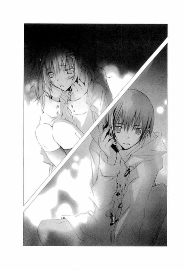
「そ、それでね、ゴメンっ......。聞くつもりはなかったんだけど......井上たちの話が、勝手に聞こえてきて......。井上の名前とか、井上が、あの子のこと『ミウ』って呼んでることとか......」
ぼくはハッとした。
「それで、美羽のことを〝井上ミウ〟だと思ったんだね？」
琴吹さんが、びくっとする。
それから、携帯を耳に押しあてたまま、顔をゆっくりとぼくのほうへ向け、先生に叱られるのを待つ子供みたいに、弱々しい目でぼくを見上げた。
「あの子......いつもルーズリーフになにか書いて、それを井上に読ませてたでしょう？次の薫風社の新人賞に応募するって話してるのも、聞こえちゃって......。井上は、『ミウなら最年少で大賞がとれるよ』って言ってた──。
だから、十四歳の中学生が賞をとったってニュースで話題になったとき、心臓が止まりそうになっちゃったんだ。あの子が、受賞したんだって。そのあと急に、井上もあの子も図書館に来なくなっちゃったから。やっぱりそうなのかなって......」
琴吹さんの眼差しが、言葉が、過ぎ去った日々を思い起こさせ、胸を切なく締めつける。
シャーペンで、ぼくの手の甲を軽くつついて、いたずらっぽく目配せをする美羽。揺れるポニーテール。爽やかな石鹸の香り。
ささやかで、幸福な日常。
──コノハ、あたしのことが好き？ あたしの目を見て、言ってみて。あたしが、好き？ねぇ？あたしは大好きよ。コノハは、あたしをどれくらい好き？
いつもぼくをからかって、楽しんでいた美羽。『コノハは、あたしの特別よ、コノハにだけは、あたしの夢を教えてあげる』、ぼくの耳に唇をそっと押しあて、そうささやいた。
あの瞬間、頭が沸騰し、心臓がはじけ、体がとろけてしまいそうだった。
──薫風社の新人賞に応募しようと思うの。大賞をとれば、あたしの原稿が本になるのよ。歴代の受賞者で最年少は十七歳だって。あたしは、それより早く受賞したいなぁ。
──美羽なら、きっと最年少で大賞がとれるよ。美羽の小説が、本になるのが楽しみだな。最初のサインは、ぼくに書いてね。約束だよ。
美羽は気が早いよと、くすくす笑っていた。
琴吹さんは、あのとき、ぼくらと同じ場所にいたんだ。
ぼくと美羽のことを、ずっと、見つめていたんだ。
あの、無邪気で、幸せだった時間を──。
激しい痛みが、喉に込み上げる。
琴吹さんが誤解しても無理はない。
はじめに小説を書いていたのは、美羽だった。ぼくはずっと美羽の読者で、見よう見まねで小説らしきものを書きはじめたにすぎなかったし、それを美羽に内緒にしていた。
十四歳の天才美少女作家になるつもりなんてまったくなくて、あの幸せな日々が、あんなにあっさり崩れ去るなんて、思ってもみなかったのだ。
あの頃のぼくを知っている琴吹さんに、儚げな目で見つめられていることが苦しくなり、ぼくは掠れた声で言った。
「それは、きみの勘違いだよ。美羽は、井上ミウじゃない。井上ミウは、美羽じゃなくて──......」
琴吹さんは続きの言葉を待つように、携帯を耳に当てたまま、じっとぼくを見つめている。
「ミウは......井上ミウは......」
言葉が喉にからまって、息がどんどん苦しくなる。携帯を持つ手が冷たく凍えてゆく。
琴吹さんが、吐息のように小さな声で尋ねる。
「あの子が、井上ミウじゃないなら......今、あの子はどうしているの？」
その瞬間、心臓が握り潰されるような激痛と、嵐のようなどす黒い幻影が、ぼくを襲った。
初夏の屋上。揺れるスカートの裾とポニーテール。寂しそうな顔で振り返り、微笑む美羽。最後の言葉。
──コノハには、きっと、わからないだろうね。
逆さまに墜ちてゆく美羽。絶叫するぼく。
パズルのピースがバラバラになるように、崩壊してゆく世界。
重く硬い記憶の扉が、軋みながら開いてゆき、悪意に満ちた声が、残酷に響き渡る。
──あんたみたいなやつは、気づかないんじゃない。知りたくないだけなんだ。
──あんたや、井上ミウみたいなやつが、無邪気に人を追いつめ、傷つけるんだ。
違う！ やめてくれ！ 美羽を追いつめたのはぼくじゃない！
ああ、けど。
見えない手に心臓が握り潰され、喉がぎりぎりと締めつけられ、息ができなくなってゆく。
ぼくは、なにか大事なコトを忘れているんじゃないか？
心に幾重にも鍵をかけて、思い出さないようにしているんじゃないか？
「井上！」
琴吹さんが立ち上がり、ぼくに駆け寄った。
ぼくは床に膝をついて、がくがく震えながら浅い呼吸を繰り返していた。
「どうしたの!? すごい汗だよ？」
「......っく、大丈夫だよ......ありがとう」
「ゴメン。あたしがヘンなこと訊いたから」
「そうじゃない。きみのせいじゃない」
泣き出しそうな琴吹さんを安心させるため、乾いた唇でぎこちなく微笑んでみせる。
「美羽とは、もう会えないんだ。遠くへ引っ越しちゃって、それきり連絡がとれないんだ......」
琴吹さんが眉を下げ、息をのむ。
発作はどうにかおさまったけれど、代わりに、胸を切り裂くような後悔が押し寄せてくる。
二年前のあの日、屋上から飛び降りた美羽は、一命を取り留めた。
ちょうど下が植え込みになっていたのと、途中でポールに引っかかり、落下の速度が弱まったのが、美羽の命をこの世に繋ぎ止めたのだ。
けれど、しばらくの間は予断を許さない状況が続き、病院も家族以外は面会謝絶になっていた。
ようやく意識を取り戻したものの、治療をしても障害が残り、これまでのように歩いたり、手を動かしたりすることはできないということを知らされたとき、ぼくは再び闇の中に突き落とされた。
美羽はどんな気持ちでいるのだろう、どうして屋上から飛び降りたりしたのだろう、どうして、ぼくにあんなことを言ったのだろう。ぼくのことを、今、どう思っているのだろう。
美羽が飛び降りたのは、ぼくのせいなのだろうか──！
美羽に会って話を聞きたかったけど、美羽は会ってくれなかった。ぼくも、美羽の口から真実を聞くのが、震えるほど怖かった。毎晩、美羽が墜ちてゆく夢を見てはうなされて跳ね起き、トイレで吐き、ベッドに戻っても眠れず、シーツをかきむしりながら、朝まで過ごした。
美羽に会いたい。
けど、怖い。
会いたくない。
毎日、毎日、押し潰されそうな気持ちで病院まで行って、受付で、美羽には会えないと告げられるたびに、心が刃物で切り裂かれて、ずたずたになって。
そうするうちに、答えがわからないまま、美羽は引っ越してしまった。誰も美羽の行き先を知らなかった。
美羽は、ぼくになにも告げずに、いなくなってしまったのだ。
そのあと、ぼくは急に息ができなくなる発作を繰り返し、学校で倒れて、救急車で病院に運ばれたりし、しまいには引きこもりになった。
二作目を急かす出版社の人たちに、もう小説は書かない、なにも書けない、小説も井上ミウも大嫌いだ、ぼくは井上心葉だ、ミウじゃないと泣きながら訴え、連絡を完全に絶ち、井上ミウという作家は、この世からいなくなった。
二年以上の時が過ぎ、その間、美羽からの便りは一度もなく、消息を聞くこともない。
もともと美羽は、クラスの女の子たちから浮いていて、ぼく以外に親しい友達はいなかったから......。
きっともう、二度と会えない。
美羽はぼくを許さないまま、遠くへいってしまった。
琴吹さんは、張り裂けそうな表情で、ぼくを見つめている。
ぼくの気持ちを傷つけてしまったのではないかと、悔やんでいるのだろうか。手で髪をぐしゃっと握りしめ、必死な、苦しそうな声で、言った。
「ご......ゴメンね......あたしって、どうしていつも、余計なこと言っちゃうんだろう......。あたし、ガサツで、口のききかたとか知らないから、中学の時、男子に性格悪いって嫌われてて......先生にも反抗してるって思われて、睨まれてたんだ。ヤダ......全然変わってない。自分が情けなくなる......ホントは、夕歌みたいに、社交的で優しい女の子になりたかったのに」
そうして、しょんぼりとうつむいた。
「琴吹さんは性格悪くなんかないよ。クラスにもいい友達がたくさんいるじゃないか」
琴吹さんが目を伏せたまま、うるんだ声でつぶやく。
「それは。みんな夕歌のおかげなの......。中学の頃からずっとあたしのことを助けてくれて、励ましてくれた。ななせは、もっと笑ったほうがいいよって言ってくれた......。そうしたら、ななせが怒ってないって相手に伝わるからって......。そんな風に、いつもアドバイスしてくれたの。なのに、あたしは夕歌に頼るばっかりで、夕歌が困っているときに、全然助けてあげられなかった」
ほのかなキャンドルの明かりが、琴吹さんの哀しそうな横顔を照らし出す。白い頬の上で、オレンジの炎がゆらゆら揺れている。
ぼくと同じように、琴吹さんも大切な人を失った。
突然に失われ、変わってしまう日常。
それに直面したときの、体がばらばらに裂けてしまいそうな痛みと、絶望を、ぼくも知っている。
どうして。
何故。
この間まで、きみは確かに幸せそうに笑っていたのに。
二人で手を握りあって過ごす、おだやかであたりまえの日常が、いつまでもいつまでも、永遠に続くと信じていたのに──。
胸の奥で繰り返される、答えの出ない問い。終わりのない後悔。癒されない痛み。
今、膝を抱えてうつむいている琴吹さんは、二年前のぼくだ。
けれど、ひとつだけ違うことがある。
琴吹さんはまだ、水戸さんを完全に失ったわけじゃない。
琴吹さんが水戸さんの身を案じているように、水戸さんも琴吹さんのことを心配している。失踪したあとも、琴吹さんにメールを送り続けていたのも、ぼくに電話をかけてきたのも、きっと、琴吹さんを傷つけたくないから。
琴吹さんは片想いじゃない。水戸さんも、琴吹さんを想っている。
ラウルは、善良で育ちのいいお坊ちゃまで、ファントムに対抗できるような力は持っていない。
けれど、彼が地下の帝国に果敢に踏み入ったように、今、アクションを起こせば、フアントムの手からクリスチーヌを奪還することができるかもしれない。
ラウルを助けるペルシア人の役割が、ぼくに務まるかはわからないけれど。
今ならば、間に合うんじゃないか。
ああ、でも。地下の帝国へ向かうということは、水戸さんが隠してきた真実を暴くことでもある。
これまで水戸さんがなにをしてきたのか、そしてこれから、なにをしようとしているのかを、琴吹さんは知ることになる。大好きな自慢の親友が、援助交際をし、主役を得るため脅迫までしていたという事実を、琴吹さんは受け入れることができるのか。
〝本当の〟水戸さんの姿が、どれほど暗く陰惨なものであったとしても──琴吹さんが知っている彼女とまるで別人であったとしても──琴吹さんは、水戸さんと親友であり続けることができるのか？
もし、ぼくなら──。
鋭い痛みが、胸を刺し貫く。
ぼくは、美羽のすべてを知りたいと思っているのだろうか？
美羽の〝真実〟を。
あのとき美羽が、何故、飛び降りたのか？ 何故、急によそよそしくなったのか？口をきいてくれなくなったのか？一人で先に帰ってしまうようになったのか？刺すような目でぼくを見つめ、憎しみを向けたのか？
あの寂しそうな微笑みの理由も。
ぼくは、知りたいのだろうか？
たとえそれが、どんなに辛い真実でも？ これまで以上の苦しみと絶望が降りかかってきて、二度と立てないほど打ち据えられることになっても？
痛みに耐えきれず、狂ってしまっても？
真実を知ることが、絶対に正しいこととは限らないのに──。
頭の中に、叩きつけるような声がとどろく。
おまえは、知りたくないだけなんだ。おまえは臆病者の偽善者だ。自分が被害者みたいなふりをして、真実から目をそむけて逃げ続けているんだ。
傷口に、赤く焼けた鉄の棒を突っ込まれて、ぐちゃぐちゃに掻き混ぜられているような激痛に、息がつまり、倒れそうになる。
やめてくれ！ それ以上責めないでくれ！
やっと平穏な生活に戻れたのに。井上ミウのことなんか忘れて、やり直せると思ったのに。毬谷先生だって、言ってたじゃないか。真実が救いをもたらすとはかぎらないって。知らないほうが幸せなこともあるって。
そうだ、ぼくは、知りたくない！ 知りたくないんだ！
こんなに苦しいのに──耳をふさぎ、目を閉じて、うずくまって耐えるしかないほどに、真実へ続く扉を開くことが怖い。
美羽の気持ちを知るのが、怖くて怖くてたまらないんだ。美羽に憎まれているとわかったら、きっと生きていけない──。
葛藤するぼくの隣で、琴吹さんは膝に顔を埋め、肩を小さく震わせている。
琴吹さんは──？ 琴吹さんなら、どうする？胸を抉る痛みに悶え苦しんでも、親友の〝真実〟を知りたいと思うか？
ぼくと同じ立場にいる琴吹さんなら、深い闇に押し潰されそうな、この恐怖や不安を、わかってくれるんじゃないか。ぼくらはじゅうぶん傷ついていて、これ以上、どんな裏切りにも、憎しみにも、耐えられないと──。
ぼくは、低い声で尋ねた。
「琴吹さん......。もし......もしも、水戸さんが、琴吹さんが思っているような人ではなくても......本当のことを知りたいと思う？」
琴吹さんが顔を上げ、ぼくを見てハッとする。
「もし......水戸さんが犯罪者だとしても、琴吹さんを裏切っていたとしても......きみは、知りたいと思える？」
何故ぼくが、急にそんなことを言い出したのか、琴吹さんはわからなかったろう。
けれど、消え入りそうなぼくの声や、震える唇や、哀願するような目から、そこに込められた暗く澱んだものを感じ取ったのだろう。張りつめた不安そうな顔で、ぼくを見上げる。
炎がゆらゆらとゆらめき、煙の匂いが鼻を突き、空気がぴりぴりと肌を刺す。
琴吹さんは、弱々しく眉を下げ、つぶやいた。
「......あたしは、知りたいし、夕歌を助けたい」
とたんに──、胸がいっぱいになり、泣きそうになった。
ぼくが、怖くて出せなかった答えを、あたりまえのように口にした。
ファントムに対抗する力を持たない、弱くて優しくて、意地っ張りで泣き虫な、本当に普通の女の子なのに、知りたいと言った、助けたいと言った。
単純で強いその言葉に、胸がどうしようもなく震えて──、愛しさとか、勇気とか、願いとか、守りたい気持ちとかが、次々込み上げてきて、ぼくは琴吹さんを抱き寄せた。
冷え切った小さな体が、ぼくの腕の中で、驚いたように震える。
「い、井上......っ」
臣くんの言葉には、もう揺るがない。
琴吹さんが示してくれた勇気が、臆病なぼくを奮い立たせ、引き上げてくれた。
きみが、ぼくに、教えてくれた。
今、触れることのできる、あたたかで確かなものを、しっかりつかまえようとするように、ぼくは琴吹さんを強く抱きしめた。
「一緒に......水戸さんを捜そう。もう一度、手伝わせて。お願い、最後までそばにいさせて」
ためらうように伸ばされた小さくてか弱い手が、ぼくの背中をぎゅっとつかむ。
琴吹さんが、しゃくりあげなら、「うん」とうなずいた。
黴と煙の匂いのする空っぽの部屋は、ほのかなキャンドルの明かりに照らされている。
目に涙をにじませて抱きしめ合うぼくらは、とても弱くて、けれど二人ならば、強くなれるんじゃないかと思えた。
もし、この先、真実を知ることで琴吹さんが傷ついたら、そのときは、ぼくが琴吹さんを支えよう。
琴吹さんと一緒に、最後まで目をそらさずに、水戸さんの真実を見つめよう。
「きっと、クリスマスまでに水戸さんは帰ってくる。琴吹さんとの約束を守ってくれる。今は、そう信じよう」
「うん......うん......」
ぽたぽたとこぼれるあたたかな涙で、ぼくの首筋をぐっしょり濡らしながら、琴吹さんが何度も何度もうなずく。
「ありがとう......。校章......くれたことも......。ありがとう......ずっとお礼、言いたかった......。ありがとうって言いたかった......井上のこと......ずっと見てた」
そうして泣きながら、小さな声で、つぶやいた。
「井上は......あたしの、初恋だったんだよ」
◇ ◇ ◇
どこで道を踏み外してしまったのだろう。
天上に響く歌声も、聴衆の喝采も、私を幸せにはせず、災いをもたらしただけだった。
そんな、うたかたのように消え失せる不確かなものを欲しがらなければ、ファントムにつけいられることもなかったのに。
才能なんて、私には必要ではなかった。
井上ミウの本のページをめくるときに感じる、あの澄んだ優しい感覚。あたたかで、平和な日常。
普通に学校へ通って、友達と話したり、勉強をしたり、お弁当を食べたり。
放課後、待ち合わせて一緒に帰ったり、図書館で二人で宿題をしたり......笑ったり。
イブにはプレゼントを交換して、ずっと一緒にいようって約束して......指と指をからませあって......。
そんな、あたりまえの毎日だけでよかったのに......。
彼の手にふれるときに込み上げる、ひだまりのような愛おしさと、ななせの笑顔を見るときの、はずむような喜びだけで、じゅうぶん幸せだったのに。
ななせ、ななせ。
今、なにをしている？ なにを考えている？
私は、ななせのことを考えている。大事なものなんて、もうななせしかない。
ななせが幸福だといい。ななせの願いが、全部叶えばいい。
本当は井上ミウは、嫌い。ずっと嫌いだった。ううん、違う。そうじゃない。ただ綺麗すぎる世界を見ていると、胸が潰れるようで、辛くてページをめくれないだけ。
私は指輪をはずしてしまった。
もう戻れない。
日の光は、私には眩しすぎる。
私を汚し、闇に突き落とした連中を、私は憎まずにはいられない。
彼らに復讐をする。
仮面をつけファントムになり、追いかけ、追いつめ、幻想の迷宮に封じ込め、じわじわとなぶり、とどめを刺すのだ。
許しを乞うても、もう遅い。屈辱にまみれ、穢れにまみれ、人であることをやめた私の唇からこぼれる、弔いの歌を聴くがいい。
私を欺いた天使、私を動物のように扱った男たち、おまえたちが、私をファントムにした。
みんな、みんな、呪われてしまえ！
六章 ◎ 死と氷の歌
あの晩、琴吹さんと手をつないで家に帰った。
真っ暗な道を、ゆっくり、ゆっくり、歩きながら、ぼくが水戸さんのことを語る間、琴吹さんは目を伏せて、じっと耐えていた。
ときどき、握りしめた手が儚げにぴくりと震えた。そのたび、励ますように指に力を込める。そうすると、向こうもおずおずと握り返してくる。
家の前で別れるとき、琴吹さんは赤い目をして言った。
「今年も夕歌とクリスマスを過ごせるって、あたし信じるよ。だって夕歌は、これからもずっと親友だから」
毬谷先生とは、連絡がとれないままだった。
「心配することないわ。マリちゃんのことだから、きっと涼しい顔で戻ってくるわ」
大学の近くの喫茶店で会った粧子さんは、苦笑しながら言っていた。
「マリちゃんは、常識とかお金とか栄誉とか、そんなものに縛られたりしないの。学生時代も、みんなが必死になって上を目指している中、いつも飄々としてトップに立っていたわ。なのに、それもあっさり捨ててしまった」
煙草を吸う手を休め、羨ましそうな眼差しになる。
「わたしも......マリちゃんみたいに、生きられたらと思うわ」
教師って大変なのよと、冗談めかしたあと、粧子さんは、学校の様子を教えてくれた。
「今は代役を立てて稽古をしているわ。水戸さんは、まだ主役のままだけど......当日、彼女が現れなければ、代役の子が、舞台に立つことになるでしょうね」
また麻貴先輩から、毬谷先生が外国のコンクールに入賞したときの、映像を見せてもらった。舞台の上に、黒のタキシードを着て立つ先生は、晴れ晴れとした表情で、明るい歌声を響かせていた。
麻貴先輩は、高く組んだ膝に片肘を乗せ、聞き惚れている様子だった。
「高音の伸びが素晴らしいでしょう。子供の頃は、聖歌隊で歌っていたのよ。天使の歌声と言われていて......その頃のＣＤを聴いたことがあるけど、鈴を振ったような澄みきった、美しいソプラノだったわ」
天使という言葉に、ドキリとする。
麻貴先輩は、口元にあでやかな微笑みを浮かべた。
「芸術の世界は、たまにとんでもない化け物を生み出すわね。だから興味がつきないんだけど。......東洋人は西洋人から見ると、年齢不詳な感じがするから、歳をとらない無性の天使なんてあだ名が、ついたのかもしれないわね」
無性......。男でもなく、女でもないもの──。確かに毬谷先生は、どこか中性的な雰囲気があった。水戸さんの天使も、先生なのだろうか？
「なににしても、もし水戸夕歌が、〝音楽の天使〟に選ばれた歌い手であるなら、必ず発表会に現れるはずよ」
麻貴先輩は、なにかを知っているのかもしれなかった。けれど、したたかな彼女が口を割るはずはなかった。
臣くんは、ずっと学校を休んでいる。琴吹さんは、「臣は、もともと体が弱いから」と言っていたけれど、ぼくはもちろん、そんな風に思えなかった。
少なくとも彼は、毬谷先生となにか関わりがあるはずだ。ぼくが井上ミウであることを何故彼が知っているのかも、気になっていた。
「そういえば琴吹さん、おかしなメールが送られてこなかった？この前、保健室で、森さんに『ファントムが』って言ってたって聞いたけど」
琴吹さんは頬を赤らめ、急にそわそわした。
「あ、あれは......。不幸の手紙みたいなチェーンメールが来て、すごく怖かったから。ついファントムと重ねちゃったんだ。よくあるいたずらなのにさ、ちょっと弱気になってたみたい。もう平気だよっ」
あんなに怯えていた理由は、それだけではないような気がしたのだけど......。唇を尖らせ、強がってみせる様子が健気で、最後まで守ってあげたいと思った。
はたして、水戸さんは発表会に現れるのか──。
クリスマスも目の前に迫っている。
遠子先輩は唇に人差し指をあて、ぼくの話に真面目な表情で耳を傾けたあと、
「日曜日は、業者テストなのよ」
と、悔しがっていた。
「まだ、国立狙いなんですか」
「もちろん」
「じゃあ、発表会のことは忘れて、死ぬほど勉強してください」
「あー、なんで溜息なんかつくの～。もぉっ、次は絶対Ｃ判定をとってやるぅ」
「それ、全然安全圏じゃありませんから」
そんな風にして、当日を迎えた。
街はすっかりクリスマス一色で、通りにクリスマスソングが流れ、そこを歩く人たちも、どこかうきうきしてて楽しそうだった。
コンサートは十一時からで、大学の敷地内にあるホールに、ぼくらは三十分も早く辿り着いた。広々としたロビーには、学生の発表会だというのに、名札のついたスタンド花がいくつも飾られ、受付にも花束が積み上げられている。
琴吹さんも、真っ青な薔薇の花束を、胸にしっかり抱えていた。
「その薔薇、ものすごい青だね。そんな色、見たことないよ」
琴吹さんが、ちょっぴり恥ずかしそうに言う。
「夕歌が、一番好きな花なの。ネットで注文したんだ。本当の色じゃなくて、白い薔薇を青く染めてるんだって。花言葉は、神様の祝福っていうんだよ」
今日の琴吹さんは、リボンのついたワンピースの上から、コートをふんわり羽織っている。服装のせいか、いつもよりおしとやかな雰囲気で、可愛かった。
「神様の祝福か......良い意味だね」
「うん。夕歌の十七歳の誕生日に、彼氏がこの薔薇をくれたんだって。夕歌ね、すごく喜んで、携帯で薔薇の写真を何枚も撮って、あたしにメールで送ってきたんだよ」
「きっとまた喜んでくれるよ、水戸さん」
「だと......いいな」
受付で粧子さんを呼んでもらうと、ひどくやつれた様子でやってきた。
「水戸さんが、まだ来ないのよ」と、苦い口調で告げる。
目の下にクマができていて、肌がくすんでいる。ちょっと苛々しているようだった。きっと楽屋で、水戸さんが現れるのを、胸が潰れる思いで待ちわびていたのだろう。
上演後にまた来ますと言って、ぼくらは粧子さんと別れた。
「水戸さんには、発表会が終わったら楽屋で会えるよ。そうしたら花を渡そう」
「......うん」
琴吹さんは、がっかりしているのだろう。元気のない顔でうなずく。抱きしめた青い薔薇が、歩くたびにかすかに揺れる。
ぼくらの席は、二階の一番前だった。
毬谷先生は、来ているのだろうか。それに、臣くんは。
観客を見渡してみたけれど、人が大勢いすぎてわからなかった。
やがて、場内に『携帯の電源をお切りください』とアナウンスが流れ、ホールが暗くなり、開演のベルが鳴り響いた。
オペラ『トゥーランドット』が、はじまったのだ。
中国の皇帝の姫、トゥーランドットは残忍な性格で、自分に求婚する男たちに三つの謎をかけ、それに答えられなければ首をはねてしまう。戦争で国を追われた流浪の王子カラフは、ペルシアの王子の処刑の場に居合わせ、氷のような姫に、強い憤りを覚える。
しかし、その直後に、高楼に現れた姫の美しさにたちまち心を奪われ、周囲が止めるのもきかず、姫に求婚し謎解きを願い出るのだ。
カラフ役の男性は客演で、プロで活躍しているオペラ歌手らしい。夕暮れに染まる皇帝の居城を背景に、華やかなテノールが、トランペットのように若々しく響き渡る。
『わたしは全身すべて熱情、わたしは全身すべて渇望！
いずれの感覚も激しい責め苦だ！
心の琴線いずれもが
一つの語を抱き、それを叫んでいる、
トゥーランドット！ トゥーランドット！ トゥーランドットと！』
すごいっ。
マイクの効果もあるだろうけど、人間の声ってこんなに、高く響くものなんだ。本当に楽器みたいじゃないか！
歌はイタリア語だったけれど、事前に内容が頭に入っているので、どの場面かだいたいわかる。喜怒哀楽が、くどいほどにはっきりしていて、登場人物の感情が歌に乗り、圧倒的なパワーで胸に食い込んでくる。
トゥーランドットの出番は、まだ先だ。水戸さんは、舞台に現れるのか。
こめかみがずきずきし、時間がもどかしいほどに長く感じられた。
青い薔薇を抱えた琴吹さんが、祈るような眼差しで、舞台に見入っている。
一幕が終わり、二幕に移ると、セットが城の中に変わった。
姫の気まぐれに振り回される大臣たちの嘆き。城内の広場に集まってくる人々。皇帝と、カラフのやりとり。
今すぐこの場を立ち去るよう忠告する皇帝に向かって、カラフは決然と歌い上げるのだ。
『天子よ！ 私は願い上げます、
この試練に挑むことを！』
ああ、もうすぐだ。
手のひらに、冷たい汗がにじみ、息が苦しくなる。
もうすぐ、トゥーランドットが現れる。
舞台の中央に組まれた、高い階段。
その頂上にライトがあたり、コーラスが唱和する。
『姫様、ここへお出ましください！
みな輝きましょう！』
琴吹さんが身を乗り出す。ぼくも、まばたきをすることも忘れて、階段を凝視した。てっきりそこからトゥーランドットが、セリであがってくるかと思ったのだ。
けれど、トゥーランドットは姿を現さない。
他の観客も不審に思ったのだろう。ざわめきが波のように広がってゆく。
水戸さんは、間に合わなかったのか──！
そのとき、思いがけない方向から、澄みきった高音が響き渡った。
客席一階の、後方。
そこから、中央の通路を、舞台に向かって進んでくる少女がいる。
空気を凍りつかせるほどの威厳を漂わせ、裾を長く引きずった赤と金の煌びやかな薄衣を身にまとい、頭に大きな金色の冠をかぶった、長く美しい黒髪の乙女──。
殺戮の姫、トゥーランドット！
客席がどよめく。
トゥーランドットの顔の上半分は、白い仮面で、すっぽりと覆われていたのだ。
けれど、そんな困惑はすぐに、ホールを支配する女神の歌声に、かき消されてしまった。
まるで透明な翼のようにきらめきながら、天空の遥か彼方まで飛翔し、伸びてゆく声！
豊かで力強い高音が、その恐るべき威力を微塵も弱めることなく、ホールの壁やロビーへ続く扉を突き破る勢いで、とどろく。
『この宮殿に、今や幾千年になる昔、
絶望の叫びが響いた』
『そしてその叫びは子々孫々を経て
ここに、私の魂に宿った！』
それはまさに、人智を超えた歌声！天の楽器が奏でる、至高の、至福の、歌だった。
血みどろの姫、死を呼ぶ姫、氷の姫。なのにその声は、降り注ぐ光のように透明にきらめき、鋼のような強靭さを持ち、トゥーランドットという少女を、血なまぐさい殺戮者ではなく、白く穢れない至高の存在へと高めてゆく。
人の男が触れてはならない、美しく無慈悲な純潔の乙女。
彼女は舞台の中央に辿り着くと、ライトを一身に浴び、狂気のように高く澄んだ声を、ホールの隅々にまで響かせた。
昔、異国の王に連れ去られ、陵辱され死んでいった祖先の姫の復讐をするために、この身は誰のものにもならないのだと。
『私はそなたらに仇討ちをなすのです、
あの清純無垢なお方の、あの叫びの
そしてあの死の！』
『断じて何人も私を得ますまい！
あの方を殺めた者への憎悪が
私の心には生々しくあります！』
『否、否！ 断じて何人も私を得ますまい！』
この声は、どこまで高く伸びてゆくのか！
高音になればなるほど、力強さを増し、天に向かって自由に羽ばたいてゆく。
ぼくは、声楽の勉強をしたわけではないし、オペラにも詳しくない。だけど、この声が、会場中を熱っぽい幻想の渦に引きずり込んでいることは、疑いようがなかった。
トゥーランドットの声と、カラフの声がからみあう。
女性のソプラノと男性のテノール、二つの高音が、互いを屈服させようと、激しく天上に駆けのぼってゆく。
カラフの声が途絶えても、トゥーランドットの声は力の差を見せつけるように、さらにその上へと伸びてゆく。
二幕が終わるのは、あっという間だった。
トゥーランドットが出した三つの問いに、カラフは見事に答える。
それでもトゥーランドットは、カラフの愛を拒もうとする。そんな彼女に、カラフは夜明けまでに自分の名をあててみよと、逆に謎を仕掛けるのだ。
もし、姫が、その名をあてれば、自分は死ぬと。
『貴女は私の名をご存じない！
私に私の名をお告げなさい、
夜明けまでに！
さすれば夜明けに私は死ぬといたします！』
うなずくトゥーランドット。
幕が下り、ホールが爆発的な拍手と賞賛に包まれる。
観客は総立ちになり、酔っているようだ。
二十分の休憩を告げるアナウンスが、嵐のような拍手にかき消され、切れ切れにしか聞こえない。
琴吹さんが、真っ青な顔で立ち上がった。
「あたし......っ、楽屋へ行ってみる！ 舞台が終わるまで我慢できない」
胸苦しいような不安を感じたまま、ぼくは琴吹さんと一緒に、楽屋へ向かった。
中へ通してもらえなくても、せめて、水戸さんの様子だけでもわかれば──。
けれど、ぼくらが辿り着いたとき、そこは大騒ぎになっていた。
開け放たれたドアから、スタッフが、ばたばたと出入りし、大声でわめきあっている。
「水戸さんは、まだ見つからないの！」
「ダメっ、トイレにもロビーにもいなかったわ！」
「主役が舞台を放り出して失踪しちまうなんて！」
「渡辺さん、念のためスタンバイして！」
「は、はい！」
ぼくらは驚いて、顔を見合わせた。
水戸さんが、またいなくなってしまったのだ！
次の瞬間、ぼくらは駆け出した。
水戸さんを捜さなければ！ まだ、そのへんにいるかもしれない。
どこへ？ どこへ行ったのだろう？
ホールの廊下を、あてもなくばたばたと走りながら、ぼくは叫んだ。
「琴吹さん、水戸さんの携帯を鳴らしてみて！」
花束を抱えた琴吹さんが、ポケットから携帯電話を出し、指を忙しく動かす。
海のように真っ青な花びらが、はらはらと床に落ちる。
「ダメっ、出ない」琴吹さんが唸った。
そのとき──。
聞き慣れたクリスマスソングが、耳をかすった。
これは、『サンタが町にやってくる』だ。
琴吹さんがハッとする。
音の聞こえたほうへ、ぼくらは夢中で走った。
花びらが床に次々こぼれてゆく。軽やかなメロディは途切れることなく、続いている。
あの正面のドアからだ──！
ノブを回して飛び込むと、中は物置だった。左右に棚があり、段ボールが積み上げてある。
その真ん中で、あざやかな薄衣に身を包んだ仮面の少女が、首にからみつく黒いマフラーを、両手で引き離そうと、体をくねらせていた。
背後から少女の首を絞め上げている人物を見て、ぼくらは愕然とした。
どうして、彼女が！
仮面の少女が足をすべらせ、棚の角を片手でつかむ。冠の房が鳴り、赤い衣がひるがえった。シンプルな黒いマフラーが、細い首に鋭く食い込み、後ろにピンと張りつめ、少女の唇から、苦しげな喘ぎ声が漏れる。
「やめてっ！」
琴吹さんが薔薇の花束を放り出し、水戸さんの首を絞めつけている相手に飛びついた。ぼくも反対側の腕にしがみついて、止める。
「邪魔をしないでっ！」
息を乱し、狂気にゆがんだ表情で振り返ったのは、鏡粧子さんだった。
「可愛がってあげたのにっ、お家が大変で困ってるというから、いいお客様を回してあげたのにっ。なのにあなたは、わたしを裏切ったのよ！」
粧子さんはひどく興奮していて、ぼくらのことなど眼中にない様子だった。
切れ長の美しい目に怒りと憎しみをたぎらせ、顔を真っ赤に染め、歯を食いしばり、マフラーの端を引っ張る。
何故っ、何故、粧子さんは、水戸さんにこれほど憎しみを抱いているんだ!?
客を回したって、どういうことだ？
まさか──！
ぼくは喉が裂けそうな声で叫んだ。
「あなたが、水戸さんに援助交際のバイトを紹介したんですか！粧子さん！」
粧子さんの手がマフラーからすっぽ抜け、後ろに倒れ込む。
琴吹さんが「きゃっ」と悲鳴を上げ、ぼくらは同時に、床に尻餅をついた。
棚に背中を強く打ちつけ、粧子さんが呻く。そこにもたれたまま、肩で荒い息をし、低い声で言った。
「ええ......そうよ。だって、わたしも、そうやって自分の力だけでお金を稼いで、音楽の勉強を続けてきたんですもの」
「！」
琴吹さんが、息をのむ。
顔に振りかかる髪を払おうともせず、粧子さんは目を無気味に輝かせて、言葉を続けた。
「音楽をやるには、お金が必要だわ。授業料だけじゃなくて、衣装代や、教材費や、コンサートのチケットのノルマや──外で個人レッスンを受けるのにも、留学をするのにも、お金が湯水のように出ていって、いくらあっても足りやしない。
だからわたしは、貧乏で困っている女の子たちに、割のいいバイトを紹介してあげたのよ。サイトを立ち上げて、信用のできるお客様を集めてね」
サイトの管理人は、粧子さんだったのだ！
その事実に体が震えた。琴吹さんも目を見開いたまま、頬をこわばらせている。
「けどね、そんな風に自分を売って勉強を続けても、音楽家として成功した子なんて、一人もいやしないのよ。みぃーんな途中で挫折して、絶望して、ぼろぼろになって、夢を諦めてゆくの。......わたしのようにね」
苦々しそうに唇を噛み、顔をゆがめたあと、粧子さんの目が、さらに鋭くなる。
「なのにっ、どうして？ どうしてあなたは、あんな風に歌えるようになったのっ!?あなたが、みんなの前で『夜の女王のアリア』を歌ったとき、信じられなかったわ。素晴らしかった。愕然としたわ。この子は、わたしや、今までの子たちとは違う。成功するかもしれない──。そう思ったとたん、怖くて、憎くてたまらなくなったのよっ」
ぎらぎら輝く暗い眼差しが、壁際にうずくまる水戸さんを捕らえる。乾いた唇が、恨みの言葉を吐き散らす。
「〝椿〟は、みんな絶望しなければならないのよっ！最初の〝椿〟であるわたしがそうだったように！あなた一人が、特別な〝椿〟になるなんて許せない。そんなの不公平だわ！」
棚にあった大きな裁ちバサミを握りしめると、粧子さんは水戸さんに飛びかかった。
「夕歌っ！ 危ない！」
琴吹さんが絶叫する。
水戸さんの顔のすぐ脇の壁にハサミが当たって、火花を散らす。
粧子さんが憎々しげに唸り、またハサミを振り上げる。
「そんな綺麗な服を着て、舞台の真ん中に立つ資格、あなたにはないわっっっ！」
「やめてぇぇぇ！」
駆け寄る琴吹さんが、肘で跳ね飛ばされる。
「琴吹さん！」
水戸さんのかつらの片側を、ハサミが切り裂いた。
漆黒の髪が蛇のようにうねりながら床に落ちる。粧子さんが力任せに引っ張った衣装の袖が破れ、白い腕と、肩があらわになる。
「あなたは、わたしたちすべての椿を、裏切ったのよっ！」
粧子さんの勢いは凄まじく、とても近寄れない。
そのとき、粧子さんの背中越し──ドアのところに、スーツ姿の男性が立っているのが見えた。
毬谷先生！
あの位置なら、後ろから粧子さんを押さえられるかもしれない。
それが無理でも、人を呼んできてくれたら──！
けれど毬谷先生は、動かない。
凍りつきそうな冷酷な眼差しで、この愁嘆場を見つめている。
まるで顔に仮面でもはりつけたような、冷たい無表情で──！
何故!? 何故、先生は、動かないんだ！
粧子さんが、水戸さんを床に突き倒して馬乗りになり、狂ったように服を引き裂く。
「こんな衣装、あなたに必要ないっ！ どんなに取り繕ったって、椿は薄汚い娼婦に過ぎないんだわ！あなたも、わたしも、真っ黒に穢れているのよ！」
薄い布が、びりびりと音を立てて破け、素肌が露わになる。
白い喉──胸──そして腰──！
ぼくらは、信じられないものを見る目で、水戸さんを見つめた。
服の下に隠れていたのは、やわらかな少女の体ではなく、引きしまった少年の体だった！
「そんな......」
粧子さんの手が、だらりと下がる。憎しみにゆがんでいた顔に、激しい混乱が浮かぶ。
「どういうこと......！ どこで入れ替わったの？水戸さんはどこへ消えたのっ!?」
そのとき、ドアのところで、いるはずのない人の声がした。
「それは、ファントムが知っているわ」
唖然とする毬谷先生の横を通り抜け、細く長い三つ編みを揺らし、首を凜と立てて、部屋に入ってきたのは、制服の上に紺色のコートを羽織った遠子先輩だった。
七章 ◎ 暗い、暗い、土の中
「なんでいるんですか。業者テストはどうしたんですか」
うろたえるぼくに、遠子先輩はほんのり頬を染め、ぽそぽそ言い訳した。
「ごめんなさい。気になって......途中で、抜け出して来ちゃった」
一瞬、目眩がした。受験生でＥ判定の分際で、なにをやってるんだ！
遠子先輩が右手を開く。すると、青い花びらが、はらはらとこぼれ落ちた。
「この花びらを辿ってきたら、心葉くんたちがいたのよ」
毬谷先生も、琴吹さんも、あっけにとられている。
粧子さんが立ち上がり、遠子先輩を睨んだ。
「......っ！ 誰なのっ、あなた？」
遠子先輩が薄い胸をそらし、きっぱり答える。
「わたしは、ご覧のとおりの〝文学少女〟よ」
その自己紹介は、粧子さんの理解の範疇を越えていたのだろう。目を丸くし、口を半開きにし、絶句してしまう。
狭い部屋の中に、白々とした空気が流れた。
立ちつくす粧子さんが、ようやく我に返り、顔をしかめ、喘ぐように声を絞り出す。
「あなた、今、ファントムが知っていると言ったわね。どういうこと？この子は誰なの？」
ぼろぼろの衣装をまとった仮面の少年は、はだけた胸を隠すこともなく、しどけなく床にしゃがみ込んでいた。
そうだ、彼は一体、何者なんだ。
戸惑うぼくらに、遠子先輩が悠然と告げる。
「それを説明するのは、少しばかりやっかいだわ。水戸夕歌という女の子をめぐるこの物語は、様々な感情や思惑がからみあって、本筋が見えにくくなっているから。
けれど、どうやら舞台には代わりの人が上がったようだから、彼が、あそこへ戻る必要はなくなったわ。時間はたっぷりあるので、わたしは文学少女らしく、この物語を読み解いてゆこうと思うわ」
不思議な力が、ぼくらのいるこの空間を支配しているようだった。
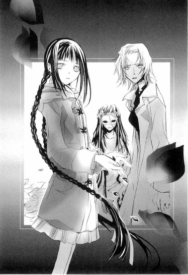
水のように澄んだ声で語りはじめる遠子先輩を、粧子さんが、毬谷先生が、琴吹さんが、息をのんで見つめる。
「この事件は、ガストン＝ルルーの『オペラ座の怪人』を思わせる状況ではじまるわ。
ルルーは一八六八年生まれのフランス人で、法律家や新聞記者として活躍したあと、三十代で作家に転身し、密室推理の名作といわれる『黄色い部屋の謎』などの作品を、次々発表していったの。同じ頃、フランスにはアルセーヌ・ルパンシリーズのモーリス＝ルブランがいて、ルルーは彼と並び称される人気作家だったのよ。
そんなルルーが、一九一〇年に発表したのが、オペラ座の地下にすむ仮面の男と、彼の暗い熱情に巻き込まれてゆく人々の姿を描いた『Le Fantome de l'Opera』──『オペラ座の怪人』よ。
水戸さんはこの物語が好きで、〝音楽の天使〟に会いたいと、以前から話していたわ。
そうして、ヒロインのクリスチーヌのように、さる人物に秘密のレッスンを受け、歌姫としての才能を開花させたのよ。
一方で水戸さんには、クリスチーヌの恋人である、ラウル的な立場の男性もいたわ。
聖条学園にいるというその人の名前や素性を、水戸さんは親友のななせちゃんにも明かさなかった。代わりに、彼に関わる三つのヒントを出したのよ」
遠子先輩が、ゆっくり指を立ててゆく。
「一、彼は九人家族。
二、彼はコーヒーが好き。
三、考え事をするとき、テーブルの周りを歩き回る癖がある──。
九人家族というのは、重大な決め手になるように思うわね？
けど、このヒントは、実際に恋人のことを指していたわけではないのよ」
前にも、そんなことを言っていた。水戸さんの彼氏は九人家族ではないと思うと──。
聴き入るぼくらに、遠子先輩が一冊の本の題名をあげる。
「『愛の一家』という児童文学があるわ。古い本で、日本では絶版になっているので、最近の人は知らないかもしれないけれど。本が出版されたのは一九〇六年。作者はアグネス＝ザッパー、ドイツの女流作家よ。五人の子供たちの母親だったザッパーは、その経験をもとに、父親と母親、それに七人の子供たちのあたたかな日常を綴った、ペフリング一家の物語を書いたのよ。
ここに登場する父親は、少し短気だけど、朗らかで誠実な、愛すべき人物として描かれているわ。彼はコーヒーが大好きだけど、一家が貧しいので、祭日にしか飲まないの。また、考え事をするとき、テーブルの周りをせかせか歩き回るので、下宿人のご婦人に注意を受けているわ──」
遠子先輩の声に、力がこもる。
「九人家族、コーヒーが好き、歩き回る癖──これは、すべて水戸さんが出したヒントと一致する。水戸さんは、外国の家庭小説をよく読んでいたそうなので、この本もきっと知っていたに違いないわ。では、水戸さんは、このヒントからなにを伝えようとしたのか？ペフリング一家の父親の職業は、音楽教師なのよ」
聡明な瞳が、まっすぐに毬谷先生を見つめる。
「水戸さんが、彼氏の名前を秘密にしていたのは、彼が生徒ではなく教師だったからよ。いくら別の学校でも、教師と高校生の恋愛が噂になったら、彼に迷惑がかかると思ったんだわ。聖条学園に男性の音楽教師は、毬谷先生──あなたしかいません。つまり、あなたが水戸さんのラウルなんです」
空気が、冷たく張りつめる。
毬谷先生は、水戸さんの天使ではなく、恋人だったのだ！
粧子さんは目を見開き、愕然としており、琴吹さんは真っ青な顔で震えている。
毬谷先生が苛立たしげに目を光らせ、言った。その声にいつものやわらかさはなく、口調もぞんざいだった。
「確かに──きみの言うとおり、水戸夕歌とつきあっていた。けど最近は会っていないし、向こうも連絡してこない。他に好きな男でもできたんじゃないか？たとえば夕歌がレッスンを受けていた〝天使〟とか──。たまに会っても、夕歌は、そいつの話ばかりだった」
黒々とした不安が、胸をじわじわと締め上げる。
何故、先生はこんなに冷ややかな目で、恋人のことを語っているんだ。まるで憎むべきもの、唾棄すべきものを語るように。
音楽準備室で、ぼくらに優しく笑いかけてくれた先生と、まるで別人じゃないか！
遠子先輩が、問いかける。
「だから先生は、天使に嫉妬したんですか？ラウルが、クリスチーヌと音楽の天使の結びつきに不安を覚え、激しく身を焦がしたように......。
水戸さんが、恋人から夜のバイトを辞めるように言われて悩んでいたことや、彼から頻繁に電話がかかってきたことは、ななせちゃんが証言しています。
先生は、水戸さんが天使に惹かれてゆくのが、心配でたまらなかったんじゃないですか？彼女が自分の前で、別の人のことを語るのが、許せなかったんじゃないですか？」
「いい加減にしてくれっ！ 憶測でものを言うのはよしてもらおうか！」
空気を裂くような鋭い叫びに、ぼくは、びくっと震えた。
毬谷先生は、殺したそうな目で、遠子先輩を睨みつけていた。その視線を真っ向から受け止め、遠子先輩が、先生に負けないくらい強い声で言い返す。
「ええ、わたしはただの〝文学少女〟よ！ 警察でも探偵でもないし、わたしが語ることは、全部〝想像〟にすぎないわ。けれど、水戸さんが失踪したあとの先生の行動は、不自然に思うんです。それほど執着していた恋人が、突然いなくなってしまったのに、何故、表立って彼女を捜すことをしないのか？何故、ななせちゃんに資料の整理を頼んだのか？何故、発表会のチケットをわざと見せたりしたのか？
それに、一年生の女の子とホテルへ行ったことも、彼女を置いて先に帰ってしまったことも、なにかを捜すように、部屋の中を歩き回っていたことも、テーブルをじっと睨みつけていたことも──」
杉野さんのことを、遠子先輩が口にしたとたん、先生の顔に衝撃が走るのを、ぼくは見た。
遠子先輩が、執拗に問いかける。
「先生は何故、そんなに、テーブルをじっと見ていたんですか？それを見ながら、なにを思い出していたんですか？」
まさかという思いに、体の芯が震え出す。
暗い闇が、背中から、ひたひたと迫ってくる。
「ねぇ、先生は、どうしても部屋へ行って、確かめなければならないことが、あったんじゃないですか？失踪した日、水戸さんは急なバイトが入って出かけなければならないと、ななせちゃんにメールを送ったそうです。そのバイトは、お金をもらって男の人とおつきあいをすること──援助交際でした。
先生は、水戸さんの浮気を疑って監視するうちに、水戸さんの秘密を知ってしまったんじゃないですか？そして、あの日ホテルで、お客さんとして水戸さんに会い、水戸さんのラウルであったあなたは、嫉妬と怒りからファントムに変貌し、水戸さんの頭をテーブルに叩きつけた」
「違うっ！」
毬谷先生の声が、遠子先輩の言葉を断ち切る。先生の顔はゆがみ、手足はぶるぶると震え、血走った目の中で、混乱と激情がめまぐるしく交錯していた。
闇が──闇が、空気の色を変えてゆく。
「あれは、夕歌が勝手に倒れたんだっ！ 私が歌をやめるように言っても、夕歌はきかなかった。あんな卑しい真似までして、どうして音楽なんか続ける必要がある！
なのに夕歌は泣きながら、もう自分には歌しかないと答えたんだ。天使が待っているからレッスンに行かなければと言って、私に背中を向けて、部屋から出て行こうとしたんだ！」
ぼくは愕然としていた。
先生は自分がなにを叫んだのか、気づいていないようだった。理性のタガがはずれたように、わめき続ける。
「私はカッとし、夕歌の首を絞めた。そうやってもみあっているうちに、夕歌が足を滑らせて、テーブルの端で頭を打ってしまったんだ。夕歌は血を流し、床に倒れたまま、動かなくなった。私は驚いて、夕歌を残してホテルを飛び出したんだ」
ガシャンという音がして、粧子さんの手からハサミが落ちた。粧子さんは叫びをこらえるように、両手を口にあてている。
琴吹さんも真っ青な顔で、棚の端にしがみついている。
ぼくも信じられなかったし、信じたくなかった。毬谷先生が、水戸さんに、そんなことをしたなんて！
混乱するぼくらの目の前で、毬谷先生は変貌を続ける。仮面の下から嫉妬と狂気に醜くゆがんだ素顔が現れ、甘く軽やかだった声は、ひきがえるのように聞き苦しく割れた。
「翌日になっても、ホテルで死体が見つかったというニュースは、流れなかった。夕歌の携帯に電話してもつながらないので、家族のふりをして学校に問い合わせてみると、授業を無断欠席していて、寮にも帰ってないという。私は、おかしくなりそうだった。夕歌は、どこへ行ってしまったんだ？生きているのか？死んでいるのか？」
そんなとき、〝椿〟の名前で、発表会のチケットが送られてきたのだ──。
そのときの先生の驚きが、ひび割れた声から、痛いほどに伝わってくる。
先生が琴吹さんを、資料の整理をする名目でそばに置いたのは、琴吹さんが水戸さんの親友と知っていて、水戸さんから連絡があるのではないかと疑い、監視するためだった。発表会のチケットを見せたのも、琴吹さんがどう反応するか試したのだ。
おだやかな表情の裏側で、先生は、焦り、もがき、苦悩しながら、ぼくらの言動を細かく観察していたのだ。
毬谷先生は、ラウルであり、ファントムだった！
乱れ、震える声で、先生が言葉を続ける。
「携帯やパソコンに、椿の名前で、〝人殺し〟〝堕天使〟と何通もメールが届いた。なのに、本人は私の前に現れない。じわじわとなぶられている気分だった。きっと、天使が夕歌を操っているんだ。天使が、夕歌をあの場所から連れ去ったんだ。
そうだ、全部──全部、天使が悪いんだ！
夕歌が天使に惹かれたりしなければ──私を裏切ったりしなければ──。
私は夕歌を、天使から助けたかったんだ！ なのに、間に合わなかった。夕歌は、天使に、地下の王国に引きずり込まれてしまったんだ！」
瞳孔を開いたまま叫ぶ姿に、胸が裂けそうになる。
きっと、毬谷先生は、水戸さんを傷つけるつもりなんてなかったんだ。
先生が憎んでいたのは、水戸さんではなく、水戸さんの心を奪った天使だった。
水戸さんの両親が心中したことも、先生は知らなかったのだろう。借金のことすら聞いていなかったのかもしれない。
だから、先生には、水戸さんの気持ちがわからなかった。
援助交際をしてまで、音楽を続けようとする水戸さんが理解できず、水戸さんが変わってしまったことを、天使のせいにし、天使を憎んだのだ。
杉野さんとホテルへ行ったのも、水戸さんを置き去りにしたことを後梅して、ただ水戸さんの生死を確認したかっただけなんじゃないか。
先生は先生なりに、水戸さんを救おうとしていたんじゃないか。だから、テーブルを睨みつけ、険しい声でつぶやいたのだ。
間に合わなかったと──。
そうだ、先生は悪い人じゃないし、堕天使なんかじゃない。先生は──先生は──。
そのとき、冷ややかな声が響いた。
「裏切ったのは、あたしではなくあなたでしょう？敬一さん」
高く澄んだ、少女の声。
千切れた衣装を身にまとい、壁際に立ち、氷のように美しい声を紡いでいたのは、仮面の少年だった。
「夕歌......っ」
琴吹さんが、顔をこわばらせてつぶやく。粧子さんも、化け物でも見る目で、彼の口元を見つめている。
遠子先輩は唇をぎゅっと結び、険しい顔で立ちつくし、ぼくは、頬を冷たい手で撫でられたような気がした。
その声は、前に携帯で聞いた水戸さんの声と、そっくりだった。
変声期を過ぎた少年のものではありえない、高く澄んだ、少女の声──。
「！」
毬谷先生が、声にならない恐怖の叫びを発するように、顔を大きくゆがめる。
殺戮の姫トゥーランドットの中に、祖先の姫がよみがえったように、この瞬間、水戸さんの魂が彼に乗り移り、水戸さんの声で、毬谷先生に語りかけているようだった。
「あなたが、あたしを殺したのよ、あたしの体は、冷たい土の下で腐りかけているわ」
全身を、冷たい戦慄が駆け抜けてゆく。
一体、なにが起こっているんだ。これは現実なのか？
「嘘だっ！」
毬谷先生が、汗をだらだらこぼしながらわめく。
「死体は、ホテルにはなかった！ 夕歌は死んでなんかいない。生きて、天使のところにいるんだ！」
少女の声が、尖った氷柱のように、冷たく響く。
「敬一さん、あなたは、いつもそうね。そうやって自分を正当化して、綺麗なままでいようとするのね。あのときも、あなたはあたしを穢れた女と責めて、殺そうとした」
「違う......っ」
「違わないわ」声が、冷然と告げる。「あたしの首を絞めるあなたの目は、誇りを傷つけられた殺意と憎しみで、刃物みたいに光っていた。そう、ちょうど今のあなたのように」
「！」
「倒れて動かなくなったあたしを置いて、あなたが逃げ出したあと、目を覚ましたあたしが、床にこぼれた血を、どんな気持ちで拭き取ったか......自分の保身ばかり考えているあなたには、到底わからないでしょうね。
あたしがどんな気持ちで、ひっそりホテルから出ていったかも。
冷たい風に吹かれながら、夜道を歩いていったのかも......。
次の朝、眠ったまま息を引き取ったあたしが、なにを思いながら逝ったのかも......。
あたしの死因は、頭部の打撲だったわ。
これでもあなたは、あたしを殺してないと言い張るの？」
毬谷先生が唇をわななかせ、喉の奥からくぐもった声を絞り出す。けれど、それは言葉にはならなかった。
琴吹さんは、親友の声で、その死を語る少年を、恐怖と混乱の眼差しで見つめている。
彼が言ったことは、本当なのか？
水戸さんは、毬谷先生とホテルで会った翌朝、息を引き取ったのか？
喉が震え、頭の芯が痺れるように熱くなる。
もし、そうなら、琴吹さんはどうなるんだ？水戸さんがクリスマスに帰ってくるのを信じて、待っていたのに！
仮面の少年が、細い手をゆっくりと持ち上げ、毬谷先生を指し示す。
男たちの罪を許さないと歌うトゥーランドットのように、高く澄んだ声で、冷酷に言い放つ。
「あなたは傲慢なルシファーよ。あなたの罪は、あたしを殺したことだけじゃない。
敬一さん、あなたは、あたしに、間違った歌い方を教えて、喉を潰そうとしたわね？」
毬谷先生の顔に、これまでで一番強い衝撃が走った。
ぼくらも、驚いて息をのむ。
先生が、水戸さんの喉を潰そうとしただって！そんな、そんなことって──。
「違うっ。私は──」
怯えきった目をして後ずさる先生を、白い仮面の向こうから、ナイフのような鋭い視線が貫く。抑えされない憤りを感じさせる声が、容赦なく先生を責め立て、糾弾する。
「あなたは、天使とあたしの仲に嫉妬しただけじゃない！あたしの才能にも嫉妬していたっ！それを開花させた天使とあたしが憎らしくてたまらなくて、殺してしまったのよ！」
先生が、顔を振り上げる。
「そんなんじゃない！ 私は、夕歌が歌にのめり込んでゆくのが嫌だったんだ。
夕歌は確かにいい声を持っていた。けれど、そんな人間、あの世界に掃いて捨てるほどいるし、運良く成功したとしても、どうせ一時のものにすぎない。すぐにまた失って、胸を切り裂かれそうな絶望を味わうことになるに決まっている。私もそうだった！」
血を吐くような絶叫。
震えながら語る先生の表情も、激しい痛みと苦悩にあふれていた。
「子供の頃、天使と呼ばれ、天才だとちやほやされてきた。なのに変声期がきて、大人の声に変わったとたん、技巧は優れているが、なにかが足りない、子供の頃のきらめきがなくなったなんて、勝手なことを言われた。
それでも私は、血の滲むような努力をしてきたんだっ！いつか、失われた声以上に素晴らしい声を得ることができると信じて──。
そんなとき、留学先のパリで、本物の天使の歌を聴いてしまった」
どういうことだ？ 先生以外にも、天使と呼ばれていた歌手がいたのか？それに本物の天使って？
先生が、大きく顔をゆがめる。
「あの声......っ。変声期を迎えた男性には、絶対に出せない、光の玉を自在に転がすような清らかな声──。私が失った高く澄んだ声──。
あの声を──歌を、聴いたとたん、気づいてしまった。私が欲しかったのは、失われたソプラノだと。テノールなんて、私にとっては、紛い物にすぎないのだと」
粧子さんが、悲鳴のような声で叫んだ。
「そんなっ！ あなたのテノールは、甘くて透明で素晴らしかったわ！コンクールにも入賞したし、プロでだって活躍できたわ。みんなが、あなたをうらやんでいたのよ！」
体を売りながら学費を稼ぎ、それでも歌手として成功することは叶わず、教え子を堕落させることで復讐してきた粧子さんにとって、毬谷先生の話は、取り乱さずにいられないほど、衝撃だったのだろう。
きっと粧子さんにとっては、毬谷先生こそが、自分が手の届かない高見に楽々と立つ、才能の象徴だったのだ。
「あんなつまらないテノールなんて、いくらでも捨ててやる。なんの価値もない！コンクールだって、せいぜい入賞止まりだ！もし、私に、昔のままのソプラノがあれば！あの頃のように歌えたら、いや──」
毬谷先生が苦しそうに眉根をぎゅっと寄せ、声を絞り出す。
「たとえ......私が少年でも、あんな風には──歌えなかった。紛い物なのは、私のテノールではなく、私自身だ。あの声を前にしたら、私は偽物の天使にすぎず、成人になった今では、二度とあの声を越えることもできない。これ以上ない、完璧な敗北だ。
それがわかったとき、断崖から突き落とされた気持ちだった。
なのに、あの美しい声を求めずにいられない！コンサートに通いつめて、幾度もあの声を聴き、そのたび絶望した。もう、許してほしかった。この世で一番憎んでいるものを、この世で最も愛さずにいられないという永劫の苦しみから、解放して欲しかった。
そんなとき──天使のコンサートで、老いた音楽家が、手首を切って亡くなったのだ」
その音楽家が、何故、その場所で死を選んだのか。
彼もまた、真の才能を目の当たりにし、絶望したのか。それとも、最後の瞬間に、美しいものに包まれたいと願ったのか。それは今もわかっていない。
けれど、その事件がきっかけになり、ＣＤで天使の賛美歌を聴きながら、自殺をする人間が続出した。天使のコンサートは中止になり、ＣＤも販売を自粛した。
そうして、天使は人々の前から姿を消してしまったのだと、先生は震えながら語った。
そんな先生を、ぼくは胸を抉られるような痛みとともに、見つめていた。
『芸術家を目指す人たちはね......みんなとても臆病で、自信がなくて、揺れやすいんですよ』
『才能があると褒めそやされながら、壁にぶち当たって、苦しんで、苦しんで、どうしようもなくなって......それでも諦められなくて、心を病んでゆく人たちを、大勢見てきました』
あれは、先生自身のことだったのか──！
毬谷先生が、腕の時計を、ぶるぶると震えながらはずす。そこには、刃物で切った痕があった。
先生もまた、天使の賛美歌を聴きながら、自殺を試みたのだ。けれど死にきれず、それまでの生活をすべて捨て、誰にも告げず、旅に出たのだ。
「......っ、天使のことを、忘れたかったんですよ。なのに、パリからどれだけ遠く離れても、あの、きらめくような歌声が、耳の奥で鳴り響いて、離れませんでした。あの声がどこまでも追ってくる。はじめてあの歌を聴いたときから、きっと呪われていたんです。あれは、天使ではない。人を破滅に導くファントムの歌声です。日本へ戻ってきて、やっと──やっと、あの歌が聞こえなくなったと思ったのに──」
頭を抱え、うなだれ、弱々しい声で、先生がつぶやく。
「つきあいはじめたとき、夕歌は朗らかで優しい、平凡な少女だったんです。オペラ歌手を目指していたけれど、伸び悩んでいて、いつも迷いながら歌っていました。そんな、私と同じ、天才でもなんでもない、ただの人間の夕歌こそが、愛しかったんです。
なのに夕歌は天使に会って、変わってしまいました。私の言葉より、天使の言葉を信じ、歌い方を変えた。
あの歌を聴いたとき、ぞっとして、吐き気がしました。
夕歌の歌い方は、天使の歌にそっくりだった。
どうして！ 私がなにをしたというんです？何故、天使は私を追いかけてくるんです？私から、大事なものを奪ってゆくんですか？私は夕歌を、天使から引き離そうとした。けれど、間に合わなかった──」
突然、〝水戸さん〟が、興奮した声で叫び出した。
「そんなの、ただの言い訳よっっっ！ あなたがあたしの首を絞めて、一人で逃げ出した事実は変わらないわ！あなたが、あたしを殺した！あなたがあたしを殺した！あなたが、あたしを殺したっっっ！！！！」
先生が耳をふさぎ頭を振る。凍えるような声が、永遠に続く呪いの言葉を繰り返す。
あなたが、殺した、
あなたが、殺した、
あなたが、殺した、
まるで、美羽がこの場に現れ、ぼくに指を突きつけ責めているように、このときぼくは錯覚した。
あなたが、あたしを殺したのよ、コノハ！
胸に激痛が走る。どす黒い渦に飲み込まれ、押し潰されそうな恐怖に、ぼくはたまらず叫んだ。
「やめてくれっ！ 毬谷先生は、水戸さんを殺すつもりなんてなかった。水戸さんと、おだやかに、暮らしたいだけだったんだ。先生は、本当の悪人じゃない。ぼくらと同じ、弱くて平凡な人間だ──」
どうか、先生を許してほしい。
これ以上、先生を追いつめ、責めないでほしい。
哀願のようなその言葉は、先生への弁護ではなく、ぼく自身への弁解だった。
ぼくだって、美羽を傷つけようなんて、かけらも思っていなかった。美羽の嫌がることなんて、なにひとつしたくなかった。
あんな冷たい目で、美羽に睨まれ、無視され、「コノハにはわからない」と、突き放されるような──そんな生きたまま手足をもぎとられるに等しい罰を受けるような大罪を、犯したくて犯したわけじゃない！
自分の弱さや狡さに、目の前が真っ暗になるような絶望を覚えながらも、ぼくは自分の心を保つのに精一杯だった。
琴吹さんが隣にいるのに！
ずっと青ざめ、震えていたのに！
親友を手にかけた相手を、醜い自己弁護のために庇うなんて！ぼくは最低だ、最低だっ。
そのとき、毬谷先生が低い声で唸った。
「勝手なことを言うな。きみに、なにがわかるんだっ」
頬を打たれたように、ぼくは押し黙った。
毬谷先生は屈辱に頬を染め、憎しみに燃える目でぼくを睨んでいた。
「私は、平凡でおだやかな生活なんて、これっぽっちも望んでいなかった。平和な日常に勝るものはないなんて、凡人の負け惜しみだ。......っ、それでも、そう思い込むしかなかった。その悔しさが、惨めさが、きみのような気楽な高校生に、わかるものかっ！」
ぼくと、琴吹さんと、先生と──三人で過ごした、あたたかな日常が──。
おだやかな空間が──。
大切だった時間が、記憶が、音を立てて崩壊してゆく。
シナモンの香りのするやわらかな湯気の向こうで、満足そうに目を細めて笑う先生。
とろりとしたチャイのように、甘い言葉。
『好きな人と一緒にゆっくり過ごす時間を、なによりも大切にしたかったんですよ』
『自分の選択を後悔はしていませんし、断言します。一杯のチャイがあれば、人生は素晴らしいし、平凡な日常は何物にも勝ると』
心の中が空っぽになり、体から力が抜け落ちてゆく。
ぼくにくれた、あの言葉は、全部嘘だったのか？先生の口から吐き出される醜い言葉、それが先生の真実なのか？
なににもとらわれない自由さや。やわらかな微笑みに、憧れていたのに......。
「私は金持ちで善良な、脇役のラウルになんかなりたくなかった！たとえ化け物と罵られても、才能あふれるファントムになりたかった！人を傷つけ、殺すことでファントムになれるなら、いくらでもそうしただろう！なのに、夕歌を殺しても、私はファントムの仮面を被ったラウルのままだ！」
これが、真実？
これが、本当のこと？
なんて痛い。なんて醜い。なんて自分勝手な──！
愛も信頼も、なんて脆い──！
遠子先輩が、哀しげな瞳で訴える。
「ラウルは脇役ではないわ。誠実にクリスチーヌを想い続け、彼女を救い出した、物語の主人公よ。『オペラ座の怪人』は、ラウルがいなければ成り立たない。ラウルという光があって、はじめてファントムという闇が際立つのよ」
「そんなの詭弁だ......！ 一体、誰が、あの育ちがいいだけの、間抜けなラウルのことを気にするのか。ラウルなんて、見た目ばかりが綺麗な、張りぼての凡人だ。真の天才の前では、誰も振り向きもしない、憐れな紛い物だ！」
絶望と狂気が、先生の全身から吐き出される。目が獣のように光り、激しく吠え、唸り、身悶え、また咆哮する。
「わからないっ。私の気持ちは、わからないっ！誰にもわからないっっっ！」
『コノハには、きっと、わからないだろうね』
さっきまでぼくを責めていた美羽の幻影は、毬谷先生の上に重なり、棘だらけの言葉を吐き散らしていた。
「きみたちには、なにひとつわからないっ！ 夕歌があんな風に歌わなければ──あの歌声を思い出させなければ、私は私を騙しながら生きられたかもしれないのに。
天使が、ファントムが壊した！ すべてを奪った！私はファントムを憎む！ファントムを許さないっ！」
もう誰の声も、先生には聞こえない。
〝文学少女〟の言葉も、届かない。
仮面の少年に指を突きつけ、先生が絶叫する。
「おまえも、おまえに心を許した夕歌も、死んでしまえ！おまえたちこそ、呪われろ！」
恨みの言葉が、世界を闇に染める。
黒い渦巻きのような絶望が、ぼくの心をかき乱し、頭をガンガンと叩く。
そうだ。ぼくにはわからない。先生の気持ちも、美羽の気持ちも、ぼくにはわからない！わからない！わからない！
先生がくれたあの言葉は、特別な言葉だったのに。先生みたいになりたかったのに。
やっぱり、本当のことなんて知らないほうが良かったんじゃないか！
仮面の少年が、破けた衣装の裾を、するりと持ち上げ、足に巻いたベルトに差したナイフを、慣れきった手つきで引き抜くのを、ぼくは絵空事のように見つめていた。
誰でもいい。この絶望に満ちた物語を、一刻も早く終わらせてくれるなら......。
そのとき、琴吹さんがぼくの隣をすり抜け、毬谷先生のほうへ歩み寄った。
琴吹さんは、床に落とした青い薔薇の花束を、腕にしっかり抱えていた。
眉をきゅっと吊り上げ、唇を噛みしめ、怒りの表情で花束を振り上げ、それで毬谷先生の顔を、思いきり殴った。
「──！」
海のように真っ青な花びらが、はらはらとこぼれ、花束が音を立てて、床に落ちる。
その下から、頬に花びらをつけた、目を見開いた、茫然とした、毬谷先生の顔が現れた。
琴吹さんは両手を握りしめ、足を踏ん張り、震えている。
目の縁にいっぱい涙をためて、先生を睨みつけたが、その顔がたちまち崩れ、哀しみが、涙と一緒にあふれ出した。
「！」
先生の顔に、驚きが浮かんだ。
「ゆ、夕歌は、先生のことが、とっても......好きだったんだよ。この薔薇も、先生が誕生日に選んでくれた花だから......好きになったって、言ってた。わざわざ写真を撮って、あたしのとこに、メールで送ってきたんだよ。彼がくれた薔薇なのって......。何枚も何枚も......。先生は、夕歌のこと、好きじゃなかったのっ!?」
それは憎しみでも、怒りでも、呪詛でもない、親友を想う純粋な叫びだった。
青い薔薇が、幸せだった頃の記憶を、先生に思い起こさせたのだろうか......。
水戸さんに感じていた気持ちは憎しみだけではなく、その前に、確かに愛があったのだと。
先生の顔に、哀しみがゆっくりと浮かび上がってゆく。
狂気のままに、ラウルたちを殺そうとしたファントムは、クリスチーヌが自分のために涙を流してくれるのを見た瞬間、生まれてはじめて癒され、満たされた。
無私の愛情に支えられた歌姫の涙は、冷たい仮面の下にまで流れ込み、ファントムの目の中で、彼の涙と混じりあい、恐ろしい怪物だった彼の魂を震わせた。
──可哀そうで不幸なエリック。
ファントムと名乗るしかなかった一人の憐れな男を、歌姫の言葉が救ったのだ。
それと同じように、琴吹さんの涙は、先生の中のやわらかな部分に、ふれたのかもしれない。
毬谷先生が、ゆっくりと床にくずおれる。
チリン......という音がし、床に銀色の指輪が転がった。
先生がハッとし、指輪を凝視する。
仮面の少年が、感情を無理矢理押し殺したような低い声で、淡々とつぶやいた。
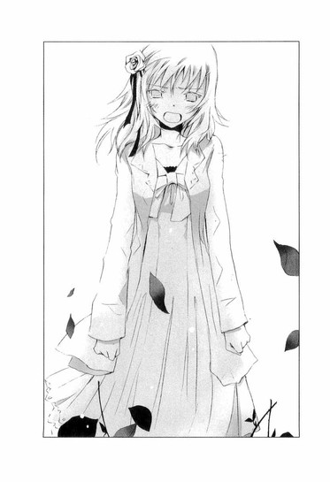
「......夕歌は最後まで、それを握りしめて、はなさなかった......」
指先を震わせて、先生が指輪を拾う。
それから、スーツのポケットから、もうひとつ──同じデザインの指輪を取り出した。
イブに、おそろいの指輪を交換したのだと、水戸さんは、嬉しそうにメールに綴っていた。
いつも身につけていようと約束したのだけど、彼は学校でつけているとからかわれるから、指からはずして隠していたのだと。
デートの前になると、急いで引っ張り出して、指にはめるのだと。
それを遠くからこっそり見ているのが、とても好きだと。
『それからね、哀しいことがあって、彼が手をぎゅっと握りしめて耐えているとき』
『その手にふれて、そっとほどいてあげるときね......。とても優しい、崇高な気持ちになって、ああ、彼のこと、愛してるなぁって思うの』
手のひらに乗せた二つの指輪を、先生が泣き出しそうな弱々しい眼差しで見つめる。
そうして、両手で強く握りしめた。
うつむき嗚咽する先生の手を、優しくほどいてくれる人は、もういない。
自分がなにを失ったのか、先生はようやく気づいたのだ。
神の祝福の意味を持つ、青い薔薇の花びらが、先生の周りに散らばっている。
先生がしたことは、許されることじゃない。
先生が口にした言葉も、取り消せない。
けれど、肩を震わせ、涙をこぼし続ける先生を見ていて、胸にあった暗い塊が、静かに溶けてゆくような気がした。
遠子先輩も、粧子さんも、哀しそうな顔をしている。
琴吹さんは手の甲で涙をぬぐいながら、子犬のようにすんすんとしゃくりあげている。
ぼくは、まだ自分にその資格があるのか迷いながら、胸が張り裂けそうになりながら──それでも、手をのばして琴吹さんを抱きしめた。
天使は、いつの間にか消えていた。
◇ ◇ ◇
たくさん泣かせてしまって、ゴメンね、ななせ。
それに、クリスマスの約束を守れそうにないことも......。
きっとこれが、ななせに送る最後のメールになると思う。
ななせは、あたしに助けられてばかりだったって言ってたけど、そんなことないよ。
あたしのほうこそ、いつもななせに元気をもらってたんだよ。
ななせは、昔から不器用でまっすぐで、嘘がつけない子だったね。男子に文句を言いに行く役を、よくクラスの女子に押しつけられて、貧乏くじばかりひいてたけど、そんなななせが、あたしはとても好きだったよ。
あの頃、ななせは、男子なんて嫌いだし、男子もあたしのことが嫌いだって言ってたけど、あたしはいつか、ななせの素敵なところをわかってくれる男の子が現れるって、確信してたんだよ。
だから、中二の冬に、ななせがもじもじしながらやって来て、真っ赤な顔で、「眉のそろえ方、教えて」って言ったときは、自分のことみたいに嬉しかった。
ななせが、好きな人のために女の子らしくなりたいと思ったことや、ななせが綺麗になる手助けをできることがね。
ななせはいつも、一生懸命、恋をしていたね。井上くんのことで、喜んだり、哀しんだり、うろたえたり、反省したりするななせを応援するのは、本当に楽しかったよ。
なんて可愛いんだろうって、いつも思ってた。ななせは可愛い。本当に可愛い、世界で一番可愛いって。
ななせの気持ちが、早く井上くんに伝わればいいって、ずっと願ってたんだよ。
あたしの彼氏とななせと井上くんの四人で、Ｗデートができたらいいねって、よく話してたね。そうするとななせは、照れてしまって可愛かった。四人のデートが実現できなかったのは残念だけど、ななせの恋はきっと叶うって、あたしはこれからも信じているし、祈っているよ。
夕歌を帰してあげられなくて、ゴメンね。けれど、今、夕歌は、おだやかで幸せな気持ちで、大好きな歌をいっぱいうたっているから、心配しないで。
ななせのこと、この先もずっと親友だと思っている。
ななせの幸せを、心から願っているよ。
もし、ななせに哀しいことがあったときは、あたしからななせに送った魔法の呪文を思い出してね。
ななせは可愛い。本当に可愛い。世界でいっっっちばん可愛い。
八章 ◎ じゃあ、行くね
週明けの月曜日。閉室時間を少し過ぎた頃、ぼくは遠子先輩と、図書室を訪れた。
部屋は、寂しげな暗い夕日に染まっていた。
カウンターの中は空っぽで、閲覧コーナーにも人影はない。耳をすますと、キィボードを叩くカチャカチャ......という音が、かすかに聞こえた。
部屋の片隅にあるパソコンコーナーへ行ってみる。
すると臣くんが、夕日を頬に浴びて、慣れた様子でキィを叩いていた。
眼鏡が光っていて、表情がよくわからない。
「臣くん......」
そっと声をかけると、キィを叩く手を止めて、ぼくらのほうを見た。
その顔はとても静かで、落ち着いていた。ぼくらが会いに来ることを予測していたみたいだった。
「水戸さんは、どこにいるの？ きみは、知っているんだろう？」
「三分、待って」
臣くんは低い声でつぶやき、またキィを叩きはじめ、最後にエンターキィを押した。
そうして、パソコンの電源を落として立ち上がり、眼鏡をはずした。
「ちょっと遠いけど、いいかな」
電車を降りたところで、メールを打つ。そこからだいぶ歩いて辿り着いたのは、人気のない草むらに建つ古い工場だった。今は閉鎖され、使われていないのだと、臣くんが背中を向けたまま淡々と説明する。ぼくはそこでまた、メールを打った。
雑草が生い茂る敷地には、ぼくらの背丈ほどのクリスマスツリーが一本だけあって、月の光に照らされていた。
──きみは今、どこにいるんだ。
──クリスマスツリーの中。そこがあたしの家なの。
携帯での会話を思い出し、軋むような切なさが、胸の奥に広がってゆく。
臣くんはツリーの前で立ち止まると、草の上にかがみ込み、そこに投げ出された電源にパチリとスイッチを入れた。すると、ツリーに飾られた星や、教会や、天使の羽根が、明るく輝いた。
「その下に......水戸さんが眠っているのね」
遠子先輩が、哀しみのにじむ声でつぶやく。
臣くんはうつむいたまま、乾いた声で答えた。
「夕歌はクリスマスツリーが好きだった。オレがここへツリーを運んできたときも、とてもはしゃいでいた。この飾りは全部、夕歌がつけたんだ」
クリスマスツリーに住みたいと言っていた水戸さんの望みを、臣くんは、最後に叶えてあげたのだろう。
淡々と語る彼の声は、学園にいるときの、くぐもった低い声とも、ホールで聴いた圧倒的な高音とも、電話で話したときの凜とした少女の声とも違っていて、女性のアルトに近い、中性的な不思議な声だった。
一体、いくつの声を、彼は持っているのだろう。
夕べ、自宅のパソコンで、昔、パリで、〝天使〟と呼ばれていた少年のことを調べた。
年齢、出生、経歴、すべてが謎に包まれた、東洋人の少年は、数年前、教会の合唱団で歌っていたところをスカウトされ、たちまち人気者になった。
輝くような声で奏でられる賛美歌は、神聖な響きに満ち、人々を天上の楽園へ誘う天使のようであると、誰もが絶賛し、心酔した。
変声期を過ぎても高く透明なその声に、聴衆はただただ驚嘆し、天使は男装の少女ではないかと噂する人もいた。
無性の天使──。
いつか彼は、そう呼ばれるようになった。
麻貴先輩が話していたのは、毬谷先生ではなく、臣くんのことだったのだ。きっとわざと紛らわしい言い方をしたのだろう。芸術の世界は、ときどきとんでもない化け物を生み出すと、麻貴先輩は言っていた。天使は、まさにそんな存在だった。
男性でありながら、生まれながらに女性の声域を持つ歌い手をソプラニスタと呼び、裏声を使い女性の声域を出す男性歌手をカウンターテナーと呼び、少年期のソプラノを保つため去勢を施した男性歌手を、カストラートと呼ぶ。
天使が、はたしてどれであったのかは、わからない。
けれど彼は、ぼくらの前で奇跡のような歌声を響かせ、水戸さんの声を模写することまで、してのけた。
よく聴けば、その声は水戸さんの声とは違っていたと、あとで琴吹さんが言っていた。
話す速度や、ちょっとした癖をうまくつかんでいたこと、それにあの場の雰囲気が、まるで水戸さん自身がしゃべっているように、錯覚させたのだと思うと。
ぼくが路地裏で聴いた何人もの笑い声、きっとあれも、彼の悪戯だったのだろう。
一年の華々しい活動ののち、コンサートで自殺者を出し、天使は人々の前から忽然と姿を消した。
天使の歌は、人を死へ導く破滅の歌──。そんな風評が流れ、天使の名は穢れた。
それでも、その歌声を聴きたいと願う人たちは多かったが、天使が舞台に戻ることはなかった。やはりあれは少女だったのだという人も、熱狂的なファンに連れ去られたのだという人も、遅れて来た変声期が、その澄んだ歌声を奪ったのだという人もいた。
真実は、数年を経た今も明かされていない。
今、ぼくらの前で、孤独な眼差しでクリスマスツリーを見つめる彼は、眼鏡で素顔を隠した平凡な高校一年生の男の子とは別人のように、幻想的な雰囲気を漂わせている。
本当は何歳なのだろう......。うつむいた横顔は意外なほど整っていて、少年のようにも少女のようにも、大人のようにも子供のようにも見えた。
時を超えた、無性にして、無垢なるもの──そう、まるで天使のような......。
「ここで、いつも夕歌とレッスンをしていた」
感情を押し殺した、硬い厳しい声で、臣くんが語る。
「......はじめは、関わるつもりはなかったんだ」
まるで自分自身に腹を立てているように、小さく舌打ちする。
出会った夜、水戸さんは、ヒールが片方折れたサンダルに、破れた服という出で立ちで、右の頬を赤く腫らし、この場所で泣きながら歌っていた。
ひどい客にあたったようで、車から放り出されたらしい。
哀しみに飲み込まれまいとするように、明るく幸せな歌を歌いながら、堪えきれず声をつまらせ、頬にこぼれる涙を、手の甲で幾度もぬぐいながら歌い続ける少女を、はじめは隠れて見ていた。けれど、彼女がいつまでも歌うのをやめないので、声をかけずにいられなかったのだと。
『そんな風に歌ってはダメだ。それじゃ喉が、いかれてしまう』
草の香りのたちこめる夏。
月明かりに照らされて、ふいに現れた彼を見て、水戸さんはひどく驚いた顔をしていたという。
途切れた歌を、彼が続けて歌うと、水戸さんは目を見張って聴き入った。
そうして、自分も彼の声にあわせて、歌いはじめたのだった。
時折、彼が水戸さんに短いアドバイスをしながら、二人の合唱はずいぶん長い時間続いた。水戸さんの声は、彼の声に引き上げられるようにして、どんどん伸びてゆき、輝くような笑みが、水戸さんの顔いっぱいに広がった。
彼も、楽しかった。
人前で歌うことを封印してきた彼は、誰かと声をあわせて歌うことなんて、本当に久しぶりだったのだ。自分の声が、別の誰かの声と重なり合い一つに溶けあってゆくのが、嬉しくて楽しくて、いつまでも歌っていたい気分だった。
朝が来ると、彼は水戸さんに服を用意し、名前を告げることも、約束をすることもなく去った。
他人と交流を持つつもりは彼にはなかったし、なんの期待もしたくなかった。
なのに水戸さんは、次の夜も、また次の夜も、その次の夜も、彼のもとへやってきて、レッスンをしてほしいと頼んだのだ。
彼が名前を教えないと、『じゃあ、〝天使〟と呼ぶからいいわ。〝オペラ座の怪人〟の、音楽の天使のことよ。それが嫌なら名前を教えて』と、笑いながら言った。
彼は意地を張って名乗らずにいたので、〝天使〟が、彼の名前になった。
そう呼ばれるのは苦痛でしかなかったはずなのに、水戸さんに澄んだ声で『天使』と呼ばれるのは、心地がよかった。
根負けした彼の指導を受けて、水戸さんの声はどんどん変わっていった。技術的な面よりも、心が解放されたことが大きかったのかもしれない。
歌っているとき、水戸さんはいつも楽しそうで、生き生きしていた。
水戸さんは、彼にいろんな話をした。
親友の琴吹さんのこと、恋人の毬谷先生のこと、好きな本のこと、将来の夢のこと──楽しいことばかりではなく、辛いことも、すべて彼に打ち明け、
『あたしは、椿姫のように道を踏み外してしまったのかな。いつかヴィオレッタみたいにすべてを失ってしまうのかな』
と、寂しそうにつぶやき、
『けど、仕方ないね。家には毎日借金取りの人たちが来るし、お父さんは会社にいられなくなっちゃったし、弟を高校に進学させたかったんだもん。あたしは、あたしにできることをするしかなかったんだから。......そう、仕方がないよ。今は歌えるだけで幸せ』
そう言って、笑っていた。
『敬一さんや、ななせを騙してるのは辛いけど、昼間のあたしは、これまでとなにも変わらない元のあたしなんだって、思っていたいんだ。夜のことは全部悪い夢で、目がさめているときのあたしが、本当のあたしなんだって』
そう言ったあとで、急に哀しそうな顔になり、
『けど最近は、夜のあたしが本当のあたしで、昼間のあたしが幻想なんじゃないかって気がするときがある』
と、つぶやいた。
「オレは、歌うことをやめた人間だけど......夕歌は、本当に歌が好きだった。とてもいい子で、才能もあったから、自分のように闇に身を潜めて、人から隠れて暮らすような生きかたはしてほしくなかった。日の当たる場所で成功してほしかった」
クリスマスツリーに灯るほのかな灯りを見つめ、水戸さんとの思い出を、静かに語り続ける臣くんの声にも、横顔にも、大切なものを失ってしまった人間の哀しみと孤独がにじんでいる。
長い間、一人でいた臣くんにとって、水戸さんは光とぬくもりをもたらしてくれた人だったのかもしれない。
そう、闇の中で、一本だけ輝く小さなクリスマスツリーのように。
水戸さんは、臣くんの希望だったのではないか。
二人がここで、どんな時間を過ごしたのか。どんな話をしたのか。それを想像すると、どうしようもなく胸が震え、まぶたと喉が焼けるように熱くなり、ひりひりと痛んだ。
遠子先輩も、ぼくと同じ想いを感じているのだろう。目をうるませ、哀しそうに唇を結んでいる。
水戸さんが、異様なほど歌にのめり込むきっかけになったのは、家族の死の知らせだった。過酷な現実を忘れようとするように、水戸さんは歌い、同時に、成功を強く求めるようになったという。
副理事長の堤を脅し、発表会で主役を勝ち取り、稽古に明け暮れた。祖先の姫の怨みをはらそうとするトゥーランドットを演じる水戸さんは、まるで自分に苦しみを与えた世界に対して絶叫しているように見え、臣くんは不安だった。
そんな中、悲劇は起きたのだ。
「......あの夜、夕歌はぼろぼろに傷ついて、ここへ現れた。首に、絞められた痕が紫に浮き上がっていて、頭にも怪我をしていた。客とトラブルがあったとしか、夕歌は話さなかったし、はじめは元気そうに見えた。けれど、だんだん様子がおかしくなって......翌朝、息を引き取ったんだ」
遠子先輩が、憂いを含んだ眼差しで臣くんを見つめ、つぶやく。
「それであなたは、水戸さんのお客さんたちに、椿の名前で、チケットを送ったのね？そうやって、あの場所へ犯人を導いたのね」
「......そんなことしなくても、夕歌の態度から......だいたい予想は、ついていたんだ」
臣くんの声が掠れ、痛みに堪えるように、手をぎゅっと握りしめた。
「夕歌が、誰かを庇うとしたら、あいつしか考えられなかったから......」
唇を噛み、じっと空を睨んでいる臣くんを見て、胸が裂けそうになる。
水戸さんの遺体をツリーの下に隠した臣くんは、毬谷先生の周辺を、細かく調べはじめた。先生の動向を見守りながら、込み上げてくる疑惑を、きっと幾度も否定したのだろう。どうか犯人は別の人間であってほしいと、必死に願ったのだろう。
なによりも水戸さんのために、毬谷先生が犯人とは信じたくはなかったのだろう。
けれど、彼の望みは、叶わなかった。
水戸さんは、最愛の人の手で殺されたのだ。そして、恋人を庇ったまま死んでいった。
「夕歌は亡くなったあとも指輪を離さなかったから、オレは夕歌の手首を切り落として、無理矢理、指輪を取り上げたんだ。復讐の誓いのために......」
感情を表に出すまいと、臣くんは必死に耐えているようだった。
遠子先輩が、優しい声で尋ねる。
「水戸さんの携帯から、ななせちゃんにメールを送り続けていたのは、ななせちゃんに、心配をかけたくなかったからね」
表情を見られまいとするように、臣くんが顔をそむける。
「急に連絡が途絶えて、ななせが夕歌の家へ訪ねてきたら困るから......」
後ろで、かさりと草を踏む音がした。
多分、琴吹さんだ。ぼくが送ったメールを読んだのだろう。駅から遠いので、タクシーを使うよう打っておいた。
今日、琴吹さんは熱を出して学校を休んだのだ。昼休みに電話をすると、ごめんなさいと謝っていた。熱も引いたので、明日はちゃんと登校するからと。
そっと振り返ると、建物の陰に、息を切らし頬を紅潮させた琴吹さんが、泣きそうな目をして立っていた。
臣くんは、気づかずに話を続けている。
「あのとき、ななせが毬谷の方へ歩き出していなかったら──夕歌の指輪を見て、毬谷が涙をこぼしていなかったら──きっと、毬谷の喉を切り裂いて殺していた。そんなこと夕歌は望んでないとわかっていても、やっていただろう。ななせが......止めてくれた」
あのときの真っ暗な絶望を、どうにもならない閉塞感を、ぼくもまた、灼けるような痛みとともに思い出す。
決して、わかりあうことのない、永遠の平行線。
傷つけあうためだけに、ぶつけあう言葉の礫。
あの絶望的な状況を覆したのは、琴吹さんのまっすぐな想いだった。
『ななせを、巻き込まないで』
『井上くん、あなたはななせだけ見てればいいの』
臣くんが唇を噛みしめ、うつむく。
水戸さんが大切にしていた親友を、彼もまた、守りたかったのだろう。
水戸さんのフリをし、電話をかけてきたのも、ぼくに厳しくあたったのも、琴吹さんを心配していたから......。きっとぼくが頼りなく見えて、苛立っていたのだろう。
臣くんが、ぎこちなく視線をあげ、不器用そうな硬い眼差しで、ぼくを見る。
「......偽善者って言ったの、悪かったな。......ななせを支えてくれて、ありがとう」
その言葉に、胸が震えた。
「支えてもらったのは、ぼくのほうだよ」
張りつめていた瞳が、少しだけ気弱になり、寂しそうな影が浮かぶ。
今のは別れの挨拶だったのだろうかと気づき、ぼくはハッとした。
「きみは、このあとどうするの？」
臣くんがまた急に厳しい顔になり、視線をすっとそらす。
「どこか別の場所へ行く。今までもずっと、そうやって旅を続けてきたから」
「学校は？」
「辞める。あそこにいたのは、〝契約〟を結んでいたからなんだ。それも終わったから」
遠子先輩が尋ねる。
「契約って......麻貴と？」
「それは答えられない」
毅然と言い捨てる彼が、いろんなことを諦め、絶望しているような気がして、胸が締めつけられて、ぼくは言った。
「どうして行かなきゃならないんだ？ ここにいちゃいけないのか？きみは自由なんだろう？だったら、この場所で、これまでどおり暮らせるんじゃないのか？」
「無理だ......。オレのマネージメントをしていた養父母が、今もオレを必死に捜させている。まだオレに、商品価値があると思っているんだろう。ひとつの場所に、長くとどまるのは、危険すぎる」
「なら、ずっと隠れながら生きていくの？ もう、みんなの前では歌わないの？」
ツリーの灯りに淡く照らされた孤独な横顔を、泣きそうな気持ちで、見つめる。
彼は、ぼくに似ていた。
輝かしい賞賛の中にありながら、突然に人々の前から姿を消した、少女の声を持つ少年。
一冊のベストセラーを出版して書くことをやめた、少女の名を持つ小説家だったぼく。
まるで自分の姿を見るようで、切なくなる。
臣くんは顔を上げ、暗く哀しそうな目でぼくを見た。
「井上ミウは、二作目を書くと思うか？」
心臓を貫かれたようだった。
ぼくは、二度と、小説は書かない。
作家にだけは、絶対にならない。
二年前、泣きながらそう誓った。
何故、臣くんがぼくの秘密を知っているのか、わからない。もしかしたら、ぼくのことも調べたのかもしれない。
けど、ぼくが胸に抱いている共感を、きみも感じてくれていたのだろうか。
ぼくらは似ていると。
だから逆に、ぼくに問いかけたのだろう。ミウは二作目を書くかと。
ぼくが答えられないことを、きっと彼はわかっていたのだろう。
そして、それが自分の答えだと、伝えたかったのだろう。
天使は、もう、歌わない。
「歌は、オレを幸せにはしてくれなかった」
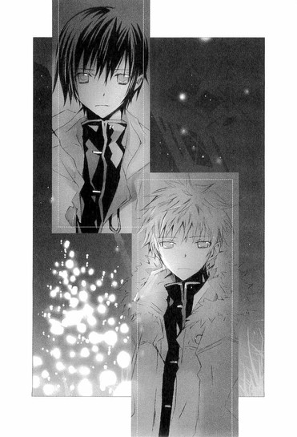
寂しそうにつぶやくその言葉に、心が切り裂かれる。
小説は、ぼくに災いをもたらしただけだった。ぼくは虚構の自分に苦しみ、美羽を失った。井上ミウという名前は、美しい名前のはずだったのに──いつか醜く穢れ、ぼくに痛みと後悔しか与えない名前になってしまった。
哀しみが、川面にたつ波紋のように、胸の底に広がってゆく。
口元に自嘲的な笑みを浮かべて、臣くんが言う。
「毬谷は、たとえ化け物でも、ファントムでありたかったと言っていた。けどオレは、ずっとラウルになりたかった」
それは、彼の心からの願いだったのだろう。
『オペラ座の怪人』の中で、ファントムも言っていた。もう、人並みでないことをするのは疲れたと。
──これからはわたしも人並みの生活をしたい。
──人並みに妻をもらって、日曜には一緒に散歩に出かけたいのだ。
──わたしは顔を世間並みにしてくれる仮面を作った。もうみんな振り返りもしないだろう。
華やかなオペラ座の地下に、自分だけの帝国を築き、そこで歌い、ピアノを弾き、曲を作りながら、醜いファントムは、昼の世界であたりまえに暮らすことを、夢見ていた。
誰も、彼の本当の名前を呼んでくれない、一人きりの暗闇の中で......。
この物語は、最後まで読まなければいけないと、遠子先輩は言った。
そうでなければ、物語の真実を知ることはできないからと。
哀しそうな表情で黙り込んでいた遠子先輩が、そのとき口を開いた。
「そうね。ラウルであることは、どんなに幸せで、素晴らしいことかと、わたしも思うわ」
臣くんが、遠子先輩を見つめる。
遠子先輩は、澄んだ眼差しで臣くんを見つめ返していた。吹きはじめた風が、長い三つ編みをかすかに揺らしている。
「『オペラ座の怪人』は、残酷なお伽話なの。醜い顔を仮面の下に隠した男が、不幸な境遇にある少女に恋をし、少女は彼の魔法で、お姫様に変身するわ。けれど少女が愛したのは、若く美しい王子だった。
クリスチーヌは、決してファントムを選ばない。
たとえそれが、醜くさえなければ、〝人類のなかで最も気高い一人となりえただろう〟人物であっても──素晴らしい才能を秘めた、同情すべき人物であっても──クリスチーヌは、最後に、ラウルを選ぶの」
切ない声が、冷たい風の中に散ってゆく。
臣くんは辛そうな表情で、遠子先輩の言葉を聞いている。
「『オペラ座の怪人』というのは、そういう物語なのよ。
けど──だからこそ、この物語は哀しみにあふれていて、美しいわ。
暗く退廃的な美に彩られたゴシック小説が、ファントムが見せた真実によって、最後の最後に、胸が震えるような、透明な物語に変わってゆく──。
まるで、ねっとりと舌にまとわりつく濃厚なフォアグラが、華奢なグラスに注がれた冷たいペリエによって、一瞬にして洗い流され、清められ、高められるように」
淡い月の光が、遠子先輩のほっそりした体や、小さな顔を、青く照らしている。
何故、遠子先輩は、こんなに哀しそうな目をしているのだろう。
まるで消えてしまいそうな幻に語りかけるように、眉を下げ、必死な眼差しで──。
「『オペラ座の怪人』は、ルルーの作品の中では、密室の名作と言われた『黄色い部屋の謎』ほどの評価は得られなかったわ。推理小説としては荒唐無稽で粗も多く、文学作品としては大衆的すぎるって。
けれど、ルルーはこの物語で、ファントムという忘れられない人物を、創り出したわ。
物語を読み終えたとき、多くの人たちは、ファントムの哀しみに胸を打たれ、彼が歩んできた道がどんなものであったのか、物語の中に残された手がかりを頼りに、考えずにいられない。そして、どんな形であれ、彼が救われるよう願ってしまうのよ。物語を読み終えたとき、ファントムは、現実に存在していた人間のように感じられるわ。
クリスチーヌは、ファントムを選ばない。
だけど、読者はファントムを忘れない。
ファントムの嘆きを、ファントムの生を、ファントムの愛を、忘れないわ。
仮面を取り払った醜いファントムをこそ、愛するわ」
うるんだ瞳で語り続ける遠子先輩は、すべてを失い、去ってゆこうとしている臣くんに、なにかを贈りたかったのかもしれない。
彼がこの先、独りで寂しくなったときに、心をあたためてくれる、小さな灯りのような言葉を──。
時間が許す限り、精一杯、思いを込めて──。
「ねぇ、本当にたくさんの人たちが、『オペラ座の怪人』を読み、ファントムを愛してきたのよ！これまで、この本を題材にした映画や舞台や、二次創作が、数えきれないほど作られたわ。ファントムに対して様々な考察がされて、中には仮面をつけていない金髪美青年のファントムまでいるわ。
『ジャッカルの日』で有名な、イギリスの人気作家フレデリック＝フォーサイスは、『マンハッタンの怪人』の中で、アメリカに渡ったファントムの、その後の物語を書いたし、女流作家のスーザン＝ケイは、原作でほんのわずかしか語られなかったファントムの生い立ちや、オペラ座に住み着くまでの経緯を、細やかな愛情と豊かな想像力で、あざやかに描き出したわ。彼女の著作『ファントム』は、ぜひ読んでほしい傑作よ。
一冊の本から生まれたファントムという人物が、新しい命を得て、世界に広がり、新しい読者が生まれ、想像が生まれ、また別の物語が生まれていったの。みんなの想像が、ファントムをよみがえらせたのよ。
それほどファントムは愛されているし、これからだって愛され続けるわ。ファントムにも、この物語にも、それだけの魅力がある。でもね──」
遠子先輩がきゅっと手を握りしめ、眉を下げ、力を込めて叫ぶ。
「それは、『オペラ座の怪人』を最後まで読まなければ、わからないのよっ！」
臣くんは、遠子先輩の勢いに目を見張った。
風が、ざわざわと草木を揺らす。
遠子先輩は、切羽詰まった泣きそうな顔をしていた。澄んだ声が、静かで切ない音楽のように流れてゆく。
「わたしは本が大好きで、本を読むことで、たくさんの幸せをもらったし、慰められたし、癒されたわ。
どんな物語も、わたしは必ず最後まで読んで、味わうわ。けど、たまに思うの。この物語が、ここで突然、終わってしまったら、どうなってしまうのかしらって。
例えば、作者が、書くことをやめてしまったらって──。
それを想像すると、哀しくて、苦しくて、胸が潰れそうになるのよ。
もし、ガストン＝ルルーが、『オペラ座の怪人』を途中で終わらせていたら、ファントムは醜い怪物のままだったわ。ラウルもクリスチーヌも救われない」
戸惑う臣くんを、黒く濡れた瞳でじっと見上げると、遠子先輩は、祈るようにつぶやいた。
「あなたも、あなたの物語を、書き続けて。
それを、あなたの歌を待っている人たちに、読ませてあげて」
「！」
臣くんが息をのむ。
遠子先輩が、熱のこもった真剣な声で訴える。
「歌は、あなたを幸せにしなかったかもしれない。けれど、あなたの歌を聴いて幸せになった人たちは、大勢いるわ。そうでなければ、あなたは〝天使〟だなんて呼ばれていない。ファントムが、たくさんの読者に愛されたように、あなたも聴衆に愛されている。あなたが、気づいていないだけ──いいえ、耳をふさいで気づこうとしないだけよ」
臣くんの顔に、激しい衝撃が走るのを、ぼくは見た。
『あんたみたいなやつは、気づかないんじゃなくて、知りたくないだけなんだ』
あの言葉が今、彼自身に、跳ね返ってゆく。
「あなたの歌には、人を幸福にする力がある。水戸さんもきっと、あなたの歌に救われていたわ」
「違うっ！」
茫然と立ちつくしていた臣くんが、顔をゆがめ、叩きつけるように叫んだ。
「夕歌は、救われてなんかいなかった！ オレに会わなければ──オレが夕歌に、歌を教えたりしなければ──夕歌は毬谷に憎まれて、殺されずにすんだはずなのに！」
それまで必死に押し殺してきた感情が爆発したかのように、狂おしい目をし、こぶしを硬く握りしめ、頬を紅潮させ、唇を震わせる。
「毬谷が、パリで〝天使〟の歌を聴いてたなんてっ、あんな風に〝天使〟を恨んでいたなんて──手首を切るほど追いつめられていたなんて──知らなかったっ！夕歌の声に、オレの──天使の声を、重ねていたなんてっっっ──オレが夕歌を、破滅させたようなものだ！」
彼が感じている痛みや、苦しみや、後悔が、胸に突き刺さる。
なんて悲痛な叫びなのだろう。なんて、哀しい声なのだろう。
毬谷先生が、天使を憎む言葉を吐き散らしたとき、彼は仮面の下で、こんなにも傷つき、絶望していたのだ！
遠子先輩が、凛とした声で訴える。
「あなたが、水戸さんの死に責任を感じて哀しんでいる気持ちはわかるわ。けど、間違えないで。あなたに会ったとき、水戸さんは、椿として、心を削りながら働いていたのよ。水戸さんが亡くなったのは、あなたのせいじゃない。それどころか、あなたの歌に出会ったことで、水戸さんは辛い毎日の中で、安らぎを得たのよ」
臣くんが、首を激しく横に振る。
「違うっ、違うっ！ オレが余計なことをしなければ、夕歌はあんな風に惨めに死ぬことはなかった！毬谷の言うとおり、オレが夕歌を惑わして、地下の闇に引きずり込んだんだ。きっと夕歌も、心の中ではオレを恨んでた」
「本当に!?」遠子先輩が厳しい顔つきで、問いかける。「本当に、水戸さんは、あなたを恨んでいたの？あなたが自責の念に囚われて、そう思い込もうとしているだけじゃないの？」
「そうじゃない。そんなんじゃ──」
「ならば、水戸さんが亡くなったときのことを話して！水戸さんとあなたは、最後にどんな話をしたの？」
臣くんが唇を噛み、苦しそうに黙り込む。思い出すだけで、辛くてたまらないのだろう。目をぎゅっと閉じてしまう。ぼくの胸も、裂けそうだった。
建物の陰で、琴吹さんが息を潜めるようにして、臣くんを見つめている。琴吹さんの顔も、こわばっている。
「......お願い、教えて」
遠子先輩が静かに、けれど逃げを許さない真剣な口調で言う。
臣くんが、びくっとし、痛みを堪えるように薄く目を開ける。幾度も迷うように唇を噛み、足元を見つめ、掠れた声で語り出した。
「......あの夜、夕歌は、不自然なほどはしゃいでいた......。オレが、怪我をしているのだから休んだほうがいいと言ってもきかずに、発表会が近いのだから、レッスンをしなければと、明るく言い張った。
きっと素晴らしい舞台にするのだと.........。
夕歌の声は、普段より伸びがよくて、安定しているようだった。夕歌も、今日は朝まで歌っていたい気分だと、笑っていた......。はじめて会った夜のように、夕歌は、歌うことですべてを忘れようとしていたのかもしれない......。
放っておくと、本当にいつまでも歌い続けそうだったので、無理矢理休憩をとらせた。草むらに座って、ツリーを見ながら、『あたしたちのツリーは、ホントに可愛くて素敵ね』と、夕歌は言っていた。そんな他愛のない話をしていたら、夕歌が急に肩にもたれかかってきて、甘えるように言ったんだ。
『ねぇ、敬一さん。今年のイブも、去年みたいに、楽しく過ごせるといいね』」
臣くんの声が震え、途切れた。
「夕歌は──オレを、毬谷と思って話していたんだ」
絶望に満ちた告白に、ぼくは息をのんだ。
「それから？ どうしたの？」
遠子先輩が揺るがない瞳で、問いかける。
「......っ、夕歌の様子がおかしいことに気づいても、オレは、どうすることもできなかった。夕歌が......あんまり、嬉しそうで」
「そのまま、毬谷先生として会話を続けたのね？」
「......ほとんど夕歌が一人でしゃべっていた。イブは、敬一さんのお部屋で、パーティーをしようねとか、お料理は任せてねとか、なにが食べたい？とか。なかなか会えなくてゴメンねとか......。指輪、いつも身につけてるよとか......」
胸が、切り裂かれるような痛みに震える。
どんな気持ちで、水戸さんの言葉を聞いていたのだろう、彼は。
なすすべもないまま、どんな気持ちで......。
そのあと、水戸さんは琴吹さんの家に、携帯で電話をかけたという。琴吹さんが最後に水戸さんと話したとき、水戸さんを抱きしめていたのは、毬谷先生ではなく、臣くんだったのだ。
──今、彼と一緒なの。クリスマスツリーが、とっても綺麗で、彼が抱きしめてくれるから、あったかいの。ねぇ、ななせも早く彼を作らなきゃ。そしたら四人でダブルデートをしよう。きっと、楽しいだろうねぇ。
琴吹さんが、嗚咽を堪えるように目をぎゅっと細くし、唇を噛む。
臣くんは、表情を見られまいとするように顔をそむけた。
「それから？」
遠子先輩が、優しく続きをうながす。
「......っく、電話を切って、ななせは、可愛いね......ななせの恋がうまくいくといいね......ななせが──......っく、ななせが──井上ミウの小説みたいに、幸せだといいね......って──」
ぼくの心臓が、大きく音を立てた。
井上ミウの小説のように、幸せに──！
水戸さんが、そんなことを!?
臣くんの口から、ミウのことが次々語られる。水戸さんが、敬一さんも読んでみてと、勧めたこと。ミウの小説は、優しくて、純粋で、あたりまえで、大切で、ホッとするのだと。樹も羽鳥も、可愛くて大好きなのだと──。
──ねぇ、約束よ。ミウを読んでみてね。一番大好きな小説なの。ミウの本を読んでいる間は、辛いことも忘れられるのよ。
ぼくは──ぼくは今まで、ぼくの本を読んで、なにかを感じてくれる人がいるなんて、考えたこともなかった。
顔も知らない誰かが、会ったこともない誰かが、ぼくの本を、好きになってくれるなんて──。
頭が熱くなり、説明のできない気持ちが、喉いっぱいに込み上げてくる。
琴吹さんは両手で顔を覆い、草の上にしゃがみ込んで、肩を震わせていた。
遠子先輩が、月の光のように澄んだ声で尋ねる。
「それから？ あなたは、どうしたの？」
臣くんも震えていた。うつむき、唇を噛み、必死に言葉を絞り出す。
「夕歌が、賛美歌を歌ってって──言ったんだ。どうしても、今、聴きたいって......お願いだから、歌ってほしいって......。すごく澄んだ目で......だから──だから──」
「歌ってあげたのね、あなたは」
優しい声で、ささやく。
「とっても、いいことを、してあげたわね」
臣くんの顔が、くしゃりとゆがむ。目の縁ににじんだ涙を、慌てて手の甲でこする。
「二度と、歌わないつもりだったんだっ。オレの賛美歌を聴いて、たくさん、人が死んだからっ。だから、もう絶対、歌わないって──でも、もう、夕歌に会えない気がして、最後の頼みのような気がして──オレは、歌ったんだ！夕歌は目を閉じたまま、動かなくなった。次の朝、心臓が止まっていた！いくら呼んでも目を覚まさなかったっ！オレが歌ったから、夕歌は、死んだんだっ！」
「違うわっ！」遠子先輩が、激しく叫ぶ。「ちゃんと思い出して！水戸さんが、あなたの歌を聴きながら、どんな顔をしていたのか──！」
臣くんが首を横に振る。
「思い出して！ 水戸さんの目を、唇を、吐息を──。最後の瞬間、なにをあなたに伝えたのかをっ！」
遠子先輩は問いを発することをやめない。耳をふさぐ臣くんに、長い三つ編みを揺らし、月光に照らされ、厳しく、激しく──まるで、イブの夜、金貸しのスクルージの前に現れた『クリスマス・キャロル』の精霊たちのように、彼の心を覆う鎧を打ち壊し、真実を引き出そうとする。
「ねぇ、あなたが見た水戸さんの物語を、わたしたちに教えて！自分から、水戸さんとの思い出を穢さないでっ！」
臣くんがうつむいたまま、両手をぎゅっと組み合わせる。彼が見た真実......。それが、今、彼の口から明かされる。
「──夕歌は......っ、オレの胸にもたれて、手に指輪を握りしめて......目を閉じて......微笑んでいたっ。オレが歌っている間、ずっと......っ。そうして、ああ、綺麗だね......敬一さんって。......っく、本物の天使が、歌ってるみたいって......。それから──」
声がつまり、しゃくりあげる。
ささやくような小さな声が、水戸さんの最後の言葉を語る。
「幸せだね......って」
そのとたん、臣くんの目から大粒の涙が、ぽろぽろとこぼれ落ちた。組んだ手を口に押しあて、顔を伏せたまま、彼は子供のように激しく泣きじゃくった。
──幸せだね。
そう言って、微笑んで、水戸さんは逝ったのだ。
天使の歌声に包まれて、目を閉じて、安らかな幸福のうちに。
「それが、水戸さんの〝真実〟よ」
長く苦しかった物語を、最後の瞬間、清らかな優しい光に満ちた祈りの物語に変える言葉を〝文学少女〟が、そっと伝える。
琴吹さんが立ち上がり、駆け出した。
臣くんの手をつかみ、両手で包むようにして持ち上げると、臣くんは驚いたように顔を上げた。
「！」
涙で濡れた目を見開く彼を、琴吹さんも赤い目で見つめ返す。
それから、組み合わされた彼の手の上に、口づけを落とした。
ファントムの額に口づけた、クリスチーヌのように──。
「夕歌に、優しくしてくれて、ありがとう」
ぐちゃぐちゃに泣きはらした顔で、一生懸命微笑む琴吹さんを見て、臣くんの目から、また涙がこぼれる。弱々しい眼差しで琴吹さんを見つめ、その耳元に顔を寄せた。
臣くんは、なにかささやいたようだった。
琴吹さんが、びくっとし、またすぐ泣き出しそうな表情になる。
琴吹さんからすっと離れ、手の甲と腕で乱暴に涙をぬぐうと、臣くんは、すべてを振り切るように精悍な顔つきになり、歩き出した。
擦れ違いざま、呼び止めようとするぼくに、小さな声でつぶやく。
「ななせを、よろしく」
そうして、目を涙でいっぱいにして震えている琴吹さんを残して、張り裂けそうな気持ちで立ちつくすぼくを残して、祈るような澄んだ瞳で見送る遠子先輩を残して、一度も振り返らず、闇の中に消えていった。
ぼくらが、天使を見たのは、それが最後だった。
エピローグ ◎ 親愛なるきみへ
井上ミウが嫌いではなかったと伝えることは、とうとうできなかった。
それは、オレが彼に、嫉妬していたからかもしれない。
夕歌が死んだあの日、ななせは夕歌の携帯に電話をしてきた。留守電に混乱しきった声で、「森ちゃんたちに、あたしが井上のこと好きだってバレてるみたい。どうしよう」と吹き込まれているのを聞いたのは、ツリーの下に、夕歌の遺体を埋めたあとだった。
夕歌が死んだことを、ななせに知らせたくなくて、せめてななせの日常だけは守りたくて、オレは夕歌の代わりに、メールを返したのだ。
夕歌が、毎晩のように語っていた〝ななせ〟を、意識するようになったのは、いつからだろう。
ななせは、同級生の井上心葉に恋をしていて、夕歌に頻繁に相談をしていた。
井上の前に立つと緊張して、つい睨んでしまうのだとか、きっと嫌なヤツだと思われている、もう終わりだ、どうしようとか、今日は少しだけ井上と話ができて嬉しかったとか、クッキーを焼いてゆこうと思うのだけど、男の子はどんな味が好きなのだろうとか、とりあえず全体に砂糖を減らしてみようとか......。ささいなことで、おろおろしているななせのことを、夕歌はいつも楽しそうに話してくれた。
中学時代、ななせが井上に会いに図書館へ通っていたことや、それまで男嫌いだったななせが、急に女の子らしくなって、一生懸命、眉を描く練習をしたことも──。
「ねぇ、ななせは、本当に可愛いね。ななせの恋が叶うといいねぇ」
夢見るような優しい口調で──最後に必ず、そう言うのだ。
その頃オレは、聖条学園に生徒として在籍しており、ななせと同じ図書委員をしていたので、ななせの姿を近くで見ることができた。
実物のななせは、写真より美人だけど、唇を尖らせ、ふくれっつらをした、一見、キツく見える女の子だった。
けれど、それは虚勢だと知っていたので、油断したときに見せる子供っぽい赤面や、あたふたした様子に思わす口元がゆるみそうになり、困ってしまった。なるほど、夕歌の言うとおり、ななせほど、素直な女の子はいない。
井上心葉のことも、クラスへのぞきに行って、確認した。女みたいな顔で、頼りなさそうなやつだと、最初からいい印象を特たなかったのは、ななせの気持ちに気づかない鈍感さに、腹を立てていたからだろう。優柔不断な態度がどうにもカンに障って、わざと嫌味を言ったり、路地裏に誘い込んで、〝声〟を使って脅したりもした。
井上の前の彼女のことを、ななせはずっと気にしていた。
その彼女から、ななせにメールが届いたという。心葉は自分の犬なのだから近づくなとか、人のものを盗ろうとしたら呪われるとか、相当ひどいことが書いてあったらしく、ただでさえ夕歌のことで弱っていたななせは、完全にまいってしまった。
あのときななせは、ファントムからメールが来たと、泣きながら夕歌の携帯にメッセージを入れ、どうか帰ってきてほしいと助けを求めていた。
なのに、オレは、傷つき怯えきっていたななせに、なにもしてやれなかった。
夕歌の家族が一家心中したことを知ったななせが、ショックで家を飛び出してしまったときも、夕歌の家で、一人膝に顔を埋めて泣いているななせを、胸が裂けそうな思いで、窓の外から見ているだけだった。
ななせを迎えにきて、慰めたのは、オレではなく、井上心葉だった。
多分それで良かったのだ。
井上が、ななせを抱きしめたとき、ななせが泣きながら彼にしがみついていったとき、ななせの唇が、これまで押し込めてきた想いをようやく告げたとき、オレの息が止まり、火の中に投げ込まれたような気がしたとしても。
ななせの幸福が、夕歌の望みであり、オレの一番の願いだから。
井上心葉は、見た目通りの平凡な少年ではない。
彼の心の中には、どろどろした深い闇がある。
ななせに脅迫めいたメールを送ってきた彼女のことを調べるうちに、オレは井上の秘密を知ってしまった。彼女と井上の間に、なにがあったのかも──。
もしかしたらオレと井上心葉は合わせ鏡のようなものだったのかもしれないと、そのとき思った。似ていながらまるきり異なるもの。けど、やっぱり似ているもの──。
だから、あんなにも苛立ちながら、無視しきれなかったのかもしれない。
井上ミウも、本当は嫌いではなかった。
綺麗すぎる世界に、憎しみを覚えたけれど、憧れもしたのだ。
井上の前の彼女が、この先、黙っているとは思えない。
それに、井上の先輩の天野遠子。井上に一番近い場所にいる彼女の内側は、謎めいていて読み解くことができない。このオレを泣かせるなんて、ただものじゃない。
天野は、井上のことをどう思っているのか。ひょっとしたら、あの文学少女こそ、ななせにとって、一番手強いファントムになるかもしれない。
けれど、ななせは、最後に勝利をつかむだろう。
井上は、ななせに傾きかけている。
ななせの優しさや、一途さや、強さや、愛情に気づき、惹かれはじめている。
ななせは、ファントムには決してなれない。だけどラウルにはなれる。
あとは、ななせの頑張りしだいだ。
毬谷敬一も、鏡粧子も自首し、復讐は終わった。
〝契約〟も完了し、別れの挨拶もすませ、もう次の土地へ旅立つだけだ。
ここは、夕歌が気持ちを吐き出すために作った闇の城だった。何重にもプロテクトをかけ、トラップを仕掛け、オレと夕歌以外、アクセスできないようにした。
夕歌が死に、復讐のため夕歌に成り変わろうと決めたあとは、オレが代わりに更新を続けてきた。夕歌の気持ちで、夕歌として、キィを叩き、テキストを書いた。そうしながら、オレは、オレ自身の気持ちを吐き出していたのかもしれない。
夕歌への罪悪感や、ななせへの想いを......。
ここへ来ることは、もうないだろうが、このページは、そっくり残しておこうと思う。
画面一杯に飾られた写真の中で、夕歌もななせも幸せそうに笑っている。オレは少し照れくさそうな顔をしている。
いつか、なにかの偶然で、誰かがこのページに辿り着いて、夕歌の言葉を読み、写真を見たとき、少しでも夕歌のことをわかってくれればいい。
そして、可愛いななせ。
最後にきみの耳にささやいたように、きみの恋が叶うことを、心から願っているよ。
◇ ◇ ◇
二十四日のクリスマスイブを、ぼくは流人くんの行きつけのお店で祝った。
前にも来たことがある、西部劇に出てくるようなカントリー調の店内は、貸し切りになっていて、クリスマスらしい赤や金の華やかな飾りつけがされている。
「ホントは、二人きりで、デートのつもりだったんだけどなぁ」
隣で流人くんが、ぼやいた。
「それ、ぼくが女の子に闇討ちされるよ」
店の左右前後で、華やかな女の子たちが、互いを牽制するよう睨みあっている。修羅場好きの流人くんには、刺激的な状況かもしれないけれど、ぼくには悪趣味すぎだ。
「いや、オレじゃなくてね......ったく、どーしてこうなるかな」
流人くんが、ちろりと苦い視線を向ける。そこには、白い毛皮の縁取りがついた赤い上着とミニスカート、三角帽子というサンタクロースの格好をした遠子先輩がいて、肩にかついだ大きな袋からプレゼントを出して、みんなに配っている。
はじめは、「どうして、わたしがこんな格好っ！ぅぅ、スカートが短いわ」と恥ずかしがっていたのが、すっかりノリノリで、プレゼントと一緒に笑顔を振りまいている。
「ったく、遠子姉は......っ！ あんなこと、やってる場合じゃないつーの」
「そうだよね、センター試験は来月だっていうのに。受験生の自覚がなさすぎだよ」
「じゃなくてすねー」
流人くんが唸ったとき、ふわふわした髪の、小柄な女の子が近づいてきた。
「こんにちは～、心葉せんぱーい」
「あっ、竹田さんも来てたんだね」
「はい～、遠子先輩に誘っていただきました～」
黄色いモヘアのニットにグレイのスカートの竹田さんが、にこにこと答える。
「あたし、今、彼氏募集中で、独りさびし～～～～イブでしたから。ラッキーでした」
「なになに？ そうなの？ こんなに可愛いのに？じゃあ、オレなんかどぉ？オレも彼女募集中だから」
「わぁ、カッコいいですぅ。心葉先輩のお友達ですか？あたしは竹田千愛っていいます。聖条学園の一年生です」
「おっ、タメだね。オレは櫻井流人。心葉さんの仲良しで、遠子姉の親戚みたいなもん」
「ふぇ～～～～、一年～？ 大学生かと思った～」
「流人くん！ きみ、これ以上彼女増やしたら、本当に刺されるからね」
思いきり釘を刺すと、流人くんは爽やかな顔で笑ってみせた。
「あ、それベテランすから、慣れてますから」
「え──っ、すっごぉ～い」
竹田さんが、ぱちぱちと拍手をする。ダメだ、こりゃ。
「そぉいえば、芥川先輩とかも、来てるんですか？」
「芥川くんは、他に予定があるって。彼女と過ごすのかなぁ......」
「ええっ、芥川先輩、彼女いるんですか？」
「いや、なんとなく......そうかなぁって。あっ、琴吹さんが来るよ。麻貴先輩は、顔だけ出すって言ってた」
遠子先輩は、『誘ってないわ！ 来ないで！』と叫んでいたのだけど、麻貴先輩は、『もちろん行くわよ。あたしが贈った衣装を見るためにね』と怪しい笑顔を振りまいていた。あのミニスカサンタは、情報の〝代償〟──いや、その〝利子〟なのだ。
その麻貴先輩が、店内の注目を一身に浴びて現れた。
胸元を大胆にカットした裾の長いドレスに、毛皮のショールを巻きつけている。一体どこのセレブなパーティーから抜け出してきたのかという格好で、首にダイヤのネックレスがまばゆくきらめいている。はっきり言って、すごく浮いている。
「ああっ、麻貴ってば！ 来るなって言ったのに！」
わめく遠子先輩を、麻貴先輩は、にやにやしながら眺め回した。
「うんうん、似合ってるわ、最高。やっぱりイブはコレよね。その帽子だけ残して脱いでくれたら、もっと耽美で素敵なんだけど」
「や......、麻貴の変態......っ」
罵られるのも心地よいというように、目を細める麻貴先輩に、ぼくは背筋がそそけだった。やっぱりヘンだ、この人。
おまけに油断がならないし......。
臣くんが去った翌日。麻貴先輩は、〝契約〟の内容をあっさり白状した。
もう彼はいないのだから、どうでもいいと思ったのだろう。アトリエで、紅茶を飲みながら、ぼくと遠子先輩に話してくれた。
臣くんは水戸さんを助けるため、水戸さんのお父さんから取り立てを行っていた金融業者の、不正の証拠を集めていたという。その一方で、警察やマスコミに働きかけてくれるよう、麻貴先輩に頼んできた。姫倉の後継者である貴女なら、可能だろうと──。
代わりに、学園に生徒として潜入し、麻貴先輩の指示に従い、情報の収集や捜査をしていたのだ。
「もうひとつ。あたしが出した条件がこれ」
そう言って見せてくれた水彩画には、素肌の上から白いシーツを被った、少女のような少年のような、臣くんの絵が描かれていた。
モデルって、臣くんのことだったのか！
「なかなかの出来でしょう？ タイトルは『天使』かな？」
さめた視線をこちらに向けている〝天使〟の絵は、透明感にあふれ、孤独だった。
一人で生きてきた彼のことを思い、胸を突かれながら、遠子先輩と二人でその絵を眺めていた。
毬谷先生が殺人を犯したことは、姫倉一族が圧力をかけたのか、大きなニュースにはならなかった。
先生に片想いをしていた杉野さんは、真っ赤な目で、何度もしゃくりあげながら、「マリちゃんは、あたしが友達に無視されて落ち込んでたとき、チャイを淹れて慰めてくれたの。優しい、いい人だったんだよ、本当だよ」と、一生懸命ぼくに言った。
「そうだね、毬谷先生はいい人だったね」
そう答えながら、甘いチャイの味や、やわらかな湯気や、その向こうで微笑む先生の顔を思い出し、胸が締めつけられた。
きみになにがわかるんだと、先生は言った。
平凡でおだやかな生活なんて、本当は望んでいなかったと。
けれど、先生と琴吹さんの三人で過ごした時間は、思い返すとやはり、切なくあたたかいものだった。毬谷先生も、粧子さんも、どこかで道を踏み外してしまっただけで、悪い人ではなかったのだと──たとえ先生に否定されても、そう信じたかった。
悪質な取り立てをしていた金融業者にも、大がかりな捜査が入り、上層部の逮捕と業務停止は確実だろうということだった。
〝天使〟をめぐる事件は、終わったのだ。
ひとしきり遠子先輩をからかったあと、麻貴先輩は、流人くんのところへやってきた。
「あら、まだ生きてたの？ 女の子に頭カチ割られて、剥製にでもされてるかと思った」
笑顔で嫌味を言う麻貴先輩に、流人くんも負けじと嫌みったらしく笑ってみせる。
「オレ、マゾだから。そんくらい愛されりゃ本望」
すると麻貴先輩が、いきなり流人くんの顔を両手で引き寄せた。
実際には、流人くんの唇の横で、ぴたりと止めたのだけど、周りからはキスしたようにしか見えなかったろう。あちこちで、いやあああっと悲鳴が上がり、店内が騒然となる。脇で見ていたぼくと竹田さんも、目をむいた。
唖然とする流人くんに、麻貴先輩が妖艶に告げる。
「──なら、百回くらい殺されてきなさい」
そう言ったあと、
「祖父さんたちがうるさいから、屋敷に戻るわ。じゃあね」
と、すっきりした顔で、さっさといなくなってしまった。
「おいこら！」
わめく流人くんを、殺気立った女の子たちが一斉に取り囲み、「今のは誰！」「一体、何股かけるつもり！」「今日こそ、はっきりさせて！このあと誰と帰るの！」と、もめはじめたので、ぼくらは早々に退散した。
「遠子先輩の弟さん、本当に頭カチ割られそうですね～」
「竹田さん、笑顔でそういうこと言うの、怖いからやめて」
「えへへ、真顔で言ったら、もっと怖いと思いますけど」
そんな話をしていると、入り口のところに琴吹さんの姿が見えた。
ふんわりしたスカートをはいていて、不安そうにきょろきょろしている。
「あっ、あたし、お手洗いに行きたくなっちゃったので、心葉先輩、ななせ先輩のとこへ行ってあげてください」
「え、でも、竹田さん」
「あたしのことは、お構いなく。ほら、あたし、誰とでも仲良くなれちゃいますから」
笑顔のあと、急に知的な目になりそう言い、また開けっぴろげににっこりすると、竹田さんは、ぼくから離れていってしまった。
大丈夫なのかなぁ？
琴吹さんのほうへ行き、緊張ぎみに声をかけると、ほっとしたように頬を和ませた。
「井上......」
「こんばんは、遠子先輩にはもう会った？」
「ううん、まだ。ちょっと遅れちゃって......、今、来たんだ」
「そう。きっとびっくりするよ。あと、竹田さんも来てる」
「うん、聞いてる」
「なにか飲む？」
「じゃあ、オレンジジュース......」
琴吹さんは、まだ少し元気がない。けれど一生懸命明るく振舞おうとしていて、ぎこちなくだけど、微笑んでくれる。
「はい、ジュース」
「ありがとう」
二人で壁際で話をする。
琴吹さんも、ぼくも、お互い気をつかっていて......。それが、事件は終わっても、あの日感じた痛みや哀しみは、ぼくらの心の中から消えていないことを思い起こさせた。水戸さんは琴吹さんのところへ二度と戻らない。琴吹さんは、クリスマスを一人で過ごすのだろうか......。
「琴吹さん、よかったら明日、一緒に出かけない？クリスマスだから、どこも混んでるかもしれないけど」
琴吹さんは、首を横に振った。
「ありがとう。でもその日は、夕歌のために空けておくって約束したから。夕歌の好きな本を読みながら、ケーキを食べて過ごすつもりなんだ」
口元に笑みを浮かべ、小さな声で言う。
「それでね......井上ミウを、読んでみようと思うの」
そらさずに、ぼくへ向けられた眼差しを、とても綺麗なものに感じて──同時に、自分の弱さを思い知らされて、恥ずかしくなった。
そんな気持ちを隠して、ぼくも笑う。
「そっか。なら、ぼくも家でのんびりしよう」
「あっ、で、でもっ、クリスマスのメールを送るね。へ、返事、くれたら嬉しい......な」
「もちろん」
「......それとね」琴吹さんがますます赤くなり、うつむく。「クリスマスはダメだけど、他の日は空いているから。だから、その......また誘ってくれたら、すごく......嬉しい」
「じゃあ、冬休みにどこかへ行こう」
そう言うと顔を上げ、真っ赤に染まった頬のまま、子供みたいに素直に笑った。
「うんっ」
──ななせを、よろしく。
そんな声が、耳の奥で聞こえたような気がして......。
本当は、臣くんが一番、琴吹さんのそばにいて励ましたかったんじゃないのかな......そう思ったら、また胸が切なくなった。
ぼくに、どれだけのことができるのかわからない。でも、琴吹さんが元気を取り戻せるよう、力になれたらいい。
門限が十時だという琴吹さんを送り届けたあと、臣くんと別れた工場へ行ってみた。
水戸さんの遺体は掘り起こされ、今は家族と一緒のお墓で眠っている。クリスマスツリーは、まだそこに残っていて、電飾のスイッチを入れると、明るく輝いた。
青白い光を放つ雪の結晶、またたく赤や金色の星々、クッキーの型で抜いたみたいな人形、煙突のある家、サンタクロース、顔のない天使──。
ガラスでできた天使は、三角形の体に二枚の羽根をつけていて、首から上がない。
それを見ながら、いろんなことを考える。
ファントムになりたかった毬谷先生のこと。
ファントムとして生きるしかなかった臣くんのこと。
それから、美羽のこと......。
──ねぇ、コノハ、イブの願い事は、なんでも叶うのよ。コノハはなにが欲しい？
──......なら、美羽が作家になったら、はじめてのサインは、ぼくにくれるって約束して。
──もぉ、またその話？ だから気が早いよ。
くすくす笑いながら、ぼくの頬にすばやくキスした美羽。真っ赤な顔でうろたえるぼくに、腰をちょっとかがめて、いたずらっぽい顔で言った。
──今のが、約束、だよ。
天使の羽に触れると、冷たさに指先がぴりっと震えた。
遠い日のクリスマスを思い出しながら、ぼくは胸の奥が擦れるような切ない気持ちで、つぶやいた。
「美羽......ぼくはね......ずっと井上ミウを憎んでいたんだ。井上ミウの本も、全部嘘っぱちで、バカな子供の落書きだって思ってた。
井上ミウが......この世で一番、嫌いだったんだ。
けど......水戸さんは、井上ミウが、好きだったんだって......。
ミウの本を、暗記するくらい、何度も読み返したんだって......。樹も羽鳥も、大好きで......ミウの本を読んでいるときは、辛いことも全部忘れられるって......。そんな風に、臣くんに話してたんだって......」
凍えるような寒さの中、喉が張り裂けそうになり、目に涙が込み上げてくる。
「ねぇ、美羽、きみは今、どこにいるのかな。なにを、想っているのかな......。ぼくが、井上ミウを否定するのをやめることを......きみは、許してくれるのかな......」
ミウの小説は、ぼくと美羽が過ごした、他愛ない日常の物語だった。
琴吹さんが言っていた。
ずっとぼくらを見ていたって。ぼくは美羽といるとき、楽しそうに笑っていたって。
ぼくはあのとき、きみに恋をしていて......嬉しくて、幸せで、しかたがなかった。
だから、ミウの物語は、嘘じゃない。
あの優しさに満ちた透明な世界も、あのやわらかな気持ちも、光のようなときめきも、あの本に書いたことは全部、あのときのぼくの、真実だった。
「美羽......今なら......ぼくに、会ってくれる......？ぼくらは、また会えるかな......」
あの事件からはじめて、美羽に会いたいと、心から思った。
ツリーにちりばめられた地上の星は、静かに輝いている。
胸がいっぱいになって、喉がひりひりして、寂しくなって、哀しくなって、ひとりぼっちな気がして、草の上にしゃがみ込んで泣いてしまいそうになったとき。
やわらかな声が、ぼくを呼んだ。
「心葉くん」
振り返ると、長いコートを着た遠子先輩が、おだやかな笑みを浮かべて立っていた。
ぼくは、慌てて手の甲で、目をこすった。
「どうして、いきなり現れるんですか」
「なんとなく......心葉くんが、来てるかなぁと思って......はい、プレゼント」
会場で配っていたリボンのついた袋を、ぼくの手にそっと落とす。
中は、星の形のキャンディーと、サンタの服を着た熊のマスコットだった。
「わざわざ、これを届けに来たんですか？ こんな人通りのない場所。女の子一人で、危ないです」
「平気よ。帰りは、心葉くんが一緒だもの」
ぼくの説教なんて聴く耳もたず、さらりと言ってのけ、遠子先輩は首を傾け、横からぼくの顔をのぞき込んだ。
「ね、心葉くんからのプレゼントは？」
「ありません」
泣きそうだったのがバレるんじゃないかと、慌てて顔をそむけると、
「もぉ」
頬をふくらませたあと、お姉さんぽく、くすりと笑った。
「そんなこと言わないで、なにかちょうだい。小さいものでいいから」
その言葉に、手帳に挟みっぱなしの栞のことを思い出し、手帳から引き抜いて差し出すと、遠子先輩は両手で受け取った。
そこに書かれた、ぼくの携帯電話の番号と、メールのアドレスを見て、目を細める。
「Sincerely──敬具、という意味ね。心から......とか、誠実に、本当に......とか......」
アドレスの単語は、お気に入りの曲から拝借したものだった。
遠子先輩が、栞にそっと唇を押し当てる。
月の光とクリスマスツリーのきらめきの中、まるで神聖な儀式のような、その仕草に、ぼくはドキッとした。
「あまーい......すみれの砂糖漬けみたい」
花びらのような唇が、可憐にほころぶ。
それから栞をぱくりとくわえると、そのまま、しゃくしゃくと小さな音を立てて食べてしまった。
最後の一欠片までこくりと飲み込み、
「あー、美味しかった。ごちそうさまでした」
笑顔で言うのを、ぼくは、ぼーぜんと見つめた。
「あら、どうしたの？ 心葉くん？」
「食べましたね」
「え？」
「ぼくの、携帯の番号とアドレスを、全部食べましたね」
「ええええっ、食べちゃダメだったの？」
「アドレスは、ごはんでもおやつでもありません！」
「え？ え？ アドレスって？」
機械音痴の遠子先輩は、もとからわかってなかったらしい。
「もう、いいです」
ぼくは、くるりと背中を向け、草の上に膝を抱えてしゃがみ込んだ。
ヤバい。気がゆるんだら、また涙が込み上げてきた。
「......えっと......あの、隣、座ってもいい？」
「いいですけど、こっちを見ないでください」
視界がどんどんぼやけて、喉に熱い塊が込み上げてくる。
遠子先輩はぼくと背中合わせに、草の上に座った。コートの下はサンタの衣装のままらしく、寒そうにコートの裾を引き下ろし、膝を抱える。
泣き顔を見られる心配がなくなったとたん、目の縁からあふれた涙が、頬にぽろぽろこぼれてきた。どうして、遠子先輩がそばにいると、ぼくはこんなに涙もろくなってしまうのだろう。
「臣くんのこと、考えてたの？」
「いろいろです」
「パーティー、楽しかったわね。いい息抜きになったわ」
「遠子先輩は、息を抜きすぎです」
「大丈夫、帰ったら数学の問題集を、やっつけてやるから」
「それ、一年生の問題集じゃないですよね」
「失礼ね、二年生の問題集だもん」
「全然、ダメじゃないですか」
「センター試験までに、三年生の問題集に進む予定なのっ」
声をつまらせ、嗚咽を噛み殺しながら、普段通りの会話を続ける。
きっと、──泣いていることは、とっくにバレているだろうけど......。
気がつけば、遠子先輩は空を見上げたまま、ぼくの右手をふんわりと握っていた。
あたたかな、優しい手──。
「雪は降らなかったけど、ほら、すごく綺麗な月よ、心葉くん。チェーホフの『谷間』の中に、こんな文章があるのよ」
澄んだ声が、淡い月明かりの中に、心を清める賛美歌のように流れてゆく。
「『......悪がどんなに大きかろうと、夜はやはり静かで美しく、この世には同じように静かで美しい真実というものが現在も未来も存在するのだ。そして地上の一切のものは、月の光が夜と溶け合うように、その真実と溶け合うことをひたすら待ち望んでいるのだ......』──あぁ、チェーホフ、食べたくなっちゃった」
遠子先輩が、うっとりと言う。
真実は、決して美しいばかりではない。
目をそむけたくなるような、醜い真実も、辛い真実も、存在する。
けれど、夜はすべてを包み込み、月も変わらずにぼくらを照らしている。
変わらないものも、美しいものも、あるのだ。
遠子先輩の手のやわらかさが、ぬくもりが、それを教えてくれる。
きっと、ぼくがファントムにならなかったのは、遠子先輩に会えたから。
こうやって、手を握りしめてくれたから。
大切な言葉をくれたから。
二度と歌わないと決意し、一人で去っていったもう一人のぼくも、長い旅のどこかで、優しい手をした人に出会えればいい。
どうか、どうか、神様。
祈るぼくに、遠子先輩が優しい声でつぶやく。
「ねぇ、心葉くん......。わたしがいなくなっても、書くことをやめないでね」
何故、今、遠子先輩がそんなことを言い出したのかわからないまま、寂しげで真剣な声の響きに、胸がたまらなく締めつけられて。
それ、卒業してからも、おやつを送れってことですか？そう突っ込みたいのに、言葉が喉で止まってしまって。
──井上ミウは、二作目を書くと思うか？
答えられなかった問い。
けれど、もし、井上ミウが新しい物語を書いたら──。それを、どこかの空の下で、彼が読んでくれたら──そんなこと有り得ないけど、もし──。
そうしたら、彼も、また歌ってくれるのだろうか。
春から、遠子先輩はいない。
いつまでも、めそめそ泣いてばかりいたらダメだ。強くならなければ。
でも今は、遠子先輩の手のぬくもりが嬉しくて、安心して、ぼくは静かに涙をこぼしながら、月に祈り続けていた。
神の子が地上に降り立った聖なる夜に──、臣くんの、琴吹さんの、美羽の、幸いを。
◇ ◇ ◇
ななせから夕歌に、クリスマスのカードが、メールで届いた。
夕歌とはずっと親友だよというメッセージのあとに、井上の前の彼女にメールを送り返したとあった。
彼女がどんなに、井上のことを悪く言っても、嫌がらせをしても負けないと。
井上の口から聞く言葉以外は信じないと。
明日、朝倉美羽に会いに行くと──。
あとがき
こんにちは、野村美月です！〝文学少女〟シリーズ、四話目まで来ました！
美羽の登場を期待していたかた、ごめんなさいっっっ。決して引っ張ったわけではなく、はじめから琴吹さんメインの予定だったのです。
だって、心葉にスルーされっぱなしのあの状態のまま美羽編に突入したら、琴吹さんがあまりにも不憫で......。今回でようやく、心葉のクラスメイトから一歩前進しました。
というわけで、四話目は『オペラ座の怪人』です。これはもう、ファントムがとにかく切ないです。何度読んでも胸にきます。舞台、映画、小説と、いろんな解釈のファントムがいるので、比べてみるとおもしろいですよ！それぞれに味があります。
味といえば......冒頭で遠子が語っていたお砂糖のタルトは、個人的に、とっても思い入れのあるお菓子です。十年以上前に一度食べたきりなのですが、あらためて調べていたら、無性に食べたくなってしまいました。お砂糖は、砂糖大根から作るヴェルジョワーズを使うのが一般的なようですね。そちらも、とっても美味しそうです！
遠子のごはんシーンを書くときは、味を思い出し思い出し書くので、おなかがすいて、困ってしまいます。けど実は、これまでの巻に、これだけはどうしても苦手で食べられないというものが、一品だけ混じっているんですよ～。
さて、お礼です。夕歌の「クリスマスツリーの中に住みたい」というのは、ゲスト出演したラジオで、パーソナリティの榎本温子様が語っていたお言葉です。ちょうど四話目のプロットを作っていた時期で、ぜひに！とお願いして使わせていただきました。
榎本様、快くご了承いただきまして、ありがとうございます。
また、竹岡美穂様、今回も本当～～～～に素晴らしい絵を、ありがとうございました！
毎度ページ数がぎりぎりで、慌ただしくて申し訳ありませんが、次巻はいよいよ心葉と彼女の話になりますので、ぜひ読んでくださいね！よろしくお願いします！
参考文献
『オペラ座の怪人』（ガストン＝ルルー著 三輪秀彦訳（株）東京創元社一九八七年一月二十三日初版二〇〇五年二月四日四十六版）
『かわいい女・犬を連れた奥さん』（チェーホフ著小笠原豊樹訳株式会社新潮社昭和四十五年十一月三十日発行平成十七年二月十五日四十五刷改訂）
『オペラ対訳ライブラリー プッチーニ トゥーランドット』（小瀬村幸子訳株式会社音楽之友社二〇〇一年三月五日第一刷発行二〇〇六年六月三十日第三刷発行）
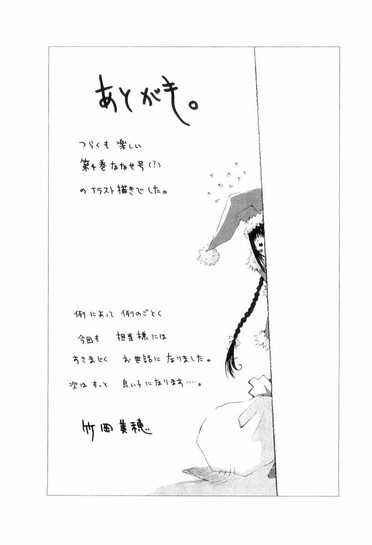
あとがき。
つらくも楽しい第４巻ななせ号（？）のイラスト描きでした。
例によって例のごとく今回も担当様にはすさまじくお世話になりました。
次はもっと良い子になります...。
底本：〝文学少女〟と穢名の天使
野村美月
二〇〇七年五月一〇日 初版発行
入力：
校正：
鹿仔